Hércules : CSP-Solicitudes¶
1. Introducción¶
En el SGI se podrá realizar el registro de solicitudes y su ciclo de revisión y aprobación. En este ciclo intervendrá el personal de investigación y el personal de la unidad de gestión vinculada a la convocatoria, siempre en función de la configuración indicada en la convocatoria durante su registro en el SGI, en referencia a la habilitación de la presentación de solicitudes en el SGI. La tramitación de la solicitud en el SGI no sustituirá a la tramitación de la misma en la plataforma correspondiente de la entidad gestora/convocante/financiadora de la convocatoria, salvo que se trate de convocatorias del plan propio.
El parámetro de "habilitación de la presentación de solicitudes en el SGI" solamente afectará al registro de las solicitudes por parte del personal de investigación. El personal de la unidad de gestión siempre podrá registrar solicitudes sobre las convocatorias de sus unidades de gestión, haciendo referencia siempre a un solicitante. Por norma general, las solicitudes de convocatorias externas (no plan propio) que deban tramitarse a través de los medios facilitados por las entidades convocantes, serán registradas con el parámetro "habilitación de la presentación de solicitudes en el SGI" desactivado, de forma que sea el personal de la unidad de gestión correspondiente quien registre las solicitudes del SGI de forma paralela al proceso de registro que el personal de investigación vaya realizando en la entidad convocante. Si bien este no es un comportamiento limitado en el SGI, ni de base ni por implantación, ya que a través del apartado "Configuración solicitudes" el personal de la unidad de gestión podría habilitar el registro de las solicitudes, por parte del personal de investigación, para cualquier convocatoria registrada en el SGI.
El SGI tine un flujo de estados único, independientemente de que se habilite o no el registro de las mismas para los investigadores/as e independientemente de cual sea la entidad convocante externa. Cada Universidad establecerá las pautas para hacer corresponder este flujo con el establecido por la entidad correspondiente que gestiona la convocatoria.
1.1 Detalle de una solicitud¶
El SGI se plantea tres tipos de solicitud unificados:
- Solicitudes tipo "proyecto"
- Solicitudes tipo "grupo investigación"
- Solicitudes tipo "RRHH"
La vinculación del tipo de solicitud a la convocatoria se realiza en el apartado "Datos generales" de la Convocatoria, a través del campo "tipo solicitud SGI" (CSP-Convocatorias - 3.1 Datos generales)
Existe un comportamiento común a todos los tipos de solicitudes así como una serie de apartados base que estarán presentes en todos los tipos de solicitud. Con estos apartados base, que incluyen unos datos generales, documentos, hitos y el ciclo de estados, se permite disponer de una estructura mínima para la gestión de solicitudes genéricas confiriendo así al SGI la capacidad de gestionar en el futuro nuevos tipos de solicitud que no requieran un comportamiento especial. Los apartados comunes a todos los tipos de solicitud y que permiten realizar un tratamiento homogéneo de las mismas son:
- Datos generales.
- Documentos.
- Histórico de estados.
- Hitos.
Además de estos apartados, en el caso concreto de las solicitudes de tipo "proyecto", se dispondrá de los apartados:
- Ficha general.
- Áreas de conocimiento.
- Clasificaciones (NABS, UNESCO, CNAE, etc.).
- Equipo.
- Responsable económico.
- Socios.
- Entidades financiadoras.
- Desglose presupuesto.
- Autoevaluación de ética.
Las solicitudes de tipo "grupo investigación" no tendrán ningún apartado adicional específico, es decir, utilizarán los apartados:
- Datos generales.
- Documentos.
- Histórico de estados.
- Hitos.
Las solicitudes de tipo "RRHH" añadirán a los apartados base los siguientes:
- Información adicional del solicitante.
- Identificación del tutor/a.
- Requisitos convocatoria.
- Memoria
1.2 Estados de una solicitud¶
Los estados del ciclo de vida de una solicitud son los siguientes:
- Borrador. Estado inicial. Es el estado en el que por defecto se creará la solicitud en el SGI.
- Solicitada: Una solicitud solo pasará a estado "solicitada" de manera manual, porque así lo indique o bien el personal de investigación que la haya creado o bien cualquier personal de la unidad de gestión correspondiente, en caso que la solicitud no esté abierta al registro directo por parte del personal de investigación.
- En subsanación. Estado intermedio, solo disponible para el personal de la unidad de gestión independientemente que la solicitud haya sido registrada en el SGI directamente por el personal de investigación.
- Presentada subsanación. Estado intermedio. Este estado podrá ser marcado por el personal de investigación, en caso que la solicitud esté abierta al registro directo por parte del personal de investigación en el SGI y si el estado actual es "En subsanación", o por cualquier personal de la unidad de gestión correspondiente. Indicará que el personal de investigación ha presentado la subsanación pertinente.
- Admitida provisional. Estado intermedio, solo disponible para el personal de la unidad de gestión independientemente que la solicitud haya sido registrada en el SGI directamente por el personal de investigación.
- Excluida provisional. Estado intermedio, solo disponible para el personal de la unidad de gestión independientemente que la solicitud haya sido registrada en el SGI directamente por el personal de investigación.
- Alegación fase admisión. Estado intermedio. Este estado podrá ser marcado por el personal de investigación, en caso que la solicitud esté abierta al registro directo por parte del personal de investigación en el SGI y si el estado actual es "Excluida provisional", o por cualquier personal de la unidad de gestión correspondiente. Indicará que el personal de investigación ha presentado la alegación pertinente.
- Excluida definitiva. Estado intermedio, solo disponible para el personal de la unidad de gestión independientemente que la solicitud haya sido registrada en el SGI directamente por el personal de investigación.
- Recurso fase admisión. Estado intermedio. Este estado podrá ser marcado por el personal de investigación, en caso que la solicitud esté abierta al registro directo por parte del personal de investigación en el SGI y si el estado actual es "Excluida definitiva", o por cualquier personal de la unidad de gestión correspondiente. Indicará que el personal de investigación ha presentado la alegación pertinente.
- Admitida definitiva. Estado intermedio, solo disponible para el personal de la unidad de gestión independientemente que la solicitud haya sido registrada en el SGI directamente por el personal de investigación.
- Denegada provisional: Estado intermedio, solo disponible para el personal de la unidad de gestión independientemente que la solicitud haya sido registrada en el SGI directamente por el personal de investigación.
- Alegación fase provisional. Estado intermedio. Este estado podrá ser marcado por el personal de investigación, en caso que la solicitud esté abierta al registro directo por parte del personal de investigación en el SGI y si el estado actual es "Denegada provisional", o por cualquier personal de la unidad de gestión correspondiente. Indicará que el personal de investigación ha presentado la alegación pertinente.
- Concedida provisional. Estado intermedio, solo disponible para el personal de la unidad de gestión independientemente que la solicitud haya sido registrada en el SGI directamente por el personal de investigación. Desde este estado ya estará disponible la opción de "Crear proyecto" desde la solicitud.
- Concedida provisional alegada: Estado intermedio, solo disponible para el personal de la unidad de gestión independientemente que la solicitud haya sido registrada en el SGI directamente por el personal de investigación. Desde este estado ya estará disponible la opción de "Crear proyecto" desde la solicitud.
- Concedida provisional no alegada: Estado intermedio, solo disponible para el personal de la unidad de gestión independientemente que la solicitud haya sido registrada en el SGI directamente por el personal de investigación. Desde este estado ya estará disponible la opción de "Crear proyecto" desde la solicitud.
- Denegada provisional alegada: Estado intermedio, solo disponible para el personal de la unidad de gestión independientemente que la solicitud haya sido registrada en el SGI directamente por el personal de investigación.
- Denegada provisional no alegada: Estado intermedio, solo disponible para el personal de la unidad de gestión independientemente que la solicitud haya sido registrada en el SGI directamente por el personal de investigación.
- Desistida. Estado final. Este estado podrá ser marcado por el personal de investigación, en caso que la solicitud esté abierta al registro directo por parte del personal de investigación en el SGI y si el estado actual es "Borrador", "En subsanación", "Excluida provisional", "Excluida definitiva", "Denegada provisional", "Denegada", o por cualquier personal de la unidad de gestión correspondiente.
- Reserva provisional: Estado intermedio, solo disponible para el personal de la unidad de gestión independientemente que la solicitud haya sido registrada en el SGI directamente por el personal de investigación.
- En negociación: Estado intermedio, solo disponible para el personal de la unidad de gestión independientemente que la solicitud haya sido registrada en el SGI directamente por el personal de investigación.
- Concedida: Estado intermedio, solo disponible para el personal de la unidad de gestión independientemente que la solicitud haya sido registrada en el SGI directamente por el personal de investigación. Desde este estado ya estará disponible la opción de "Crear proyecto" desde la solicitud.
- Denegada. Estado final. Este estado podrá ser marcado por cualquier personal de la unidad de gestión correspondiente independientemente que la solicitud haya sido registrada en el SGI directamente por el personal de investigación.
- Recurso fase concesión: Estado intermedio, solo disponible para el personal de la unidad de gestión independientemente que la solicitud haya sido registrada en el SGI directamente por el personal de investigación.
- Reserva: Estado intermedio, solo disponible para el personal de la unidad de gestión independientemente que la solicitud haya sido registrada en el SGI directamente por el personal de investigación.
- Firmada: Estado final. Este estado podrá ser marcado por cualquier persona de la unidad de gestión correspondiente independientemente que la solicitud haya sido registrada en el SGI directamente por el personal de investigación.
- Renunciada: Estado final. Este estado podrá ser marcado por cualquier persona de la unidad de gestión correspondiente independientemente que la solicitud haya sido registrada en el SGI directamente por el personal de investigación.
- Adicionalmente existirán dos estados, que solo afectarán a solicitudes de RRHH:
- Validada: Este estado puede ser marcado por el/la tutor/a que hubiese sido especificado en la solicitud. El/la tutor/a podrá pasar a este estado solamente cuando la solicitud esté en "solicitada". Este estado también podrá ser marcado por cualquier persona de la unidad de gestión correspondiente, sin que exista en este caso ninguna restricción sobre el estado previo que tuviese la solicitud. A partir del estado "Validada", independientemente de quien lo hubiera marcado, la solicitud podrá seguir teniendo el mismo comportamiento establecido para el resto de estados (desde "en subsanación" hasta "concedida", "denegada" o "renunciada").
- Rechazada: Este estado puede ser marcado por el/la tutor/a que hubiese sido especificado en la solicitud. El/la tutor/a podrá pasar a este estado solamente cuando la solicitud esté en "solicitada". Este estado también podrá ser marcado por cualquier persona de la unidad de gestión correspondiente, sin que exista en este caso ninguna restricción sobre el estado previo que tuviese la solicitud. A partir del estado "Rechazada", independientemente de quien lo hubiera marcado, la solicitud podrá seguir teniendo el mismo comportamiento establecido para el resto de estados (desde "en subsanación" hasta "concedida", "denegada" o "renunciada").
El personal de la unidad de gestión puede pasar la solicitud de cualquier estado a cualquier otro estado (hacia delante y hacia atrás), no habrá ningún tipo de restricciones.
El personal de investigación como solicitante únicamente podrá realizar los siguientes cambios de estado:
-
Del estado "Borrador" o "Rechazada" a los estados:
- Solicitada
- Desistida
- Del estado "En subsanación" a los estados:
- Presentada subsanación
- Desistida
- Del estado "Excluida provisional" a los estados:
- Alegación fase admisión
- Desistida"
- Del estado "Excluida definitiva" a los estados:
- Recurso fase admisión
- Desistida
- Del estado "Denegada provisional" a los estados:
- Alegación fase provisional
- Desistida
- Del estado "Denegada" a los estados:
- Recurso fase concesión
- Desistida
Las solicitudes de tipo "RRHH" implementará un flujo adicional que implica la participación del personal de investigación que actúa como tutor/as del trabajo asociado. El personal de investigación como tutor/a podrá realizar los siguientes cambios de estado:
-
Del estado "Solicitada" a los estados:
- Validada
- Rechazada
El flujo de estados estará integrado con el módulo de avisos global al SGI, de forma que el personal de investigación y el personal de la unidad de gestión reciban notificaciones de acuerdo a las modificaciones realizadas sobre el estado de la Solicitud.
2. Listado y búsqueda de solicitudes¶
El acceso a la gestión de solicitudes ocupa la segunda posición en el menú del módulo CSP. Siguiendo la estructura general del SGI, tras pulsar en el menú Solicitudes se accede a la página inicial que contiene el listado de solicitudes y su buscador, que sigue las normas básicas descritas en MDU-Manual de usuario - 3.2 Buscadores y listados.
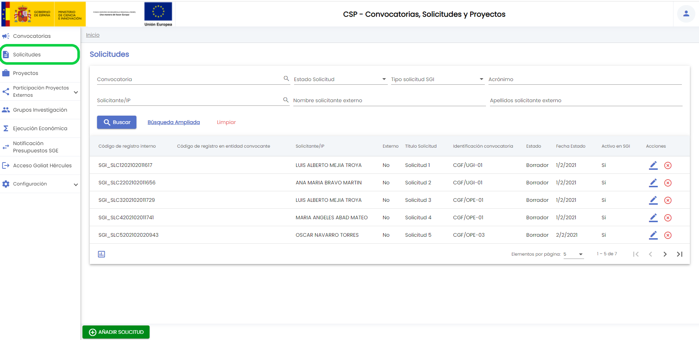
Por defecto, se listan todas las solicitudes disponibles sobre una tabla de resultados paginada, MDU-Manual de usuario - 3.5 Paginación de listados. La tabla muestra una serie de campos significativos:
- Código interno: Código de registro de la solicitud generado automáticamente al crear la solicitud. Esta formado por un sufijo unido a la fecha y hora de la creación, por tanto, es único y permite identificar inequívocamente a la solicitud.
- Código de registro en entidad convocantes: Código de registro de la solicitud en la entidad convocante, en caso que la solicitud se haya registrado/presentado de forma paralela en la entidad convocante. En el caso de las convocatorias del plan propio (internas a la Universidad) el código introducido se corresponde con el código asignado en el Registro de la institución.
- Solicitante/IP: Nombre y apellidos de la persona solicitante.
- Título solicitud: Título del proyecto o nombre del grupo en los pueda resultar derivando la solicitud.
- Identificación convocatoria: Código identificativo de la convocatoria.
- Estado: Estado actual de la solicitud.
- Fecha estado: Fecha en la se ha alcanzado el estado.
- Activo: Campo que indica si la solicitud ha sido desactivada o no.
- Acciones: Conjunto de acciones que están disponibles sobre la solicitud. Las acciones disponibles sobre cada solicitud podrán variar en función del estado en que se encuentre y si tiene proyectos asociados.
El apartado de solicitud incluye dos buscadores:
- Buscador simple
- Buscador ampliado
Por defecto, se muestra visible el buscador simple.
A través del botón "Limpiar" se eliminará cualquier criterio de búsqueda que hubiese sido introducido en el buscador activo en cada momento.
2.1 Buscador simple¶
Es el buscador mostrado por defecto. Dispone de tres campos de búsqueda:
- Convocatoria: Este campo permite especificar una convocatoria. Se realizará la búsqueda de las solicitudes que pertenezcan a la convocatoria indicada. Para indicar la convocatoria se utilizará el buscador común de convocatorias MDU-Manual de usuario - 7.1 Buscador de convocatorias.
- Estado Solicitud: Campo para aplicar búsquedas por el estado de la solicitud. Es un desplegable con el listado de estados posibles.
- Tipo solicitud SGI: Permite filtrar por los tres tipos de solicitudes que cubre el SGI: tipo proyecto, de rrhh y de grupos.
- Acrónimo: Si se introduce una cadena en este filtro, se listarán las solicitudes de tipo proyecto que contengan la cadena introducida en cualquier parte del campo "acrónimo". Este filtro sólo aplica sobre las solicitudes de tipo proyecto ya que son las únicas que disponen del campo "acrónimo".
- Solicitante IP: Este campo permite especificar una persona. Se realizará la búsqueda de las solicitudes presentadas por la persona indicada en el caso de que dicha persona exista dada de alta en el sistema corporativo de RRHH, es decir, se trate de una persona de investigación de la Universidad. Para indicar la persona se utilizará el buscador común de personas MDU-Manual de usuario - 8.1 Personas
- Nombre solicitante externo: Este campo permite especificar el nombre de una persona ajena a la Universidad y que no existe en el sistema corporativo de RRHH. Si se introduce una cadena en este filtro, se mostrarán las solicitudes que contengan la cadena introducida en cualquier parte del campo "nombre solicitante".
- Apellidos solicitante externo: Este campo permite especificar los apellidos de una persona ajena a la Universidad y que no existe en el sistema corporativo de RRHH. Si se introduce una cadena en este filtro, se mostrarán las solicitudes que contengan la cadena introducida en cualquier parte del campo "apellidos solicitante".
Una vez introducidos los filtros de búsqueda se debe pulsar el botón "Buscar". Los resultados coincidentes se mostrarán en el listado de resultados. Todos los filtros de búsqueda actuarán como una conjunción "y", es decir, las solicitudes que se muestren en el listado de resultados deberán cumplir todos los filtros especificados.
Se puede utilizar el botón "Limpiar" para vaciar cualquier valor introducido en cualquiera de los dos campos. Además de vaciar los campos de búsqueda el botón "Limpiar" vuelve a realizar la búsqueda, mostrando el listado completo de solicitudes.
Si se pulsa el botón "Buscador ampliado" se cambiará a la búsqueda avanzada.
2.2 Buscador ampliado¶
Al pulsar el botón "Buscador ampliado" se mostrarán todos los filtros de este buscador. El aspecto de la ventana de solicitudes pasa a ser:
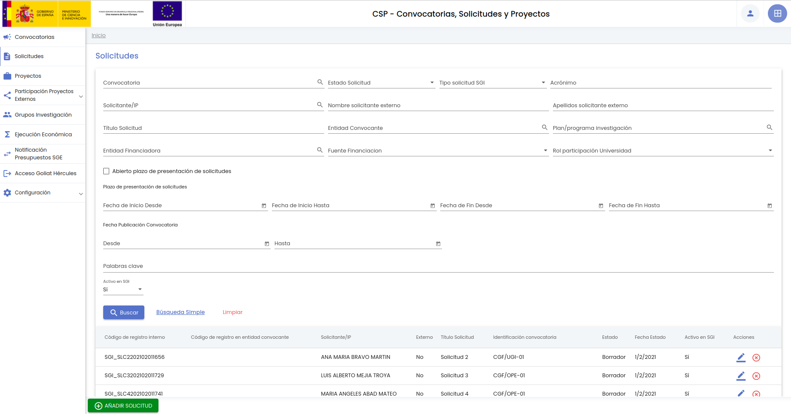
El buscador ampliado contiene los siguientes campos:
- Convocatoria: Este campo permite especificar una convocatoria. Se realizará la búsqueda de las solicitudes que pertenezcan a la convocatoria indicada. Para indicar la convocatoria se utilizará el buscador común de convocatorias MDU-Manual de usuario - 7.1 Buscador de convocatorias
- Estado Solicitud: Campo para aplicar búsquedas por el estado de la solicitud. Es un desplegable con el listado de estados posibles.
- Acrónimo: Si se introduce una cadena en este filtro, se listarán las solicitudes de tipo proyecto que contengan la cadena introducida en cualquier parte del campo "acrónimo". Este filtro sólo aplica sobre las solicitudes de tipo proyecto ya que son las únicas que disponen del campo "acrónimo".
- Solicitante/IP: Este campo permite especificar una persona. Se realizará la búsqueda de las solicitudes presentadas por la persona indicada en el caso de que dicha persona exista dada de alta en el sistema corporativo de RRHH, es decir, se trate de una persona de investigación de la Universidad. Para indicar la persona se utilizará el buscador común de personas MDU-Manual de usuario - 8.1 Personas
- Nombre solicitante externo: Este campo permite especificar el nombre de una persona ajena a la Universidad y que no existe en el sistema corporativo de RRHH. Si se introduce una cadena en este filtro, se mostrarán las solicitudes que contengan la cadena introducida en cualquier parte del campo "nombre solicitante".
- Apellidos solicitante externo: Este campo permite especificar los apellidos de una persona ajena a la Universidad y que no existe en el sistema corporativo de RRHH. Si se introduce una cadena en este filtro, se mostrarán las solicitudes que contengan la cadena introducida en cualquier parte del campo "apellidos solicitante".
- Título Solicitud: Si se introduce una cadena en este filtro, se mostrarán las solicitudes que contengan la cadena introducida en cualquier parte del campo "título".
- Entidad convocante: Este campo permite especificar una entidad. Se realizará la búsqueda de las solicitudes que pertenezcan a las convocatorias que contengan a la entidad indicada como una de sus entidades convocantes. Para indicar la entidad convocante se utilizará el buscador común de empresas MDU-Manual de usuario - 8.2 Entidades o empresas. Si el campo "convocatoria" de la solicitud no está informado será indicativo de que la solicitud no fue vinculada a una convocatoria registrada en el SGI por lo que, en este caso, la solicitud quedará excluida de los resultados al no poder aplicar el filtro establecido.
- Plan/programa investigación. Este campo permite especificar una plan o un programa de investigación. Se realizará la búsqueda de todas las solicitudes en las que en el campo modalidad o programa convocatoria de alguna de las entidades convocantes que tangan vinculadas tengan vinculado el elemento seleccionado en el árbol o cualquiera que derive del mismo. Para indicar el plan o el programa se utilizará el buscador común de plan/programa de investigación MDU - Manual de usuario#7.7Selector de plan/programa de investigación.
- Entidad financiadora: Este campo permite especificar una entidad. Se realizará la búsqueda de las solicitudes que pertenezcan a las convocatorias que contengan a la entidad indicada como una de sus entidades financiadoras. Para indicar la entidad financiadora se utilizará el buscador común de empresas MDU-Manual de usuario - 8.2 Entidades o empresas. Si el campo "convocatoria" de la solicitud no está informado será indicativo de que la solicitud no fue vinculada a una convocatoria registrada en el SGI por lo que, en este caso, la solicitud quedará excluida de los resultados al no poder aplicar el filtro establecido.
- Fuente financiación: Permite acotar la búsqueda a las solicitudes que pertenezcan a las convocatorias sobre las que participe una entidad financiadora a través de la fuente de financiación especificada. La fuente de financiación por la que se buscará deberá ser seleccionada del listado. Se listarán todas las fuentes de financiación disponibles en el SGI. Para más información se puede consultar CSP-Configuración - 10 Fuentes de financiación. Si el campo "convocatoria" de la solicitud no está informado será indicativo de que la solicitud no fue vinculada a una convocatoria registrada en el SGI por lo que, en este caso, la solicitud quedará excluida de los resultados al no poder aplicar el filtro establecido.
- Rol participación universidad: Permite acotar la búsqueda a las solicitudes de tipo proyecto donde la universidad participa con un rol determinado. Se listarán los roles de participación de la universidad activos disponibles en el SGI. Para más información se puede consultar CSP-Configuración.
- Abierto plazo de presentación de solicitudes: Este filtro permite buscar las solicitudes que pertenezcan a las convocatorias cuyo plazo de presentación de solicitudes se encuentre vigente al momento actual. El plazo de presentación de solicitudes no es un campo específico de la convocatoria sino que debe haber sido configurado como tal (apartados "configuración solicitudes" y "fases" de la Convocatoria). En caso que la Solicitud no se haya asociado a ninguna convocatoria registrada en el SGI o no tenga informado el plazo de presentación de solicitudes quedará excluida de los resultados, pues el filtro no podrá aplicarse sobre ella.
- Plazo de presentación de solicitudes. Se podrá filtrar por el periodo de presentación de las solicitudes, permitiendo especificar la fecha de inicio y fin de este periodo. Cada una de las fechas, inicio y fin, se podrá introducir como un rango "fecha desde" "fecha hasta". Con este filtro se permitirá buscar las solicitudes que pertenezcan a convocatorias registradas en el SGI, configuradas con "presentación de solicitudes a través del SGI" y cuyo plazo de presentación de solicitudes, especificado en lo apartados "configuración solicitudes" y "fases" de la Convocatoria, cumpla el/los rango/s de fecha/s indicados en este filtro.
- Fecha publicación convocatoria desde - hasta: Con los campos "desde" y "hasta", ambos del tipo fecha, se puede establecer un periodo que permitirá buscar las solicitudes que pertenezcan a las convocatorias cuya fecha de publicación esté comprendida en el mismo. Ambos campos disponen de un control calendario a través del que se podrá seleccionar la fecha deseada. En caso que la Solicitud no se haya asociado a ninguna convocatoria registrada en el SGI quedará excluida de los resultados, pues el filtro no podrá aplicarse sobre ella.
- Palabras clave: Este filtro actúa sobre las palabras clave de la solicitud. Se pueden incluir una o varias palabras. Este campo sigue el comportamiento general descrito en MDU-Manual de usuario - 9 Palabras clave.
- Activo en SGI: Es un desplegable con los valores "sí", "no", "todos". La entidad "solicitud" admite eliminación con recuperación (MDU-Manual de usuario - 3.10 Eliminar elemento), con el campo "activo" se permite realizar búsquedas sobre las solicitudes que hubieran sido eliminadas. Por defecto el filtro está precargado con el valor "sí", para que de partida solo se muestren las solicitudes activas. Para mostrar las solicitudes que hubieran sido eliminadas se debe establecer el valor de este filtro a:
- No: se muestran solo las solicitudes que hubieran sido desactivadas (eliminadas).
- Todas: se muestran todas las solicitudes, tanto las activas como las desactivadas (eliminadas).
Una vez introducidos los filtros de búsqueda se debe pulsar el botón "Buscar". Los resultados coincidentes se mostrarán en el listado de resultados. Todos los filtros de búsqueda actuarán como una conjunción "y", es decir, las solicitudes que se muestren en el listado de resultados deberán cumplir todos los filtros especificados.
Se puede utilizar el botón "Limpiar" para vaciar cualquier valor introducido en cualquiera de los campos. Además de vaciar los campos de búsqueda, el botón "Limpiar" vuelve a realizar la búsqueda mostrando el listado completo de solicitudes.
Si se pulsa el botón "Buscador simple" se cambiará a la versión básica del buscador.
2.3 Exportación de solicitudes¶
El listado de solicitudes obtenido del buscador puede ser exportado siguiendo los criterios generales indicados en MDU - Exportación de listados.
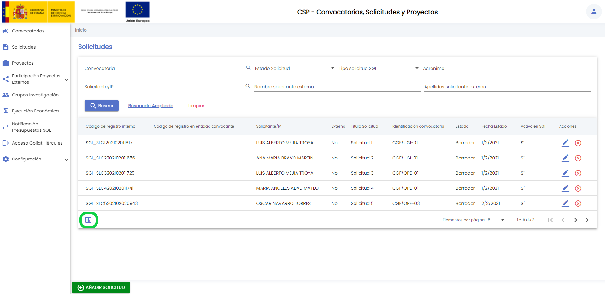
Al pulsar el icono de exportación situado a pie del listado de resultados, se mostrarán las opciones de exportación propias de las solicitudes:
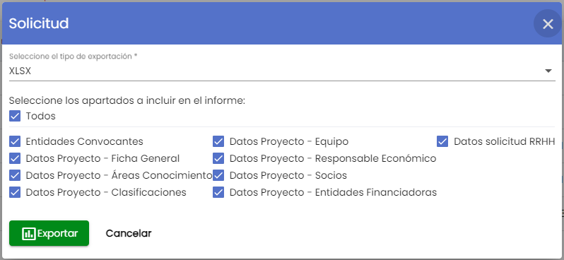
Se debe seleccionar el formato de exportación. Los disponibles son:
- XLSX
- CSV
El detalle de una solicitud se encuentra agrupado en diferentes apartados. Todos los apartados son susceptibles de ser incluidos en la exportación, sin embargo, para dar más flexibilidad a la exportación se podrá indicar qué apartados se precisa que sean incluidos. Por defecto, estarán marcados todos los apartados, pudiendo desmarcarlos y pasar a marcar únicamente aquellos que se desea incluir:
- Se se pulsa sobre la casilla "todos" estando marcada, se desmarcarán todas las casillas, pudiendo pasar a seleccionar individualmente cada una de ellas.
- Si la casilla "todos" está marcada, se podrán desmarcar una a una las casillas de aquellos apartados que no se desea incluir en la exportación.
Una vez introducidos todos los criterios de la exportación se deberá pulsar el botón "Exportar", se generará el documento asociado que podrá ser nombrado y descargado a la unidad de disco deseada.
3. Creación de una solicitud¶
Desde el listado de solicitudes se dispondrá del botón "Añadir solicitud".
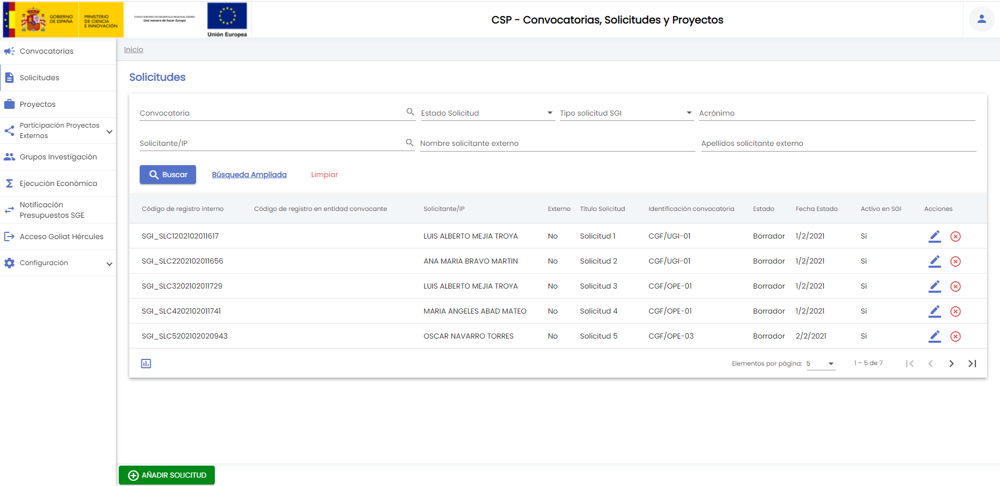
Al pulsar este botón se mostrará la ventana de introducción de "Datos generales" de una solicitud, que presenta el siguiente aspecto:
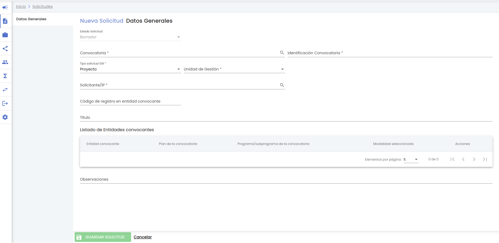
Para la creación de una nueva solicitud únicamente es necesario informar los datos del apartado de "Datos generales", el resto de apartados se podrán informar desde la edición o modificación de la solicitud (ver apartado del manual Modificar una solicitud).
A continuación se describe cada uno de los campos solicitados en este formulario o pantalla:
- Convocatoria. Campo para buscar la convocatoria a la que pertenece la solicitud, siempre y cuando la convocatoria este registrada previamente en el SGI. Para indicar la convocatoria se utiliza el buscador común de convocatorias MDU-Manual de usuario - 7.1 Buscador de convocatorias. La convocatoria seleccionada que se devolverá desde el buscador será a la que quedará vinculada la solicitud. El título de la convocatoria se mostrará sobre el campo "Convocatoria" de este formulario. Será obligatorio indicar una convocatoria salvo que se cumplimente el campo "Identificación convocatoria". Si no se especifica una convocatoria de las registradas en el SGI la solicitud no dispondrá de información como: modalidad seleccionada, hitos, áreas temáticas (en el caso de proyectos).
- Identificación convocatoria: Campo de texto libre para introducir un identificador de una convocatoria que no ésta registrada en el SGI. Si no se ha seleccionado una convocatoria registrada en el SGI en el campo anterior, este campo será obligatorio.
- Tipo solicitud SGI: Campo de tipo desplegable que indica el tipo de la solicitud, es decir, discrimina si la solicitud es de tipo "proyecto", "grupo de investigación" o "rrhh". Por defecto estará marcado el valor "Proyecto". En el caso de que se haya elegido una Convocatoria registrada en el SGI (se ha informado el campo "Convocatoria"), se recuperará el dato de la misma y no se deja modificar tal y como muestra la siguiente imagen:
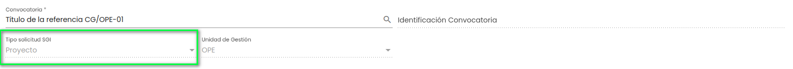
En caso que la solicitud no se vincule a una convocatoria registrada en el SGI (se ha informado el campo "Identificación Convocatoria"), se deberá indicar obligatoriamente el tipo de formulario de la solicitud. Puede tomar los valores:
-
-
- Proyecto - Grupo - RRHH
-
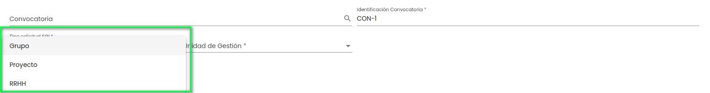
- Unidad de gestión: Campo de tipo desplegable que indica la unidad de gestión a la que pertenece la solicitud. En el caso de que se haya elegido una Convocatoria registrada en el SGI (se ha informado el campo "Convocatoria"), se recuperará el campo unidad de gestión de la convocatoria asociado a la misma y no se deja modificar tal y como muestra la siguiente imagen:
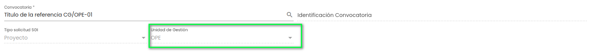
En caso que la solicitud no se vincule a una convocatoria registrada en el SGI (se ha informado el campo "Identificación Convocatoria"), se deberá indicar obligatoriamente la unidad de gestión a la que pertenece la solicitud. El listado disponible serán las unidades de gestión sobre las que el usuario tenga habilitado el permiso de creación de solicitudes.
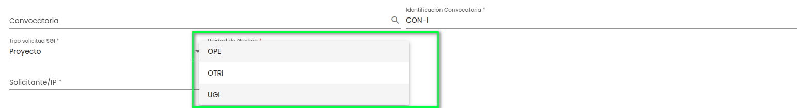
- Solicitante/IP: Campo para buscar a la persona que es el solicitante o investigador/a principal del proyecto o del nuevo grupo de investigación que se quiere constituir. Para indicar la persona se utiliza el buscador común de personas MDU - Manual de usuario - 8.1 Personas. Únicamente se muestra este campo si en el campo "Tipo solicitud SGI" se ha seleccionado "Proyecto" o "Grupo". En estos casos será un campo obligatorio. Cuanto el "Tipo solicitud SGI" es "RRHH" no se pinta el campo ni será obligatorio.
- Código de registro en entidad convocante: Campo de texto libre para introducir el código de registro de la solicitud en la entidad convocante, en caso que la solicitud se haya registrado/presentado de forma paralela en la entidad convocante. En el caso de las convocatorias del plan propio (internas a la Universidad) el código introducido se correspondería con el código asignado en el Registro de la institución. Es un campo opcional.
- Título: Campo de texto para introducir el título de la solicitud, si se trata de una solicitud de un proyecto de investigación, será el título del proyecto, si es una solicitud de grupos será el nombre del grupo. Es un campo opcional.
- Listado de entidades convocantes: En el caso de que se haya elegido una Convocatoria registrada en el SGI (se ha informado el campo "Convocatoria"), se recuperará el listado de entidades convocantes junto con el plan de investigación y el programa seleccionados para cada entidad convocante de la convocatoria asociado a la misma tal y como muestra la siguiente imagen:
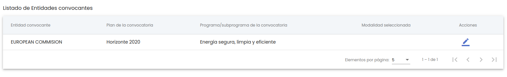
El personal de la unidad de gestión podrá seleccionar un programa/subprograma/modalidad/submodalidad por cada una de las entidades convocantes, de acuerdo a la definición de la convocatoria pulsando el icono del lápiz en cada una de las entidades convocantes mostradas en la tabla. Al pulsar el icono de la acción se muestra la siguiente pantalla:
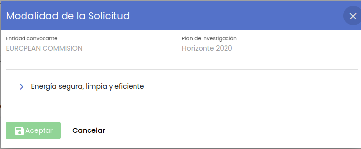
Se muestra el árbol de programas/subprogramas/modalidades/submodalidades del plan de investigación de la entidad convocante a partir del programa seleccionado en la convocatoria permitiendo al usuario ir desplegando el árbol de programas para seleccionar el adecuado.
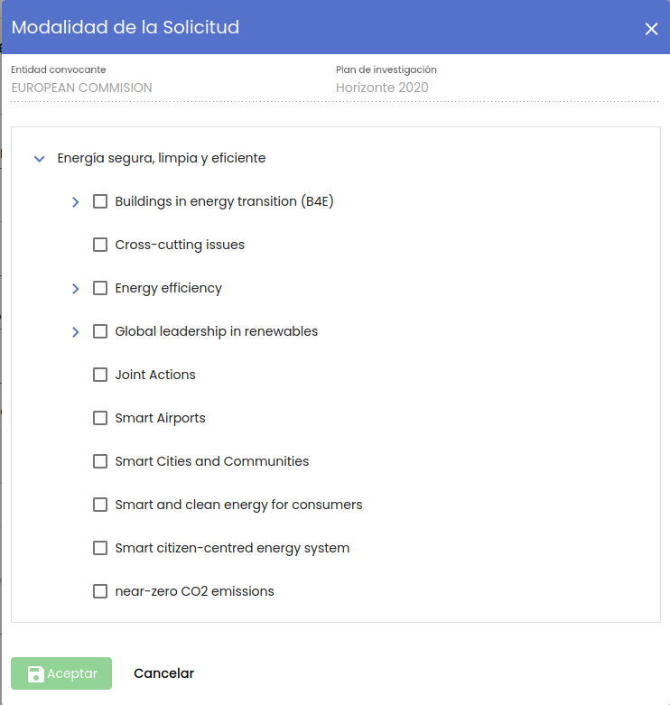
En el árbol mostrado, serán seleccionables todos los nodos de cualquier rama a partir del nodo referenciado por la convocatoria (campo "programa/subprograma de la convocatoria") o el mismo nodo referenciado en la convocatoria en caso que de él no cuelguen más nodos. Únicamente se podrá seleccionar una modalidad por cada programa de la convocatoria.
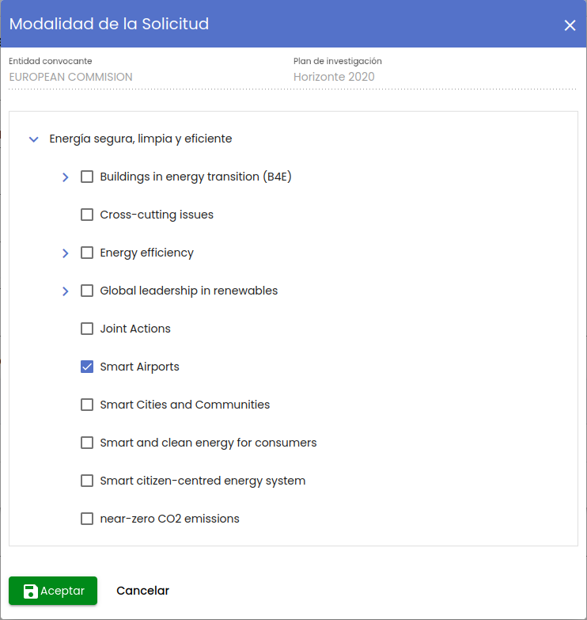
Una vez seleccionada la modalidad se activará el botón "Aceptar". Al pulsar sobre el botón "Aceptar" la modalidad de la solicitud se mostrará en el listado de entidades convocantes tal y como muestra la siguiente imagen:
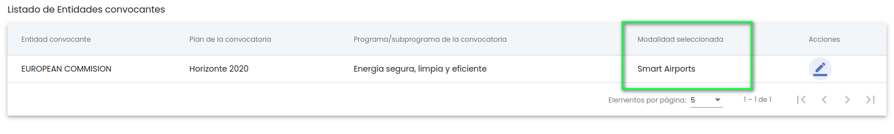
En caso que la solicitud no se vincule a una convocatoria registrada en el SGI (se ha informado el campo "Identificación Convocatoria") el listado aparecerá vacío y no se podrá seleccionar ningún programa/subprograma/modalidad en la solicitud.
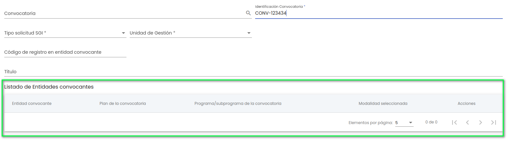
- Observaciones: Campo de texto abierto para detallar cualquier observación genérica. Es un campo opcional.
Todos los campos solicitados en el apartado o en el formulario de "Datos generales" de la solicitud son los mismos independientemente del "Tipo Solicitud SGI" (proyecto, grupo o RRHH) excepto para el tipo de solicitud "Grupo" que para este caso se piden dos campos adicionales:
- Tipo solicitud grupo: Campo de tipo desplegable que indica si se trata de una solicitud de constitución de grupo o de modificación de un grupo. Es un campo obligatorio para las solicitudes que tengan en el campo "tipo solicitud SGI" el valor "Grupo". Puede tomar los valores:
- Constitución nuevo grupo
- Modificación datos grupo
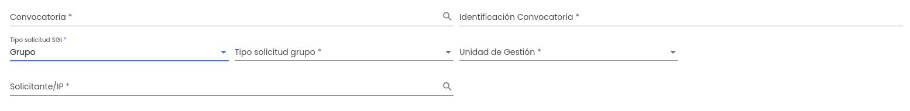
- Grupo: Únicamente se muestra y es un campo obligatorio en el caso de que en el campo "Tipo solicitud grupo" se haya seleccionado la opción "Modificación datos grupo". En caso contrario no se mostrará este campo. Es un campo de tipo desplegable con el nombre de los grupos de investigación en los que la persona introducida en el campo "Solicitante/IP" es el investigador/a principal o es una persona autorizada del grupo de investigación. Sino se ha introducido el "Solicitante/IP" el campo estará deshabilitado:
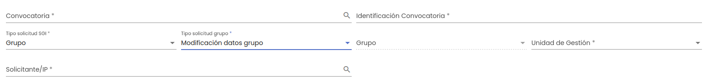
Una vez introducido al "Solicitante/IP" se muestra el listado de grupos de investigación en los que es el investigador/a principal o es una persona autorizada:
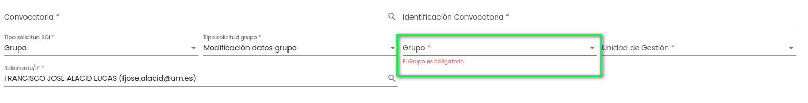
Una vez introducidos todos los campos obligatorios del formulario de "Datos generales" se activa el botón "Guardar" y se muestra el icono del signo de admiración en los "Datos generales" y en el pie de página a lado del botón "Guardar". Este icono indica que se han introducido cambios en el formulario (se han informado los campos) pero no se ha dado a "Guardar".
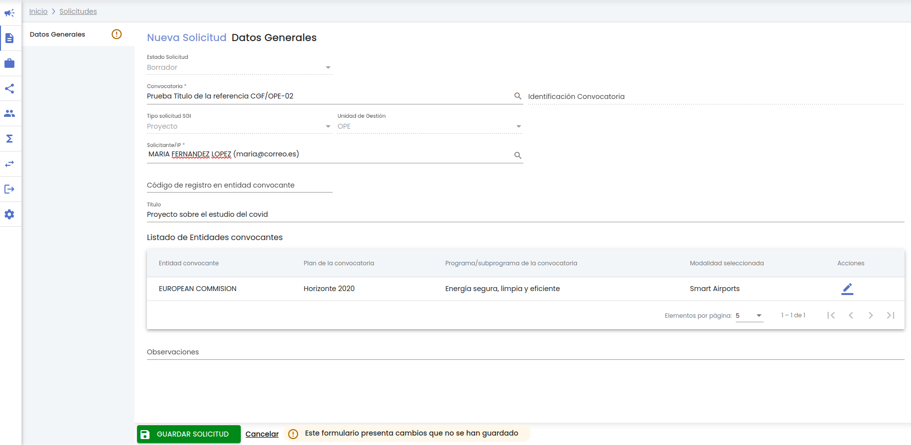
Si se pulsa el botón "Guardar" se crea la solicitud con los datos generales de la solicitud.
En caso de que la solicitud este vinculada a una convocatoria registrada en el SGI se comprobará si el investigador/a principal cumple con los requisitos establecidos por la convocatoria en el apartado "Requisitos IP". En caso de que no se cumpla alguno de los requisitos se mostrará una ventana de confirmación con el mensaje:
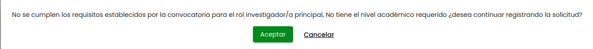
Si se pulsa el botón Cancelar se cerrará la ventana del mensaje de confirmación y la solicitud no será creada.
Si se pulsa el botón Aceptar la solicitud se crea y se mostrará un mensaje de que la solicitud se ha creado correctamente igual que el de la siguiente imagen.
Una vez creada la solicitud te lleva a la edición o modificación de la solicitud donde se muestran el resto de apartados para que sean cumplimentados. Ver Modificar una solicitud
4. Modificar una solicitud¶
La modificación de los datos de una solicitud puede realizarse a través del icono de acción editar  del listado de solicitudes. Si ya existe el proyecto generado a partir de la solicitud el personal de gestión no podrá modificar ningún dato de la solicitud y visualizará todos los campos de todos los apartados en modo consulta. Sino existe el proyecto el personal de gestión podrá modificar cualquier dato de cualquiera de los apartados de la solicitud (a excepción de los campos comentados en cada uno de los apartados).
del listado de solicitudes. Si ya existe el proyecto generado a partir de la solicitud el personal de gestión no podrá modificar ningún dato de la solicitud y visualizará todos los campos de todos los apartados en modo consulta. Sino existe el proyecto el personal de gestión podrá modificar cualquier dato de cualquiera de los apartados de la solicitud (a excepción de los campos comentados en cada uno de los apartados).
Tras pulsar la acción editar se mostrará el detalle de la solicitud, en su apartado inicial "Datos generales" seleccionado, pudiendo acceder a través del menú lateral izquierdo al resto de apartados.
Si la solicitud es de tipo solicitud SGI "Proyecto" la edición de la solicitud nada mas crearse la solicitud es el siguiente:
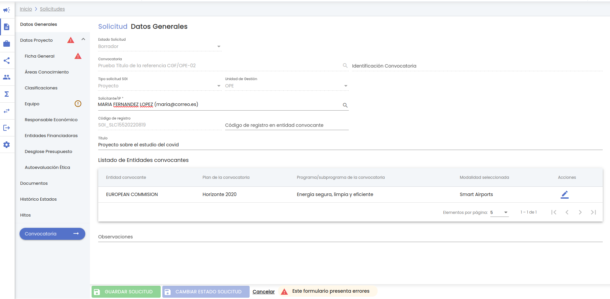
Se muestran los datos introducidos durante la creación de la solicitud de proyecto en el apartado de "Datos generales", pero se muestra el aviso de que existen errores en el formulario, porque hay errores en el apartado "Ficha general" (hay dos campos que son de cumplimentación obligatoria para el caso de solicitudes de tipo "proyecto") los cuales el personal de gestión debe de informarlos para poder guardar la solicitud. No se activará el botón "Guardar" hasta a ver introducido dichos campos obligatorios. Ver funcionalidad del apartado "Ficha general" para mas detalle 4.5 Datos Proyecto - Ficha general.
La edición de una solicitud de tipo solicitud SGI "Proyecto" que ya se haya editado al menos una vez (ya se han cumplimentado todos los datos obligatorios para la edición o modificación de una solicitud) es el siguiente:
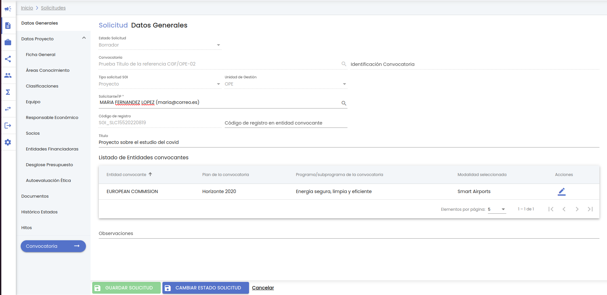
Si la solicitud es de tipo solicitud SGI "RRHH" la edición de la solicitud nada mas crearse la solicitud es el siguiente:
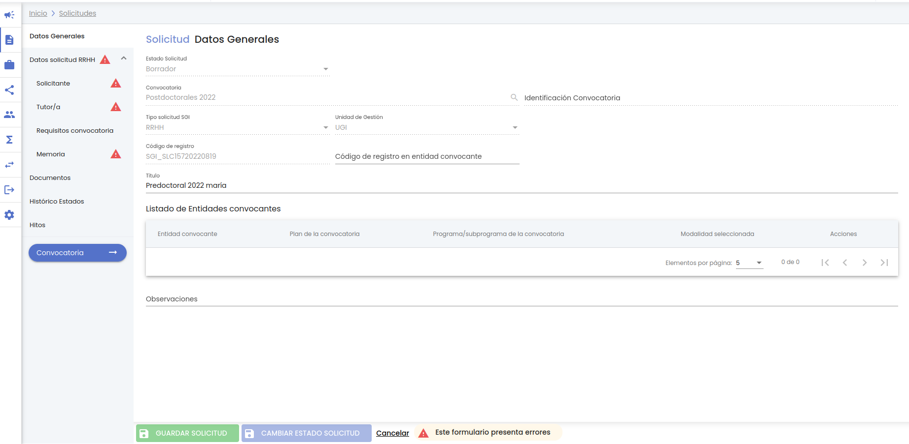
Se muestran los datos introducidos durante la creación de la solicitud de RRHH en el apartado de "Datos generales", pero se muestra el aviso de que existen errores en el formulario, porque hay errores en los apartados "Solicitante", "Tutor/a" y "Memoria" (hay campos que son de cumplimentación obligatoria para el caso de solicitudes de tipo "RRHH") los cuales el personal de gestión debe de informarlos para poder guardar la solicitud. No se activará el botón "Guardar" hasta a ver introducido los campos obligatorios de los tres apartados. Ver funcionalidad en 4.14 Datos solicitud RRHH - Solicitante, 4.15 Datos solicitud RRHH - Tutor/a y 4.17 Datos solicitud RRHH - Memoria
La edición de una solicitud de tipo solicitud SGI "RRHH" que ya se haya editado al menos una vez (ya se han cumplimentado todos los datos obligatorios para la edición o modificación de una solicitud) es el siguiente:
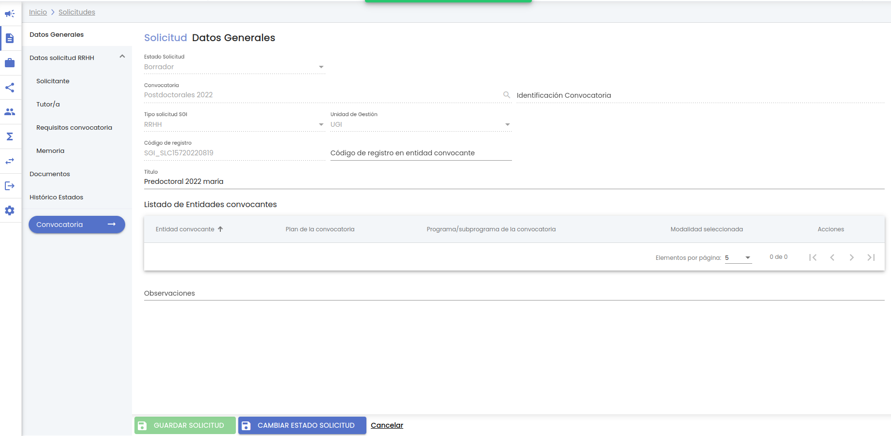
Si la solicitud es de tipo solicitud SGI "Grupo" la edición de la solicitud nada mas crearse la solicitud o la edición de una solicitud que previamente se haya modificado es el mismo y es el siguiente:
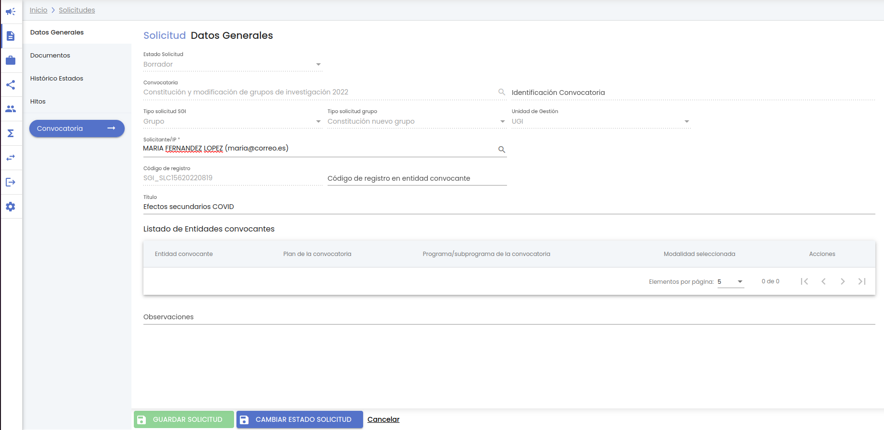
En este caso no existen datos obligatorios para el SGI en el resto de apartados que no sea el de "Datos generales", aunque es muy recomendable al menos subir el documento del formulario de constitución o de modificación del grupo al apartado de "Documentos" (4.2 Documentos).
La edición de una solicitud esta formada por los siguientes bloques de información o apartados:
- Datos generales: Conjunto de datos de información general sobre la solicitud (ya informados durante la creación de la solicitud).
- Datos proyecto - Ficha general: En este apartado se agrupa la información relativa al proyecto/actividad de investigación propuesto. Este apartado solo estará disponible en caso que la solicitud sea de tipo "Proyecto". Contiene datos obligatorios para poder guardar la solicitud.
- Datos proyecto -Áreas de conocimiento: En este apartado el proyecto solicitado se podrá clasificar dentro de una o varias áreas de conocimiento. Este apartado solo estará disponible en caso que la solicitud sea de tipo "Proyecto".
- Datos proyecto - Clasificaciones: Listado con las distintas clasificaciones (UNESCO, CNAE, ...) con las que se identifica el proyecto/actividad de investigación propuesto. Este apartado solo estará disponible en caso que la solicitud sea de tipo "Proyecto".
- Datos proyecto - Equipo: Listado con las personas que forman parte del equipo investigador del proyecto/actividad de investigación propuesto. Este apartado solo estará disponible en caso que la solicitud sea de tipo "Proyecto".
- Datos proyecto - Responsable económico: Persona que se encargará de la parte económica del proyecto propuesto. Sólo puede existir un único responsable económico en cada momento. Este apartado solo estará disponible en caso que la solicitud sea de tipo "Proyecto".
- Datos proyecto - Socios: Listado de socios, entendidos éstos como empresas, que participarán en el proyecto propuesto. Este apartado solo estará disponible en caso que la solicitud sea de tipo "Proyecto" y si en el campo "Proyecto colaborativo" del apartado "Datos generales" se indica el valor "Sí".
- Datos proyecto - Entidades financiadoras: Se visualizarán las entidades financiadoras de la convocatoria, de forma adicional, se podrán añadir otras entidades financiadoras ajenas a la convocatoria. Este apartado solo estará disponible en caso que la solicitud sea de tipo "Proyecto".
- Datos proyecto - Desglose presupuesto: Desglose presupuestario del proyecto en solicitud. Este apartado solo estará disponible en caso que la solicitud sea de tipo "Proyecto".
- Datos proyecto - Autoevaluación de ética: Cuestionario básico (con preguntas sí/no) que permitirá conocer si el proyecto solicitado debe someterse a evaluación por parte del Comité de ética. Este apartado solo estará disponible en caso que la solicitud sea de tipo "Proyecto".
- Datos solicitud RRHH - Solicitante: Recoge información relativa al solicitante. Este apartado solo estará disponible en caso que la solicitud sea de tipo "RRHH". Contiene datos obligatorios para poder guardar la solicitud.
- Datos solicitud RRHH - Tutor/a: Persona que el solicitante propone como tutor/a del trabajo de RRHH. Este apartado solo estará disponible en caso que la solicitud sea de tipo "RRHH". Contiene datos obligatorios para poder guardar la solicitud.
- Datos solicitud RRHH - Requisitos convocatoria: Requisitos especificados en el apartado "Requisitos IP" y en el apartado "Requisitos Equipo "de la convocatoria relativas al nivel académico y categorías exigidas, con sus correspondientes fechas de anterioridad o posterioridad. Este apartado solo estará disponible en caso que la solicitud sea de tipo "RRHH".
- Datos solicitud RRHH - Memoria: Información relativa al trabajo. Este apartado solo estará disponible en caso que la solicitud sea de tipo "RRHH". Contiene datos obligatorios para poder guardar la solicitud.
- Documentos: Apartado para centralizar todos los documentos aportados a la solicitud.
- Histórico de estados: Es un apartado únicamente de información para mostrar las fechas en las que ha cambiado de estado la solicitud.
- Hitos: Listado con las fechas de los acontecimientos que se consideren relevantes para la solicitud. Este apartado solo estará disponible en caso que la solicitud se asocie a una convocatoria del SGI.
Una vez introducidos los datos que se desean modificar, añadir o que sean de cumplimentación obligatoria en cualquiera de los apartados, el personal de la unidad de gestión deberá pulsar sobre el botón "Guardar" situado en la parte inferior de la pantalla en el pie de página para actualizar la solicitud, si no se pulsa sobre el botón "Guardar" todos los cambios realizados se perderán.
Al pulsar el botón "Guardar" en caso de que la solicitud este vinculada a una convocatoria registrada en el SGI se comprobará si el investigador/a principal y/o el resto de miembros del equipo solicitado cumplen los requisitos establecidos por la convocatoria en los apartados "Requisitos IP" y "Requisitos equipo". En caso de que no se cumpla alguno de los requisitos se mostrará una ventana de confirmación con el mensaje:
Si se pulsa el botón Cancelar se cerrará la ventana del mensaje de confirmación y la solicitud no será actualizada ni se guardarán los datos introducidos.
Si se pulsa el botón Aceptar la solicitud se actualiza y se modifican los datos introducidos. Se mostrará un mensaje informativo confirmando que la solicitud ha sido modificada correctamente.
4.1 Datos generales¶
Apartado con los datos de información básica o general de una solicitud.
En el apartado del manual Añadir nueva solicitud se puede ver la descripción detallada de cada campo.
En la edición de la solicitud existen las siguientes restricciones respecto al apartado de "Datos generales":
- Convocatoria: Si la solicitud ya fue vinculada a una convocatoria del SGI en la creación, este campo no podrá modificarse y se mostrará en modo consulta al igual que los datos que se obtienen de la convocatoria, es decir, los campos "Tipos solicitud SGI" y "Unidad de gestión"
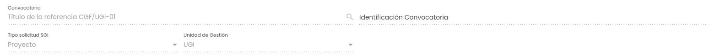
- Identificación convocatoria: Sólo estará habilitado si durante la creación de la solicitud se ha informado este campo, es decir, la convocatoria no esta registrada en el SGI. En este caso se dejará modificar el campo "Unidad de gestión" siempre y cuando el estado de la solicitud sea "Borrador".
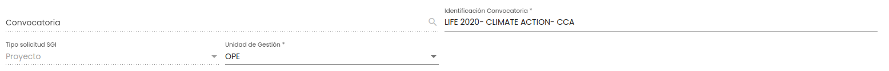
- Tipo solicitud SGI: Es un campo que ya debe estar cumplimentado desde la creación de la solicitud. En la edición siempre se mostrará en modo consulta (deshabilitado), no se podrá modificar nunca este campo.
- Tipo solicitud Grupo: Este campo solo estará disponible si la solicitud está vinculada a una convocatoria de tipo grupo (el campo "Tipo Solicitud SGI" tiene el valor "Grupo)". Se mostrará siempre en modo consulta.
- Unidad de Gestión: Si la solicitud está vinculada a una convocatoria del SGI (campo "convocatoria" informado) este campo se mostrará en modo consulta (deshabilitado) y no se podrá modificar. En caso que la solicitud no se vincule a una convocatoria registrada en el SGI (campo "Identificación convocatoria" informado), el campo se podrá modificar mientras la solicitud este en estado "Borrador".
- Código de registro: Código de registro de la solicitud generado automáticamente al crear la solicitud. Estará formado por un sufijo unido a la fecha y hora de la creación, por tanto, será único y permitirá identificar inequívocamente a la solicitud. Se mostrará siempre en modo consulta.
4.2 Documentos¶
Apartado para centralizar todos los documentos aportados a la solicitud.
Se mostrarán en forma de árbol, los documentos que se tienen que aportar obligatoriamente (porque son los documentos requeridos configurados en la convocatoria CSP-Convocatorias - 3.14 Configuración de solicitudes) y los propios documentos adicionales que se quieran aportar a la solicitud agrupados por el campo "Tipo documento". Podrán existir documentos sin "Tipo de documento" que se mostrarán en el árbol de documentos bajo una rama genérica "sin tipo documento".
En la siguiente imagen muestra una vista del árbol de documentos sin ningún documento requerido en la configuración de la convocatoria y sin ningún documento aportado:
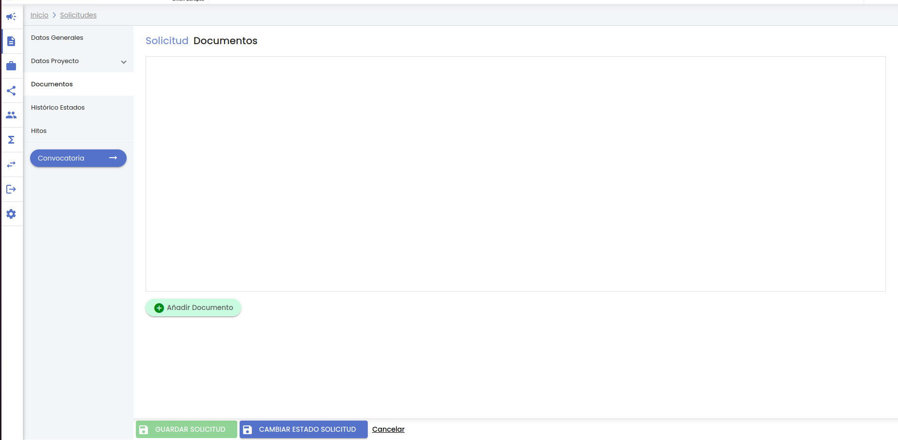
En la siguiente imagen muestra una vista del árbol de documentos con documentos que se deben de aportar obligatoriamente porque así lo marca la convocatoria asociada:
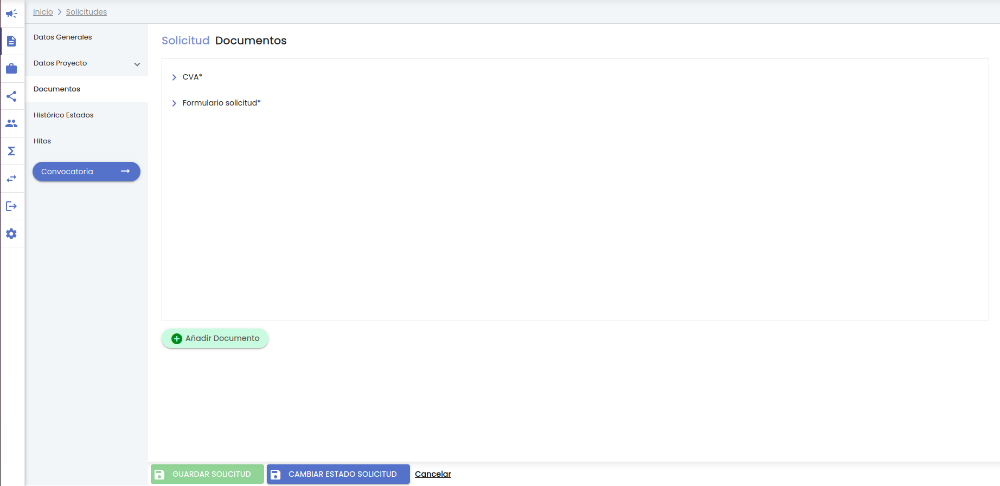
Se muestra el árbol de documentos agrupado por el "Tipo documento" obtenido del listado de " Documentos requeridos" definidos en el apartado "Configuración Solicitudes" de la convocatoria seguido de un "*" para indicar que el documento es obligatorio. Mientras la solicitud este en estado "borrador" no se exigirá que se adjunte, pero si el usuario desea cambiar el estado a la solicitud será cuando se compruebe que todos los documentos obligatorios estén adjuntados. La comprobación de la obligatoriedad se limitará a detectar que se ha adjuntado un documento, nunca a verificar si el contenido se corresponde con lo esperado.
Para ver los documentos de cada "Tipo documento" se tendrá que hacer click sobre el control , que desplegará los documentos de ese tipo.
, que desplegará los documentos de ese tipo.
En el caso que no se hayan aportado ningún documento al desplegar cada tipo de documento se mostrará vacío el contenido igual que la siguiente imagen:
En el caso que ya se haya aportado alguno de los documentos al desplegar cada tipo de documento se visualizará el nombre del documento aportado debajo del tipo de documento:
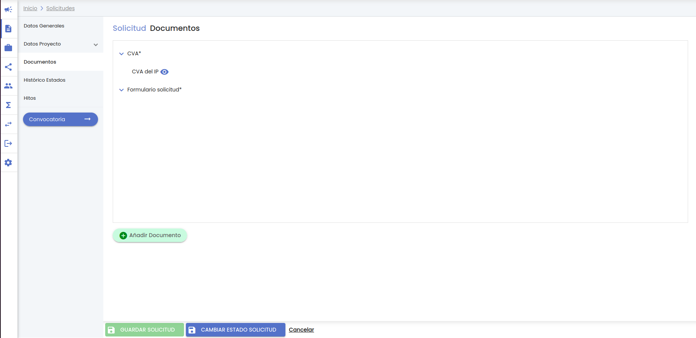
A lado de cada documento aportado aparecerá el icono de la acción Ver  para ir al detalle de cada documento aportado. Desde el detalle del documento es donde se podrá eliminar el documento, modificar sus datos o bien descargar el fichero a través de los botones.
para ir al detalle de cada documento aportado. Desde el detalle del documento es donde se podrá eliminar el documento, modificar sus datos o bien descargar el fichero a través de los botones.
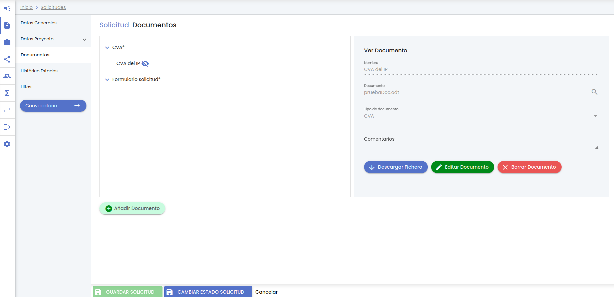
4.2.1 Añadir documento¶
El botón "añadir documento" permite adjuntar un documento de los obligatorios marcados por la convocatoria (apartado "Configuración Solicitudes" de la convocatoria) o bien cualquier otro documento adicional a la solicitud. Tras pulsar el botón se muestra a la derecha del árbol de documentos la pantalla de introducción de datos:
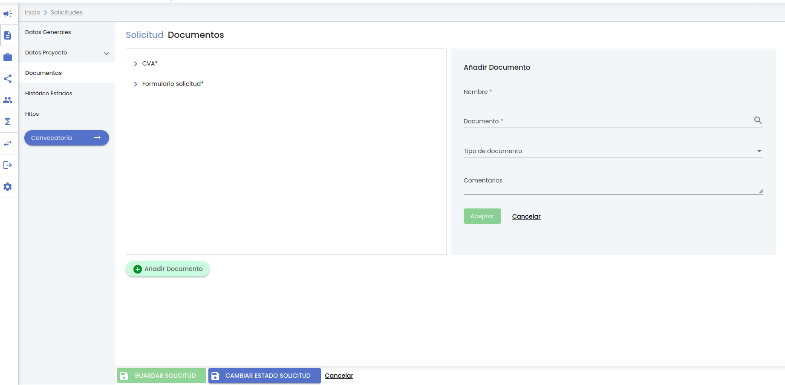
Los campos de un documento son:
- Nombre: Campo de texto libre para introducir el nombre del documento que se visualizará en el árbol de documentos. Es un campo obligatorio.
- Documento: Fichero a adjuntar, a través de la lupa se abrirá una pantalla de examinador de archivos que permite seleccionar un fichero desde la unidad de disco local. Una vez seleccionado un fichero se mostrará el nombre y extensión del mismo sobre el campo "Documento" del formulario. Es un campo obligatorio.
- Tipo de documento: Nombre del tipo de documento. Es un campo desplegable con los tipos de documento asociados a la fase de presentación de solicitudes configurada en la pantalla de "Configuración Solicitud de la Convocatoria". En caso de estar creando una solicitud no vinculada a una convocatoria del SGI o que no se haya definido dicha fase se mostrará el combo vacío.Aunque la solicitud esté vinculada a una convocatoria del SGI, no será obligatorio que un documento subido tenga obligatoriamente uno de los tipos de documentos del listado (podrá seleccionarse el valor vacío sobre él). En este caso el documento será uno de los que se visualice en el árbol bajo la rama genérica "sin tipo documento". Es un campo opcional.
- Comentarios: Campo de texto libre para informar de las indicaciones u observaciones sobre el documento subido. Es un campo opcional.
Hasta que no se cumplimente todos los datos obligatorios no se activará el botón "Aceptar".
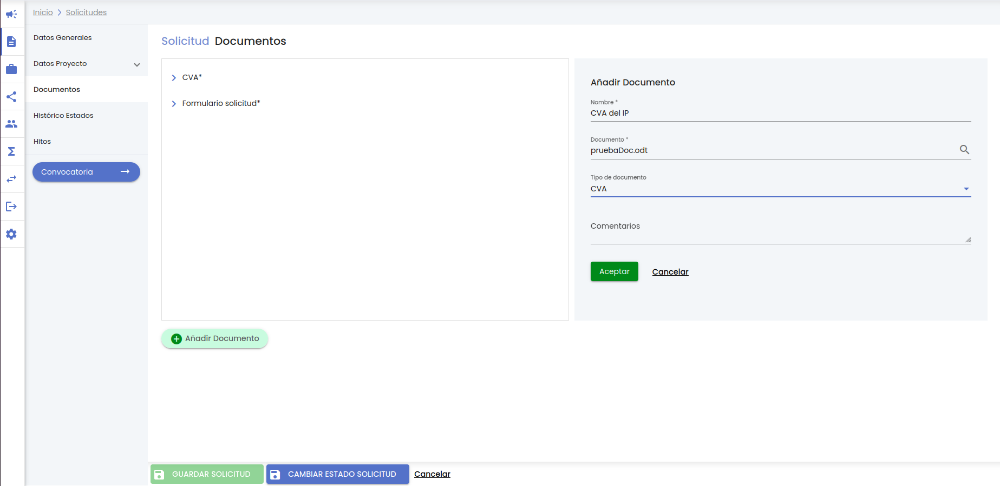
Al pulsar sobre el botón "Aceptar" el documento será añadido al árbol de documentos bajo el "Tipo de documento" informado, en caso de que no se haya seleccionado ningún tipo de documento colgará de la rama genérica "Sin tipo documento". Se mostrará un mensaje informativo como el siguiente:
Aunque el documento se visualice en el árbol de documentos no se guardará en el sistema documental ni será adjuntado a la solicitud hasta que el personal de gestión pulse el botón "Guardar" en la parte inferior de la pantalla en el pie de página para actualizar la solicitud, funcionamiento genérico y universal en todo el SGI, si no se pulsa sobre el botón "Guardar" todos los cambios realizados se perderán.
4.2.2 Modificar documento¶
Para poder acceder a la modificación de los datos de un documento del árbol de documentos de una solicitud, se debe de pulsar sobre el icono de la acción Ver mostrado junto con el nombre de cada uno de los documentos aportados del árbol.
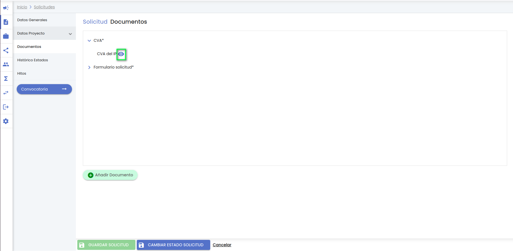
Al pulsar el icono se muestra en la parte derecha del árbol de documentos el detalle del documento mostrando sus datos en modo consulta y los botones de "Descargar fichero", "Editar documento" y "Borrar documento"
Al pulsar el botón de "Editar documento" se habilitarán los campos del formulario para poder introducir los cambios deseados sobre los campos "Nombre", "Documento" y/o "Comentarios". El único dato que no se permite modificar es el campo "Tipo de documento".
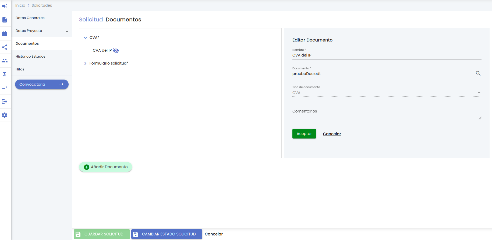
Una vez introducidos los cambios se debe de pulsar el botón "Aceptar" y los cambios se verán reflejados en la propia pantalla de consulta del documento.
Para que se consoliden los datos el personal de gestión deberá pulsar sobre el botón "Guardar" situado en la parte inferior de la pantalla en el pie de página para actualizar la solicitud, si no se pulsa sobre el botón "Guardar" todos los cambios realizados se perderán.
4.2.3 Eliminar documento¶
Para poder eliminar un documento del árbol de documentos de una solicitud, se debe de pulsar sobre el icono de la acción Ver mostrado junto con el nombre de cada uno de los documentos aportados del árbol.
Al pulsar el icono se muestra en la parte derecha del árbol de documentos el detalle del documento mostrando sus datos en modo consulta y los botones de "Descargar fichero", "Editar documento" y "Borrar documento"
Al pulsar el botón de "Borrar documento" se mostrará un mensaje de confirmación.
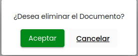
Si se pulsa el botón Cancelar se cerrará la ventana del mensaje de confirmación y el documento no será borrado del árbol de documento de la solicitud.
Si se pulsa el botón Aceptar el documento desaparecerá del árbol de documento de la solicitud pero no se hará efectivo el borrado en la aplicación hasta que el personal de gestión no pulse el botón "Guardar" para que los cambios realizados (en este caso un borrado de un documento) se consoliden.
4.2.4 Descargar fichero¶
Para poder eliminar un documento del árbol de documentos de una solicitud, se debe de pulsar sobre el icono de la acción Ver mostrado junto con el nombre de cada uno de los documentos aportados del árbol.
Al pulsar el icono se muestra en la parte derecha del árbol de documentos el detalle del documento mostrando sus datos en modo consulta y los botones de "Descargar fichero", "Editar documento" y "Borrar documento"
Al pulsar el botón de "Descargar fichero" directamente se descargará el fichero en la unidad de disco local.
4.3 Histórico estados¶
Este apartado se irá completando automáticamente a medida que se van sucediendo los cambios de estado de la solicitud. Cada vez que se modifica el estado de la solicitud se mostrará en la tabla el estado y la fecha del estado que figurasen hasta ese momento en la solicitud. También se llevará al histórico el comentario asociado al estado. De esta forma quedarán historificados todos los estados por los que fue pasando la solicitud, la fecha de los mismos y su comentario.
De forma general, la fecha del estado actual se corresponderá siempre con la fecha en la que se realiza la acción de "Cambiar estado" (apartado Cambiar estado a una solicitud) habiendo realizado un cambio en el valor del estado de la solicitud. Algunos de estos estados conllevarán un comentario que podrá ser agregado por el personal de investigación o el personal de gestión en función del caso. Este comentario también pasará al apartado Histórico de estados.
Puede verse el detalle de estados en el apartado Estados de una solicitud.
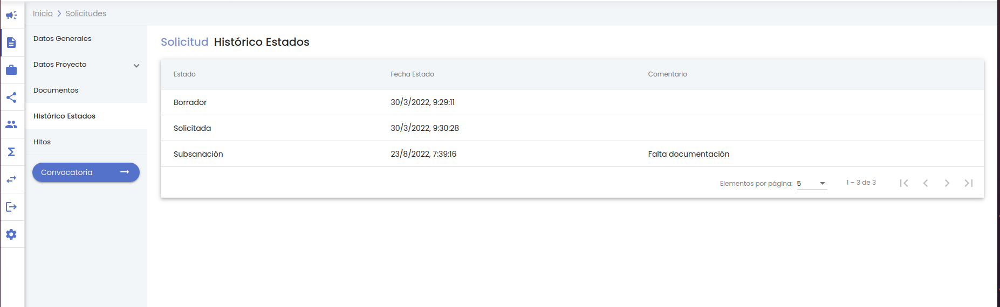
4.4 Hitos¶
Los hitos permiten dejar historificado los acontecimientos que se consideren relevantes. Este apartado solo estará disponible en caso que la solicitud se asocie a una convocatoria del SGI porque para las solicitudes que no se asocien a una convocatoria del SGI no se podrán crear hitos porque no se podrá cumplimentar el campo "Tipo de hito".
Con la configuración de los tipos de hitos de solicitud, vinculados al modelo de ejecución, se dota al SGI de un mecanismo dinámico para el registro de fechas. La configuración de estos tipos de hitos está abierta al personal de Administración de las Unidades de gestión. De esta forma las fechas a registrar en las solicitudes no están limitadas de antemano por el Sistema, dando así libertad en la gestión de solicitudes, a la vez que se mantiene una base común para todas las Unidades de gestión y a todo el SGI (Tipo de hito de solicitud). Esta tipificación común permitirá realizar búsquedas y clasificaciones posteriores en base a criterios homogéneos.
Si por ejemplo resultase de interés recoger la fecha de resolución de convocatoria, o la de publicación en el BOE, se podrán definir ambos, en el apartado de configuraciones del módulo de CSP (CSP-Configuración - 7.2.6 Modelo de ejecución - Tipos de hito), como tipos de hito de solicitud. Posteriormente, en la solicitud, en el apartado Hitos, se añadirán las fechas concretas en las que suceden ambos acontecimientos, seleccionando los tipos de hitos definidos.
Inicialmente el apartado estará vacío, presentando el siguiente aspecto:
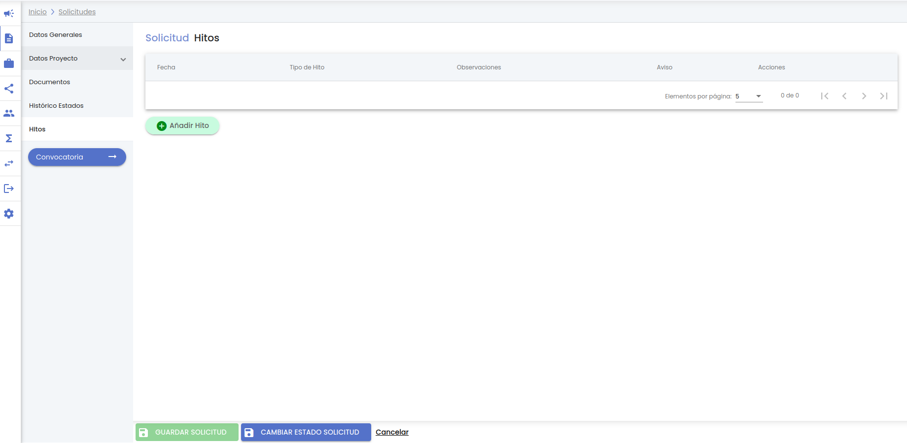
Se pueden añadir, modificar y eliminar hitos independientemente del estado de la solicitud siempre y cuando la solicitud no tenga el proyecto asociado, si ya existe el proyecto generado a partir de la solicitud el personal de gestión no podrá modificar ningún dato de la solicitud.
4.4.1 Añadir un nuevo hito¶
Para añadir un nuevo hito se debe pulsar el botón "añadir hito". Se mostrará la siguiente ventana:
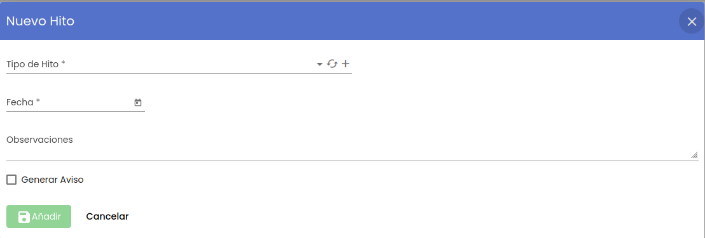
Se dispone de los siguientes campos:
- Tipo de hito: De forma obligatoria se puede indicar la tipología del hito. El tipo de hito debe seleccionarse del listado proporcionado. El listado incluirá los tipos de hito configurados en CSP-Configuración - 7.2.6 Modelo de ejecución - Tipos de hito indicado para la convocatoria en el apartado "Datos generales".
- Fecha: Campo de tipo fecha para introducir la fecha concreta en la que ocurre el hito. Se puede introducir la fecha de forma manual o con la ayuda del calendario. Es un campo obligatorio.
- Observaciones: Campo de texto de libre introducción. Es un campo opcional. En el caso que se marque el check de "Generar aviso" y que este informado este campo, se volcará al final del campo "contenido del email" el siguiente texto "En el hito se han indicado las siguientes observaciones: " seguido del contenido de este campo.
- Generar aviso: Check que definirá si el hito creará un aviso en el módulo de avisos del SGI. Si en el campo "Fecha" se ha indicado una fecha ya pasada, el campo "Generar aviso" tomará el valor false, y no podrá modificarse, esto es, no podrá ni marcarse ni desmarcarse (no editable).Si la fecha del hito es posterior a la actual, el campo será editable, esto es, podrá marcarse o desmarcarse. Al marcar el chek se mostrarán los siguientes campos necesarios para configurar el aviso o comunicado que se quiere enviar cuando se alcance la fecha del hito:
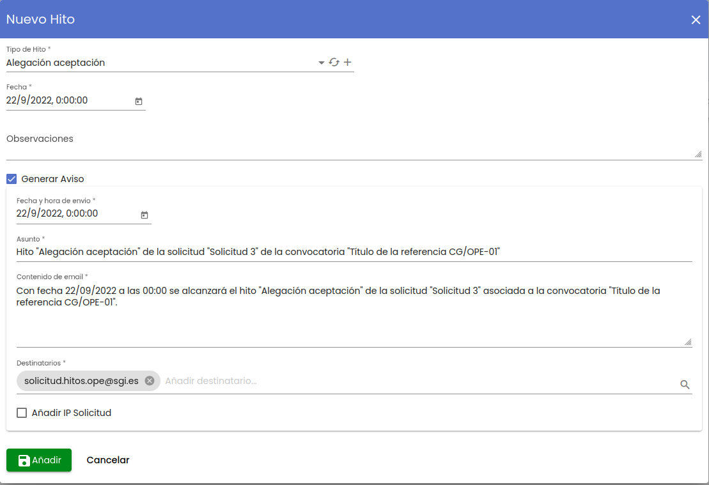
-
- Fecha y hora de envío: Campo de tipo fecha y hora para introducir la fecha y hora concreta en la que se programa el envío del comunicado.Se puede introducir la fecha de forma manual o con la ayuda del calendario. Es un campo obligatorio. En el alta del hito, por defecto, aparecerá la fecha y hora del hito permitiendo su modificación. Esta fecha deberá ser posterior al momento actual + 15 minutos, para permitir que al usuario le pueda dar tiempo a realizar los cambios que precise en el hito, el aviso o en otros apartados de la solicitud, antes de Guardar los cambios en la pantalla de Solicitudes, momento en el que se ya sí se registrará la programación del envío para la fecha y hora indicadas. En caso que no se cumpla este requisito se mostrará el siguiente error de validación:
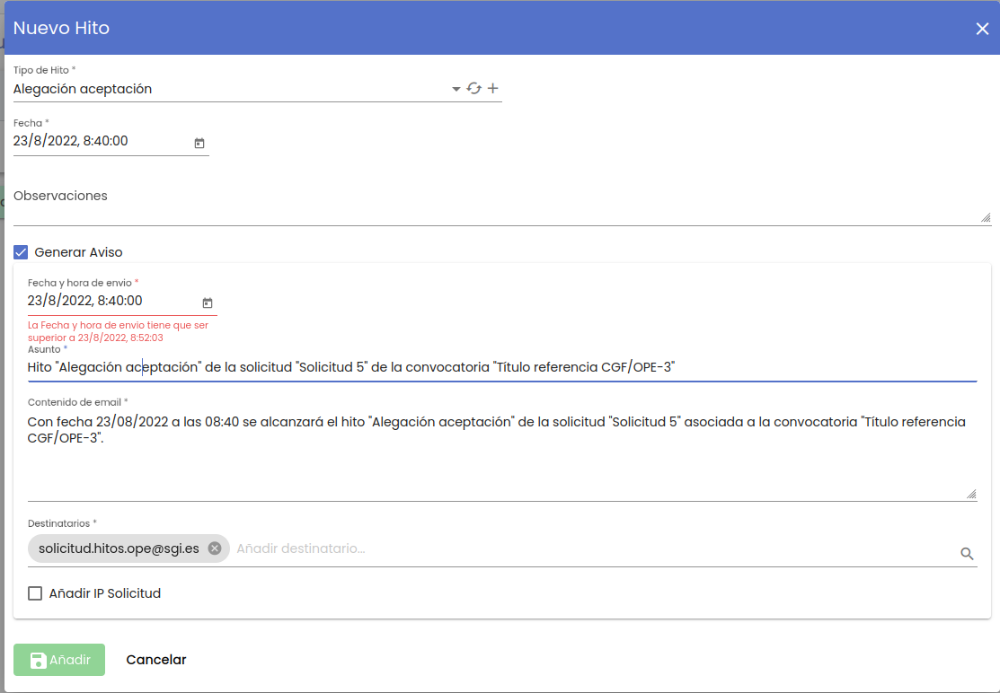
-
- Asunto: Campo de texto libre para indicar el asunto del email. Se mostrará un asunto por defecto que podrá ser modificado posteriormente por el usuario.
- Contenido de email: Campo de texto libre para indicar el contenido o cuerpo del email de aviso. Se mostrará un contenido por defecto que podrá ser modificado posteriormente por el usuario.
- Destinatarios: Lista de destinatarios del email adicionales a los que añadirá el check "Añadir IPs solicitud" si se marca. Se mostrarán unos destinatarios por defecto que podrán ser modificados por el usuario. Si se quiere que el aviso llegue, además de a los destinatarios por defecto, a un nuevo destinatario, se debe añadir este nuevo destinatario al conjunto de destinatarios.
En este caso, se plantean dos opciones:
-
-
- 1) Que el destinatario adicional se encuentre en los sistemas de gestión de RRHH de la Universidad. En este caso, hay 2 formas posibles de añadir destinatarios al comunicado:
-
-
-
-
- Utilizando la función de autocompletar: al comenzar a escribir los 3 primeros caracteres (en el ejemplo "palma") se sugieren personas existentes en la Universidad que contengan esa cadena de texto en su nombre, apellidos o email, para, si se quiere, poder seleccionar una. Si se encuentra la persona entre las sugerencias del autocompletar, para completar la operación de añadir el destinatario, se debe seleccionar una persona (que contenga email) y a continuación pulsar "click" con el ratón o bien pulsar la tecla "enter", con lo que la persona se añadirá a la lista de destinatarios. Si en los 10 primeros resultados propuestos por el autocompletar no aparece la persona buscada, se deberán introducir más caracteres para refinar la búsqueda o bien se podrá pulsar sobre el botón "Buscar", que abrirá el buscador de personas lanzando por defecto la búsqueda con el texto que el usuario haya introducido en el cajetín de "Destinatario".
-
-
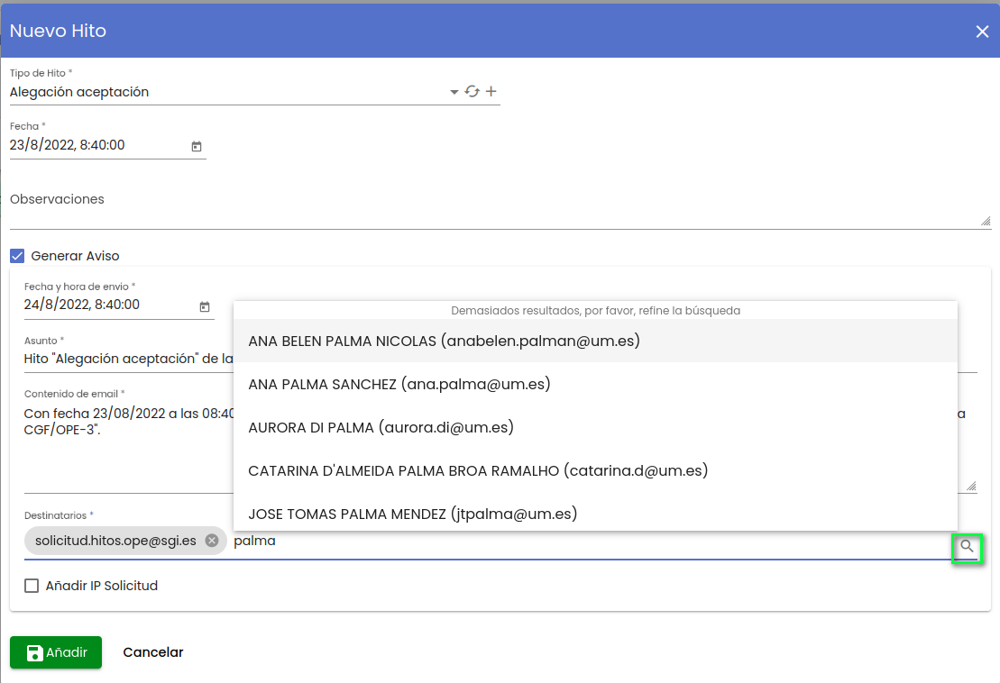
-
-
-
- Utilizando el texto introducido + el botón buscar para abrir el buscador de personas (MDU-Manual de usuario - 8.1.1 Buscar personas) con el resultado de la búsqueda por dicho texto ya cargada
-
-
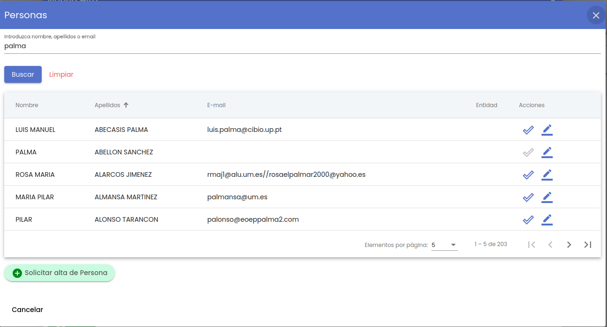
Se deberá pulsar a continuación el botón "Seleccionar" de la fila de la persona una vez la localicemos en el la lista de resultados o bien restringir más la búsqueda introduciendo más caracteres en el filtro hasta que se encuentre. Se debe seleccionar una persona que disponga de un email principal, ya que en otro caso, el comunicado no se podría generar. Una vez seleccionada la persona se añadirá a la lista de destinatarios
-
-
- 2) Que el destinatario adicional NO se encuentre en los sistemas de gestión de RR de la Universidad, bien porque no exista ninguna relación registrada con él en dichos sistemas bien porque el destinatario a añadir sea una lista de distribución o un email genérico y no propio una persona en concreto. En este caso se teclea el email completo en el componente "Destinatarios" en la zona donde aparece el texto "Añadir destinatario ...", por ejemplo, "prueba@correo.es:
- Añadir IP solicitud: Indicador de si se quiere añadir a los IPs de la solicitud como destinatarios del email de aviso. Estos destinatarios no se mostrarán ni se guardarán en el campo "Destinatarios" ya que se resolverán en el día y hora en el que se haya programado el envío del aviso.
-
Cumplimentados los campos obligatorios y deseados se pulsará el botón "Añadir":
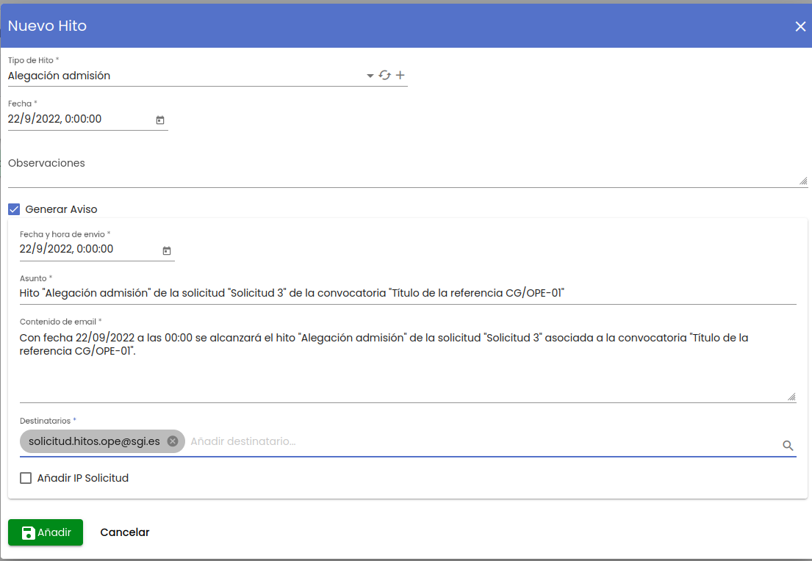
El hito pasará a estar disponible en el listado de hitos de la solicitud, desde donde podrá ser modificado y/o eliminado:
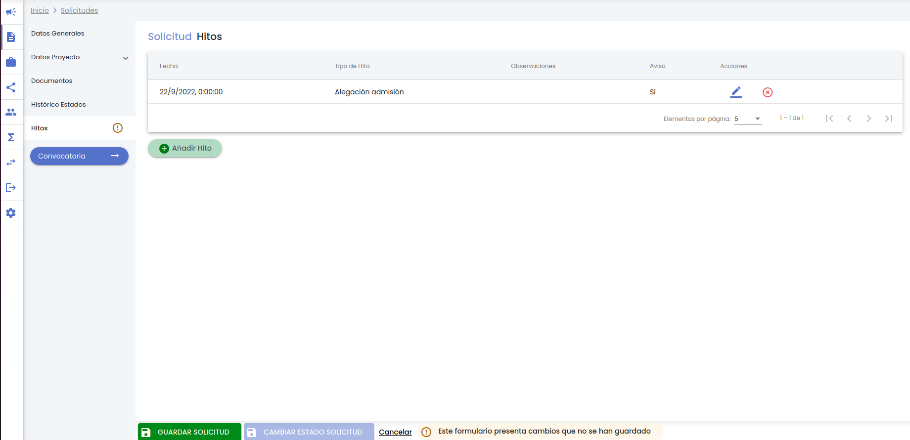
Para que se consoliden los datos el personal de gestión deberá pulsar sobre el botón "Guardar" situado en la parte inferior de la pantalla en el pie de página para actualizar la solicitud, si no se pulsa sobre el botón "Guardar" todos los cambios realizados se perderán.
Se podrán añadir tantos hitos como sea necesario.
4.4.1 Modificar hito¶
El icono "modificar hito" permite modificar los datos de uno de los hitos de la solicitud. Tras pulsar el botón se muestra la ventana para la modificación de datos, la pantalla es idéntica a la utilizada durante el alta:
Se da la posibilidad de modificar cualquiera de los campos del formulario (ver funcionalidad descrita en el apartado Añadir un nuevo hito para mas detalle) con las siguientes excepciones o consideraciones:
- Observaciones: Si se modifica a posterioridad de haber marcado el check de "Generar aviso", no se volcará en el campo "Contenido del email", ya que, en otro caso, se perdería el texto existente previamente.
- Generar aviso: Si la fecha del hito es posterior a la actual y el aviso aún no ha sido enviado, el campo será editable, esto es, podrá marcarse o desmarcarse (según fuera su estado original). En caso contrario no se podrá modificar.
- Fecha y hora de envío: Sólo se podrá modificar si el aviso aún no se ha enviado.
- Asunto: Sólo se podrá modificar si el aviso aún no se ha enviado.
- Contenido del email: Sólo se podrá modificar si el aviso aún no se ha enviado.
- Destinatarios: Sólo se podrá modificar si el aviso aún no se ha enviado.
- Añadir IPs solicitud: Sólo se podrá modificar si el aviso aún no se ha enviado.
El botón "Aceptar" no se habilitará hasta que se introduzca algún cambio en uno de los datos de la pantalla. Se realizarán las misma validaciones que en la creación de un nuevo hito.
Al pulsar sobre el botón "Aceptar" el hito se modificará y los cambios se verán reflejados en la tabla de hitos de la solicitud mostrando el icono de la admiración en el menú de "Hitos" y el mensaje de información en la parte de abajo de la pantalla en el pie de página para recordar al personal de gestión que debe de pulsar el botón "Guardar" para que los cambios realizados (en este caso un cambio de un hito) se consoliden.
4.4.1 Eliminar hito¶
Tras pulsar el icono eliminar se mostrará un mensaje de confirmación.
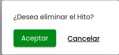
Si se pulsa el botón Cancelar se cerrará la ventana del mensaje de confirmación y el hito no será borrado.
Si se pulsa el botón Aceptar el hito desaparecerá de la tabla de hitos de la solicitud mostrando el icono de la admiración en el menú de "Hitos" y el mensaje de información en la parte de abajo de la pantalla en el pie de página para recordar al personal de gestión que debe de pulsar el botón "Guardar" para que los cambios realizados (en este caso un borrado de un hito) se consoliden.
4.5 Datos Proyecto - Ficha general¶
En este apartado se agrupa la información relativa al proyecto/actividad de investigación propuesto. Este apartado y, en general, todo del bloque "Datos proyectos" solamente ser hará visible cuando el campo "Tipo solicitud SGI" de la solicitud toma valor "Proyecto".
La edición del apartado "Ficha general" de la solicitud al crearse la solicitud se muestra en la siguiente imagen:
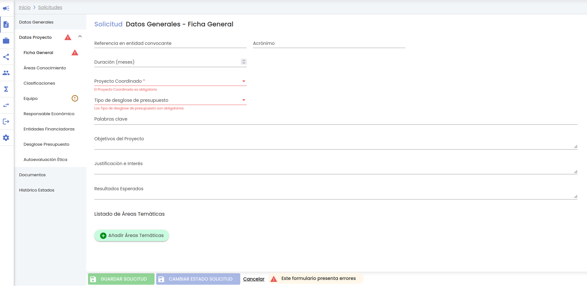
Todos los campos estarán sin informar y se muestra el icono de que existen errores en el formulario de "Ficha general" porque existen dos campos de cumplimentación obligatoria que no se han informado.
A continuación se describe cada uno de los campos solicitados en este formulario o pantalla:
- Referencia en entidad convocante: Campo de texto para introducir el código alfanumérico que la entidad convocante asigna al proyecto solicitado. Es un campo opcional.
- Acrónimo: Campo de texto para introducir el acrónimo del proyecto solicitado. Es un campo opcional.
- Duración (meses): Es un valor numérico que permite indicar la duración en meses que se prevé que tenga el proyecto. Es un campo opcional.
- Proyecto coordinado: A través de este campo, que puede tomar los valores "sí" o "no", se indicará si el proyecto es desarrollado de manera conjunta con otras entidades externas (socios, que a efectos del SGI serán empresas recuperadas a través del servicio de integración). Es un campo obligatorio.
No tomará ningún valor por defecto. En función del valor seleccionado:
-
- Si se indica "Sí", se activará:
-
-
- El campo "Rol participación Universidad" de este mismo formulario. - El campo "Proyecto colaborativo" de este mismo formulario. - El apartado "Socios"
-
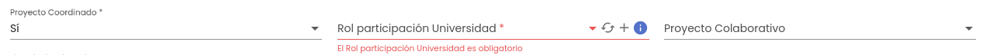
-
- Si se indica "No", no se mostrara:
-
-
- El campo "Rol participación Universidad" de este mismo formulario. - El campo "Proyecto colaborativo" de este mismo formulario. - El apartado "Socios"
-

- Rol participación Universidad: Este campo sólo estará disponible si se ha marcado que el proyecto es coordinado. En caso de que el proyecto sea coordinado, este campo permite indicar el rol con el que participará la Universidad en el proyecto. El rol debe de ser seleccionado del listado disponible. El lisado contendrá los roles configurados en el apartado Configuración - Roles de socio de proyecto del módulo CSP.
Si toma el valor "no", es decir, es la propia universidad quien coordina se dará visibilidad, dentro del apartado "Socios", a los subapartados:
-
- Periodos de pago
- Periodos de justificación
Si se indica que la universidad actuará como coordinadora del proyecto, es decir, se selecciona el rol que haya sido configurado como rol de coordinación (Ver Configuración - Roles de socio de proyecto del módulo CSP), se habilitarán, dentro del apartado "Socios", a los subapartados:
-
- Periodos de pago
- Periodos de justificación
Si se indica que la Universidad no actuará con un rol de coordinación, se mostrará un icono informativo que al pasar por encima el ratón muestra el siguiente mensaje: "No se ha indicado el socio que actuará como coordinador del proyecto. Verifique los datos en el apartado Socios." Es decir, se recuerda que debe de indicarse que socio actuará como coordinador del proyecto. Esta información se aportará en el apartado "Socios".
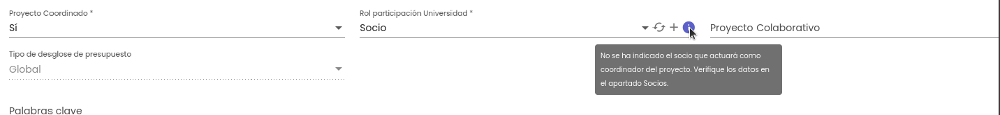
- Proyecto colaborativo: Este campo solo estará disponible si se ha marcado que el proyecto es coordinado. Permitirá indicar si, además de coordinado, el proyecto será colaborativo, es decir, alguno de los socios es una empresa privada. Será un campo opcional y no tomará ningún valor por defecto. Los valores que puede tomar son "Sí" o "No".
-
Tipo de desglose de presupuesto: Campo de tipo desplegable que indica la forma en la que se va a detallar el/los presupuestos de la solicitud. Es un campo obligatorio. Puede tomar los valores:
- Global: Un único presupuesto sin asociar a ninguna entidad
- Por entidad: Un presupuesto asociado a cada entidad financiadora de la convocatoria y a cada una de las ajenas
- Mixto: Un presupuesto único asociado a la entidad gestora de la convocatoria y un presupuesto por cada entidad ajenaDependiendo por lo tanto del valor del combo el apartado de "Desglose presupuesto" tendrá un aspecto u otro.
- Palabras clave: Campo de texto para ir introduciendo el listado de palabras clave. Una palabra clave es una cadena de texto, formada por una una o varias palabras. Una vez introducida una palabra clave se debe pulsar la tecla "enter" del teclado para añadirla a la lista de palabras clave. Se pueden añadir todas las palabras clave deseadas. (Ver funcionalidad de creación de palabras clave en MDU-Manual de usuario - Introducción de palabras clave)
- Objetivos del proyecto: Campo de texto libre para redactar los objetivos marcados con el desarrollo de la actividad de investigación.. Es un campo opcional . El personal de gestión puede modificar el tamaño de la caja de texto de este campo, para ello deberá situar el cursor sobre su esquina inferior izquierda (rayado gris), cuando el cursor cambie de aspecto, deberá pulsar con el botón izquierdo del ratón y arrastrar sin soltar.
- Justificación e interés: Campo de texto libre que permite introducir información referente a la justificación y datos de interés de la actividad de investigación. Es un campo opcional . El personal de gestión puede modificar el tamaño de la caja de texto de este campo, para ello deberá situar el cursor sobre su esquina inferior izquierda (rayado gris), cuando el cursor cambie de aspecto, deberá pulsar con el botón izquierdo del ratón y arrastrar sin soltar.
- Resultados esperados: Campo de texto libre que permite introducir los resultados esperados de la actividad de investigación. Es un campo opcional . El personal de gestión puede modificar el tamaño de la caja de texto de este campo, para ello deberá situar el cursor sobre su esquina inferior izquierda (rayado gris), cuando el cursor cambie de aspecto, deberá pulsar con el botón izquierdo del ratón y arrastrar sin soltar.
- Listado de áreas temáticas: funcionalidad detallada en Listado de Áreas temáticas.
Una vez introducidos todos los campos obligatorios del formulario de "Ficha general" se activa el botón "Guardar" y se muestra el icono del signo de admiración en la "Ficha general" y el mensaje de información en la parte de abajo de la pantalla en el pie de página para recordar al personal de gestión que debe de pulsar el botón "Guardar" para que los cambios realizados se consoliden.
La edición del apartado "Ficha general" de una solicitud que ha sido modificada previamente (ya se han introducido los datos obligatorios del apartado "Ficha general") se muestra en la siguiente imagen:
Los campos son los mismos que cuando se edita la primera vez (una vez creada) pero existen las siguientes restricciones sobre la modificación de algunos de los campos:
- Proyecto coordinado: En caso que ya se hubieran introducido datos asociados a los "Socios", no se podrá modificar el valor de este campo. Es decir, si ya se hubiera establecido el valor "Sí" y se hubieran cumplimentado datos del apartado "Socios" no se podrá modificar el valor de este campo a "No". En este caso el campo se mostrará en formato solo lectura resaltado con un icono de información que al pasar por encima el ratón muestra el siguiente mensaje: "Para poder modificar este valor debe eliminar los datos del apartado socios".
- Rol Universidad: El campo "Rol universidad" no se podrá modificar en el caso de que ya existan registros en los apartados "Periodos de pago" y/o "Periodos de justificación" de alguno se los socios (apartado "Socios"). En este caso el campo se mostrará en formato solo lectura resaltado con un icono de información que al pasar por encima el ratón muestra el siguiente mensaje: "Para poder modificar este valor debe eliminar los apartados Periodos de pago y Periodos de justificación de todos los socios".
- Tipo de desglose de presupuesto: En caso que ya se hubiera recogido el detalle del desglose de presupuesto bajo una de las configuraciones que establece este campo no podrá modificarse esta configuración. Para ello, una vez que se haya detallado un presupuesto, es decir, que exista información en el apartado "Desglose presupuesto", este campo se mostrará en formato solo lectura.
4.5.2 Listado de áreas temáticas¶
El listado de áreas temáticas se puede mostrar de tres formas distintas dependiendo de los datos introducidos:
1) Si la solicitud esta vinculada a una convocatoria del SGI que tiene marcada alguna restricción sobre áreas temáticas (se ha seleccionado alguna área temática en la convocatoria) y en la propia solicitud no se ha seleccionado todavía el área temática se mostrará la tabla de la siguiente forma:
Para asignar una área temática a la solicitud se debe pulsar el botón "Seleccionar área temática". Se mostrará una ventana desde la que se podrá seleccionar la área temática. Se vinculará la solicitud a una de las áreas temáticas asociadas a la convocatoria. La convocatoria estará asociada a un listado de áreas temáticas, y dentro de éste podrá tener limitadas las áreas temáticas, dejando únicamente seleccionar aquellas áreas temáticas que cuelguen de la área temática indicada en la convocatoria o la propia área temática de la convocatoria en el caso de que no tenga subáreas temáticas que cuelguen de ella.
Una vez seleccionada la área temática se pulsará el botón "Añadir". La área seleccionada se mostrará en el listado de áreas de la solicitud:
2) Si la solicitud esta vinculada a una convocatoria del SGI que tiene marcada alguna restricción sobre áreas temáticas (se ha seleccionado alguna área temática en la convocatoria) y en la propia solicitud se ha seleccionado la área temática se mostrará la tabla de la siguiente forma:
Como una solicitud sólo puede estar asignada a una única área temática, si ya tiene una asignada se podrá modificar o bien eliminar la asignación.
Si se elimina la asignación pasaría a ser el caso definido en el punto 1).
Si se quiere modificar la área se pulsa sobre el icono de edición y se mostrará una ventana con la área temática de la solicitud seleccionada.
Se podrá modificar y seleccionar otra área temática de las permitidas, es decir, aquellas subáreas que cuelguen de la área temática definida en la convocatoria o la propia área temática definida en la convocatoria sino tiene subáreas definidas.
Seleccionada la nueva área se pulsará el botón "Aceptar". La área seleccionada se mostrará en el listado de áreas de la solicitud:
3) Si no se da ninguno de los dos casos anteriores la tabla no se mostrará, mostrándose en su lugar el botón "Añadir área temática".
Para añadir un listado de áreas temáticas a la solicitud se debe pulsar el botón "Añadir área temática". Se mostrará una ventana desde la que se podrá indicar el listado de áreas temáticas a utilizar en la solicitud.

El desplegable "Listado áreas temáticas" contendrá los listados activos creados a través de la opción de Configuración CSP-Configuración - 9. Listados de áreas temáticas.

Al seleccionar el nombre de uno de los listados del desplegable, se mostrará el árbol de áreas correspondiente.

Las áreas que lleven a su izquierda el control desplegar, tendrá subáreas dependientes. Haciendo click sobre este control se desplegará el área:
Cada área temática va acompañada a su izquierda con una casilla de selección  . Al hacer click sobre la misma la área temática quedará seleccionada.
. Al hacer click sobre la misma la área temática quedará seleccionada.
Sólo podrá seleccionar una área, pudiendo ocupar ésta cualquier nivel en el árbol de áreas del listado.
Una vez seleccionada una área bastará volver a pulsar sobre la casilla de selección para deseleccionarla.
Seleccionada la área se pulsará el botón "Añadir". La área seleccionada se mostrarán en el listado de áreas de la solicitud:
4.6 Datos Proyecto - Áreas conocimiento¶
En este apartado el proyecto solicitado se podrá clasificar dentro de una o varias áreas de conocimiento. Esto permitirá asociar el proyecto solicitado a una área de manera independiente a la área de conocimiento a la que esté adscrito el responsable principal. Las áreas de conocimiento disponibles se obtendrán del sistema corporativo universitario correspondiente. El SGI permitirá que las áreas sea una estructura jerárquica de forma que el proyecto quede asociado de manera directa a la rama o ramas de conocimiento a la que pertenezca la área/áreas con las que se relaciona.
Este apartado y, en general, todo del bloque "Datos proyectos" solamente ser hará visible cuando el campo "Tipo solicitud SGI" de la solicitud toma valor "Proyecto".
Inicialmente el apartado estará vacío, presentando el siguiente aspecto:
Se pueden asignar y eliminar asignaciones de áreas de conocimiento a la solicitud independientemente del estado de la solicitud siempre y cuando la solicitud no tenga el proyecto asociado, si ya existe el proyecto generado a partir de la solicitud el personal de gestión no podrá modificar ningún dato de la solicitud.
4.6.1 Añadir área conocimiento¶
El botón "añadir área conocimiento" permite clasificar el proyecto solicitado dentro de una área de conocimiento. Tras pulsar el botón se muestra el árbol de áreas de conocimiento.
En un primer momento, cuando no haya ninguna área de conocimiento previamente asociada a la solicitud, se mostrarán únicamente las áreas de conocimiento de primer nivel (ramas de conocimiento).

Según se vaya abriendo el árbol (ver MDU-Manual de usuario - 7.6 Selector de áreas de conocimiento para mas detalle del funcionamiento de esta pantalla), se mostrará el nivel descendiente de la rama desplegada y así sucesivamente.
Si ya existen áreas de conocimiento asociadas a la solicitud, se mostrarán igualmente solo las áreas de conocimiento de primer nivel (ramas de conocimiento) y también según se vaya abriendo el árbol, se mostrará el nivel descendiente de la rama desplegada y así sucesivamente, si bien en este caso en el árbol se mostrarán las áreas de conocimiento previamente asociadas a la solicitud a modo informativo en modo solo lectura. Sobre ese árbol, se podrán seleccionar nuevas áreas, pero no deseleccionar las que se presentan marcadas de antemano. Esta operativa para deshacer la relación entre la solicitud y una área de conocimiento se ha de llevar a cabo con la opción de "eliminar" en el listado de áreas de conocimiento de la solicitud.

Una vez seleccionada la área de conocimiento que se quiere vincular a la solicitud se habilita el botón "Aceptar".

Al pulsar sobre el botón "Aceptar" la área de conocimiento se añadirá como área de conocimiento vinculada a la solicitud mostrando en la tabla de áreas de conocimiento de la solicitud un fila mas que representa a la área de conocimiento que se acaba de añadir.
Para que se consoliden los datos el personal de gestión deberá pulsar sobre el botón "Guardar" situado en la parte inferior de la pantalla en el pie de página para actualizar la solicitud, si no se pulsa sobre el botón "Guardar" todos los cambios realizados se perderán.
4.6.2 Eliminar área conocimiento¶
Tras pulsar el icono eliminar se mostrará un mensaje de confirmación.

Si se pulsa el botón Cancelar se cerrará la ventana del mensaje de confirmación y la área de conocimiento vinculada a la solicitud no será borrada.
Si se pulsa el botón Aceptar la área de conocimiento vinculada a la solicitud desaparecerá de la tabla de áreas de conocimiento de la solicitud mostrando el icono de la admiración en el menú de "Áreas conocimiento" y el mensaje de información en la parte de abajo de la pantalla en el pie de página para recordar al personal de gestión que debe de pulsar el botón "Guardar" para que los cambios realizados (en este caso un borrado de una área de conocimiento) se consoliden.
4.7 Datos Proyecto - Clasificaciones¶
El SGI contará con una estructura dinámica de listados de clasificación. Una solicitud de proyecto podrá clasificarse bajo tantos listados como se desee. Listados de clasificación tipo que podrían ser cubiertas bajo esta estructura abierta son:
- Código UNESCO. No será un campo de obligada cumplimentación. Un proyecto se podrá vincular a un código UNESCO. El listado de códigos UNESCO estará precargado a partir de los listados aportados por la Universidad.
- Código NABS. No será un campo de obligada cumplimentación. Un proyecto se podrá vincular a un código NABS. El listado de códigos NABS estará precargado a partir de los listados aportados por la Universidad.
- Código CNAE. No será un campo de obligada cumplimentación. Un proyecto se podrá vincular a un código NABS. El listado de códigos CNAE se obtiene de los sistemas de la Universidad.
Este apartado y, en general, todo del bloque "Datos proyectos" solamente ser hará visible cuando el campo "Tipo solicitud SGI" de la solicitud toma valor "Proyecto".
Inicialmente el apartado estará vacío, presentando el siguiente aspecto:
Se pueden asignar y eliminar asignaciones de clasificaciones a la solicitud independientemente del estado de la solicitud siempre y cuando la solicitud no tenga el proyecto asociado, si ya existe el proyecto generado a partir de la solicitud el personal de gestión no podrá modificar ningún dato de la solicitud.
4.7.1 Añadir clasificación¶
El botón "añadir clasificación" permite clasificar a un proyecto solicitado dentro de una tipología.
El primer campo a cumplimentar de forma obligatoria será la "clasificación". Una clasificación se entiende como una organización jerárquica conformada por un conjunto de códigos a los que diferentes entidades dentro del SGI se podrán asociar. Inicialmente se identifican en el SGI cuatro clasificaciones distintas: UNESCO, NABS, ANEP y CNAE, si bien la lista de clasificaciones podrá ser extendida por parte de la Universidad con otras adicionales en tiempo de implantación.
Una vez seleccionada la clasificación, se muestra el primer nivel de la jerarquía asociada a la clasificación seleccionada (en este caso UNESCO).
Se pueden ir desplegando categorías por niveles. Ver MDU-Manual de usuario - 7.5 Selector de clasificaciones para mas detalle del funcionamiento de esta pantalla.
Una vez seleccionada el código de clasificación que se quiere vincular a la solicitud se habilita el botón "Aceptar".
Si ya existen clasificaciones asociadas a la solicitud, en el árbol de clasificaciones se mostrarán las clasificaciones previamente asociadas a la solicitud a modo informativo en modo solo lectura. Sobre ese árbol, se podrán seleccionar nuevas clasificaciones, pero no deseleccionar las que se presentan marcadas de antemano. Esta operativa para deshacer la relación entre la solicitud y una clasificación se ha de llevar a cabo con la opción de "eliminar" en el listado de clasificaciones de la solicitud.
Al pulsar sobre el botón "Aceptar" la clasificación se añadirá como clasificación vinculada a la solicitud mostrando en la tabla de clasificaciones de la solicitud un fila mas que representa a la clasificación que se acaba de añadir.
Para que se consoliden los datos el personal de gestión deberá pulsar sobre el botón "Guardar" situado en la parte inferior de la pantalla en el pie de página para actualizar la la solicitud, si no se pulsa sobre el botón "Guardar" todos los cambios realizados se perderán.
4.7.2 Eliminar clasificación¶
Tras pulsar el icono eliminar se mostrará un mensaje de confirmación.
Si se pulsa el botón Cancelar se cerrará la ventana del mensaje de confirmación y la clasificación vinculada a la solicitud no será borrada.
Si se pulsa el botón Aceptar la clasificación vinculada a la solicitud desaparecerá de la tabla de clasificaciones de la solicitud mostrando el icono de la admiración en el menú de "Clasificaciones" y el mensaje de información en la parte de abajo de la pantalla en el pie de página para recordar al personal de gestión que debe de pulsar el botón "Guardar" para que los cambios realizados (en este caso un borrado de una clasificación) se consoliden.
4.8 Datos Proyecto - Equipo¶
En apartado contiene el equipo de proyecto propuesto. El investigador/a solicitante quedará vinculado/a directamente al equipo de proyecto con rol Investigador principal. El equipo de proyecto quedará constituido por una serie de investigadores/as para cada uno de los cuales se indicará el rol con el que participará en el equipo de proyecto y los meses inicial y final previsto de participación.
Este apartado y, en general, todo del bloque "Datos proyectos" solamente ser hará visible cuando el campo "Tipo solicitud SGI" de la solicitud toma valor "Proyecto".
Inicialmente el apartado contendrá el investigador/a principal el cual se informó en el campo "Solicitante/IP" durante la creación de la solicitud, presentando el siguiente aspecto:
En la primera columna del listado en caso de que la solicitud está vinculada a una convocatoria registrada en el SGI podrá mostrar un icono de advertencia en el caso de que la persona no cumpla con los requisitos establecidos en el apartado "Requisito IP" si se trata de una persona con rol configurado con el campo "principal" a "true" o con los requisitos establecidos en el apartado "Requisito equipo" si se trata de una persona con rol configurado con el campo "principal" a "false". Al pasar el ratón por encima del icono muestra un mensaje con el requisito que no se esta cumpliendo.
Se pueden añadir, modificar y eliminar miembros del equipo propuesto siempre y cuando la solicitud no tenga el proyecto asociado, si ya existe el proyecto generado a partir de la solicitud el personal de gestión no podrá modificar ningún dato de la solicitud.
4.8.1 Añadir un nuevo miembro¶
El botón "añadir miembro" permite dar de alta a un nuevo miembro del equipo propuesto en una solicitud de proyecto. Tras pulsar el botón se muestra la ventana para la introducción de datos:
Los campos de un miembro del equipo son:
- Rol de Participación: Campo de tipo desplegable que indica el rol con el que participará el miembro en el equipo de proyecto. Los roles disponibles en el desplegable serán los definidos durante la implantación de la aplicación en la Universidad. Es un campo obligatorio.
- Miembro: Campo para buscar a la persona que se quiere añadir al equipo de proyecto. Para indicar la persona se utiliza el buscador común de personas MDU-Manual de usuario - 8.1 Personas. Es un campo obligatorio.
- Periodo de participación - Mes inicial: Campo de numérico para introducir el mes inicial previsto para la participación del miembro del equipo de proyecto con el rol especificado en el campo "Rol". Es un campo opcional.
- Periodo de participación - Mes final: Campo de numérico para introducir el mes final previsto para la participación del miembro del equipo de proyecto con el rol especificado en el campo "Rol". Es un campo opcional.
Adicionalmente a las validaciones de la obligatoriedad, se realizarán las siguientes comprobaciones de validación de vigencia de la participación de la persona:
- Una misma persona podrá estar asociada más de una vez al equipo si lo hace en periodos diferentes (mes inicial y mes final).
- Si la persona figura en el equipo en dos periodos diferentes podrá hacerlo con el mismo u otro rol.
- Si no se informa el periodo mes inicial y mes final, la persona solo podrá figurar una vez en el equipo.
- Si en un periodo solo se define el mes inicial se considerará que la vigencia, desde ese mes inicial, es permanente. La persona no podrá figurar dos veces en el equipo con un mes inicial determinado salvo que exista otro registro con un mes final inferior a ese mes inicial).
El error de validación se mostrará debajo del campo en color rojo. En la siguiente imagen se muestra alguno de los errores:
Hasta que no se cumplimente todos los datos obligatorios y no existan errores de validación no se activará el botón "Añadir".
Al pulsar sobre el botón "Añadir" la persona se añadirá al equipo mostrando en la tabla de miembros del equipo de proyecto un fila mas que representa a la persona que se acaba de añadir. Se comprobará que la persona añadida cumpla con los "Requesitos IP" o con los "Requisitos Equipo" establecidos por la convocatoria, en caso de que no los cumpla se mostrará en la primera columna el icono de advertencia informando del requisito que no cumple al pasar con el ratón por encima del icono de advertencia:
Para que se consoliden los datos el personal de gestión deberá pulsar sobre el botón "Guardar" situado en la parte inferior de la pantalla en el pie de página para actualizar la solicitud, si no se pulsa sobre el botón "Guardar" todos los cambios realizados se perderán.
4.8.2 Modificar miembro del equipo¶
El icono "modificar miembro" permite modificar los datos de uno de los miembros del equipo investigador del proyecto. Tras pulsar el botón se muestra la ventana para la modificación de datos, la pantalla es idéntica a la utilizada durante el alta, dejando la posibilidad de modificar cualquiera de los campos del formulario (ver funcionalidad descrita en el apartado Añadir un nuevo miembro para mas detalle).
En la siguiente imagen se muestra la pantalla de edición de un miembro del equipo de un proyecto:
El botón "Aceptar" no se habilitará hasta que se introduzca algún cambio en uno de los datos de la pantalla. Se realizarán las misma validaciones que en la creación de un nuevo miembro.
Al pulsar sobre el botón "Aceptar" el miembro del equipo se modificará y los cambios se verán reflejados en la tabla de miembros del equipo de proyecto mostrando el icono de la admiración en el menú de "Equipo" y el mensaje de información en la parte de abajo de la pantalla en el pie de página para recordar al personal de gestión que debe de pulsar el botón "Guardar" para que los cambios realizados (en este caso un cambio de un miembro del equipo) se consoliden.
4.8.3 Eliminar miembro del equipo¶
Tras pulsar el icono eliminar se mostrará un mensaje de confirmación.

Si se pulsa el botón Cancelar se cerrará la ventana del mensaje de confirmación y el miembro del equipo no será borrado.
Si se pulsa el botón Aceptar el miembro del equipo desaparecerá de la tabla de miembros del equipo de proyecto mostrando el icono de la admiración en el menú de "Equipo" y el mensaje de información en la parte de abajo de la pantalla en el pie de página para recordar al personal de gestión que debe de pulsar el botón "Guardar" para que los cambios realizados (en este caso un borrado de un miembro del equipo) se consoliden.
4.9 Datos Proyecto - Responsable económico¶
Este apartado muestra en una tabla al responsable económico actual del proyecto solicitado junto con el listado de responsables económicos que ha tenido el proyecto solicitado (su histórico). Sólo puede existir una persona responsable económica en cada momento.
Este apartado y, en general, todo del bloque "Datos proyectos" solamente ser hará visible cuando el campo "Tipo solicitud SGI" de la solicitud toma valor "Proyecto".
Inicialmente el apartado estará vacío, presentando el siguiente aspecto:
Se pueden añadir, modificar y eliminar responsables económicos independientemente del estado de la solicitud siempre y cuando la solicitud no tenga el proyecto asociado, si ya existe el proyecto generado a partir de la solicitud el personal de gestión no podrá modificar ningún dato de la solicitud.
4.9.1 Añadir un responsable económico¶
El botón "añadir responsable económico" permite dar de alta a un nuevo responsable económico del proyecto solicitado. Tras pulsar el botón se muestra la ventana para la introducción de datos:
Los campos de un responsable económico son:
- Responsable económico: Campo para buscar a la persona que se quiere añadir al grupo como responsable económico. Para indicar la persona se utiliza el buscador común de personas MDU-Manual de usuario - 8.1 Personas. Es un campo obligatorio.
- Mes inicial: Campo de tipo numérico para introducir el mes inicial previsto para la participación del responsable económico de proyecto. Es un campo opcional.
- Mes final: Campo de tipo numérico para introducir el mes final previsto para la participación del responsable económico de proyecto. Es un campo opcional.
Adicionalmente a las validaciones de la obligatoriedad se aplican las siguientes validaciones:
- Únicamente puede existir una persona responsable económica en un momento dado, es decir, si existen dos filas es porque están en periodos distintos. En un mismo periodo sólo puede existir un responsable económico.
- Si no se informa el periodo mes inicial y mes final, únicamente podrá existir una persona.
- Si en un periodo solo se define el mes inicial se considerará que la vigencia, desde ese mes inicial, es permanente.
Hasta que no se cumplimente todos los datos obligatorios y no existan errores de validación no se activará el botón "Añadir".
Al pulsar sobre el botón "Añadir" la persona se añadirá como responsable económico mostrando en la tabla de responsables económicos del proyecto solicitado un fila mas que representa a la persona que se acaba de añadir.
Para que se consoliden los datos el personal de gestión deberá pulsar sobre el botón "Guardar" situado en la parte inferior de la pantalla en el pie de página para actualizar el proyecto solicitado, si no se pulsa sobre el botón "Guardar" todos los cambios realizados se perderán.
4.9.2 Modificar responsable económico¶
El icono "modificar responsable económico" permite modificar los datos de uno de los responsables económicos del proyecto solicitado. Tras pulsar el botón se muestra la ventana para la modificación de datos, la pantalla es idéntica a la utilizada durante el alta, dejando la posibilidad de modificar cualquiera de los campos del formulario (ver funcionalidad descrita en el apartado Añadir un responsable económico para mas detalle).
En la siguiente imagen se muestra la pantalla de edición de un responsable económico de un proyecto solicitado:
El botón "Aceptar" no se habilitará hasta que se introduzca algún cambio en uno de los datos de la pantalla. Se realizarán las misma validaciones que en la creación de un nuevo responsable económico.
Al pulsar sobre el botón "Aceptar" el responsable económico se modificará y los cambios se verán reflejados en la tabla de responsables económicos del proyecto solicitado mostrando el icono de la admiración en el menú de "Responsable económico" y el mensaje de información en la parte de abajo de la pantalla en el pie de página para recordar al personal de gestión que debe de pulsar el botón "Guardar" para que los cambios realizados (en este caso un cambio de un responsable económico) se consoliden.
4.9.3 Eliminar responsable económico¶
Tras pulsar el icono eliminar se mostrará un mensaje de confirmación.

Si se pulsa el botón Cancelar se cerrará la ventana del mensaje de confirmación y el responsable económico no será borrado.
Si se pulsa el botón Aceptar el responsable económico desaparecerá de la tabla de responsables económicos del proyecto solicitado mostrando el icono de la admiración en el menú de "Responsable económico" y el mensaje de información en la parte de abajo de la pantalla en el pie de página para recordar al personal de gestión que debe de pulsar el botón "Guardar" para que los cambios realizados (en este caso el borrado del responsable económico) se consoliden.
4.10 Datos Proyecto - Socios¶
En este apartado se recogerá el listado de socios, entendidos éstos como empresas, que participarán en el proyecto propuesto. Para cada socio se permitirá recoger su equipo de proyecto.
Este apartado y, en general, todo del bloque "Datos proyectos" solamente ser hará visible cuando el campo "Tipo solicitud SGI" de la solicitud toma valor "Proyecto" y si en el campo "Proyecto coordinado" del apartado "Datos proyecto - Ficha general" se indica el valor "Sí".
Inicialmente el apartado estará vacío. Si la Universidad no actúa como coordinadora del proyecto, se mostrará un mensaje recordando que se debe de indicar que socio actuará como coordinador. El rol que desempeña la universidad se recoge en el campo "Rol Universidad" del apartado "Datos proyecto - Ficha general". El rol de coordinación debe de configurarse en el apartado Configuración - Roles de socio de proyecto del módulo CSP).
Se muestra un mensaje con fondo azul indicando que no se ha introducido el socio que actuará como coordinador del proyecto. Es únicamente un mensaje informativo.
Si la Universidad actúa como coordinadora del proyecto, es decir, si en el campo el campo "Rol Universidad" del apartado "Datos proyecto - Ficha general" se indica un rol que se corresponde con el rol configurado como de coordinación (Ver Configuración - Roles de socio de proyecto) no mostrará el aviso:
Se pueden añadir, modificar y eliminar socios independientemente del estado de la solicitud siempre y cuando la solicitud no tenga el proyecto asociado, si ya existe el proyecto generado a partir de la solicitud el personal de gestión no podrá modificar ningún dato de la solicitud.
4.10.1 Añadir socio¶
Para añadir un socio se pulsará el botón "añadir socio". La creación de un socio da lugar a un cambio de contexto, por lo que si hay datos pendientes de guardar de la solicitud, se advertirá de que deben ser guardados.
Al pulsar este botón se mostrará la ventana de introducción de datos de un socio, que presenta el siguiente aspecto:
El detalle de un socio se encuentra distribuido e diferentes apartados, cada uno de ellos accesible desde el menú izquierdo.
- Datos generales: conjunto de datos de información general del socio. Es el único apartado obligatorio para crear un nuevo socio. Ver detalle de los campos en Datos generales.
- Equipo del socio: listado con el equipo de investigación del socio. Ver detalla del apartado en Equipo del socio.
- Periodos de pago: sólo se muestra este apartado cuando la Universidad actúa como coordinadora del proyecto (campo "Rol Universidad" del apartado de "Datos proyecto - Ficha general" toma el valor del rol configurado como coordinador en Configuración - Roles de socio de proyecto). Serán los periodos de pago a los que la Universidad se compromete con el socio. Ver detalla del apartado en Periodos de pago.
- Periodos de justificación: sólo se muestra este apartado cuando la Universidad actúa como coordinadora del proyecto (campo "Rol Universidad" del apartado de "Datos proyecto - Ficha general" toma el valor del rol configurado como coordinador en Configuración - Roles de socio de proyecto). Serán los periodos de justificación que se le deben exigir al socio. Ver detalle del apartado en Periodos de justificación.
Una vez introducidos todos los datos obligatorios del formulario "Datos generales", se activará el botón "Guardar" situado en la parte inferior de la pantalla que permite dar de alta el nuevo socio. Se podrá guardar el nuevo socio únicamente con los datos introducidos en el apartado de "Datos generales" o se puede ir al resto de apartados para informar de dichos datos.
El botón "Guardar" no sólo guarda los datos del formulario que este mostrando en ese momento la pantalla, sino todos los formularios que componen el nuevo socio, es decir, los datos generales, equipo, periodos de pago y periodos de justificación. Al pulsar el botón se muestra un mensaje de que el socio se ha creado correctamente igual que el de la siguiente imagen.

Una vez creado el socio te lleva a la edición del socio.
Para volver al punto de partida, apartado "Socios" de la solicitud, se puede hacer uso de la "miga de pan", de forma que al pinchar sobre el texto "Socios"
se retornará al apartado "Socios" de la solicitud de procedencia:
4.10.1.1 Datos generales¶
Este apartado centraliza los datos principales de un socio. A continuación se describe cada uno de los campos solicitados en este formulario:
- Socio: Campo para buscar a la empresa que participará como socio colaborador en el proyecto propuesto en la solicitud. Para indicar la empresa se utiliza el buscador común de entidades MDU-Manual de usuario - 8.2 Entidades o empresas. Es un campo obligatorio.
- Rol del socio en el proyecto: Campo de tipo desplegable que indica el rol con el que participará el socio colaborador. Los roles disponibles serán los configurados durante la implantación del SGI en la Universidad. Por ejemplo: Coordinar, Socio, Partner organisation, Tercera parte y Otros. Es un campo obligatorio.
- Número de investigadores del equipo del socio: Campo numérico para indicar el número de investigadores que forman parte del equipo del socio. Es un campo opcional.
- Importe solicitado: Campo decimal para indicar el importe presupuestado por el socio para el desarrollo de su parte del proyecto. Es un campo opcional.
- Importe presupuestado: Campo decimal para indicar el importe solicitado por el socio para el desarrollo de su parte del proyecto dentro de los términos de la convocatoria. Es un campo opcional.
- Mes inicial: Campo numérico para indicar el mes de inicio de la colaboración del socio en el proyecto. Es un campo opcional.
- Mes final: Campo numérico para indicar el mes de fin de la colaboración del socio en el proyecto. Es un campo opcional.
Cumplimentados los campos obligatorios se activa el botón "Guardar":
4.10.1.1 Equipo del socio¶
Listado con el equipo de investigación del socio. Inicialmente el apartado estará vacío, presentando el siguiente aspecto:
Para añadir un nuevo miembro al equipo del socio se debe pulsar el botón "añadir miembro". Se mostrará la siguiente ventana:
Los campos de un miembro del equipo son:
- Rol de participación: Campo de tipo desplegable que indica el rol con el que participará el miembro en el equipo del socio. Los roles disponibles en el desplegable serán los definidos durante la implantación de la aplicación en la Universidad. Es un campo obligatorio.
- Miembro: Campo para buscar a la persona que se quiere añadir al equipo del socio. Para indicar la persona se utiliza el buscador común de personas MDU-Manual de usuario - 8.1 Personas. Es un campo obligatorio.
- Periodo de participación previsto - Mes inicial: Campo de numérico para introducir el mes inicial previsto para la participación del miembro del equipo del socio con el rol especificado en el campo "Rol". Es un campo opcional.
- Periodo de participación previsto - Mes final: Campo de numérico para introducir el mes final previsto para la participación del miembro del equipo del socio con el rol especificado en el campo "Rol". Es un campo opcional.
Hasta que no se cumplimente todos los datos obligatorios y no existan errores de validación no se activará el botón "Añadir":
Al pulsar sobre el botón "Añadir" el miembro del equipo pasará a estar disponible en el listado de miembros del equipo del socio, desde donde podrá ser modificado y/o eliminado:
4.10.1.1 Periodos de pago¶
Listado con los periodos de pago a los que la Universidad se compromete con el socio. Este apartado sólo se muestra si la Universidad actúa como coordinadora del proyecto (campo "Rol Universidad" del apartado de "Datos proyecto - Ficha general" toma el valor del rol configurado como coordinador en Configuración - Roles de socio de proyecto)
Inicialmente el apartado estará vacío, presentando el siguiente aspecto:
Para añadir un nuevo periodo de pago del socio se debe pulsar el botón "añadir periodo de pago". Se mostrará la siguiente ventana:
Los campos de un periodo de pago son:
- Número de periodo: Número secuencial dentro de la solicitud que asignará directamente el sistema en función de la ordenación del mes. Es un campo de información para el personal de gestión, es de consulta, no se puede modificar.
- Mes: Campo de tipo numérico para indicar el mes previsto de pago al socio colaborador por parte de la Universidad. Será relativo a la duración de los proyectos que deriven de la solicitud. Es un campo obligatorio. Se comprobará que el mes no sea superior a la duración del proyecto indicada en el campo "Duración" en la pestaña de "Datos proyecto - Ficha general" (en caso de estar informado)
- Importe: Campo de tipo decimal para indicar el importe previsto de pago al socio colaborador por parte de la Universidad. Es un campo opcional.
Hasta que no se cumplimente todos los datos obligatorios y no existan errores de validación no se activará el botón "Añadir":
Al pulsar sobre el botón "Añadir" el periodo de pago pasará a estar disponible en el listado de periodos de pago del socio, desde donde podrá ser modificado y/o eliminado:
4.10.1.1 Periodos de justificación¶
Listado con los periodos de justificación que se le deben exigir al socio. Este apartado sólo se muestra si la Universidad desempeña el rol de coordinadora del proyecto (campo "Rol Universidad" del apartado de "Datos proyecto - Ficha general" toma el valor del rol configurado como coordinador en Configuración - Roles de socio de proyecto).
Inicialmente el apartado estará vacío, presentando el siguiente aspecto:
Para añadir un nuevo periodo de justificación del socio se debe pulsar el botón "añadir periodo de justificación". Se mostrará la siguiente ventana:

Los campos de un periodo de justificación son:
- Nombre: Nombre del socio. Es un campo de consulta, no se puede modificar.
- Número de periodo: Número secuencial dentro de la solicitud que asignará directamente el sistema en función de la ordenación del mes de inicio. Es un campo de información para el personal de gestión, es de consulta, no se puede modificar.
- Periodo a justificar - Desde el mes: Campo de tipo numérico para indicar el mes inicial del periodo a justificar. Será relativo a la duración del proyecto que derive de la solicitud. Es un campo obligatorio.
- Periodo a justificar - Hasta el mes: Campo de tipo numérico para indicar el mes final del periodo a justificar. Será relativo a la duración del proyecto que derive de la solicitud. Es un campo obligatorio.
- Periodo de presentación - Fecha inicio presentación: Campo de tipo fecha para introducir la fecha de inicio del plazo de presentación de la justificación a la Universidad por parte del socio colaborador. Se puede introducir la fecha de forma manual o con la ayuda del calendario. Es un campo opcional.
- Periodo de presentación - Fecha fin presentación: Campo de tipo fecha para introducir la fecha de fin del plazo de presentación de la justificación a la Universidad por parte del socio colaborador. Se puede introducir la fecha de forma manual o con la ayuda del calendario. Es un campo opcional.
- Observaciones: Campo de texto libre que permite introducir cualquier observación sobre el periodo de justificación. El personal de gestión puede modificar el tamaño de la caja de texto de este campo, para ello deberá situar el cursor sobre su esquina inferior izquierda (rayado gris), cuando el cursor cambie de aspecto, deberá pulsar con el botón izquierdo del ratón y arrastrar sin soltar. Es un campo opcional.
Se comprobará que no se solapen rangos de mes inicial - mes final. Para ello:
- El número de mes (inicial o final) de cualquier periodo será único.
- Para cualquier periodo mes final ha de ser mayor o igual que mes inicial.
- No pueden existir solapamientos de meses, si existe un periodo del mes 5 al 10, se puede crear otro periodo del mes 1 al 4. Habrá que reordenar los distintos periodos cada vez que se añade un nuevo periodo o se modifica uno.
- El mes inicial o final de cualquier periodo no podrán superar nunca la duración en meses indicada en "Datos generales" de la solicitud, siempre que este campo estuviese informado. En caso de no estar informado no se aplicaría esta comprobación.
- El primer periodo siempre comenzará en el mes 1
- No pueden existir salto de meses entre periodos, ya que no se puede dar la situación de que queden días fuera desde el día de inicio del primer periodo hasta el día fin del último periodo.
Sobre las fechas de inicio y fin del periodo de solicitud de la justificación:
- Fecha de fin de un nuevo periodo ha de ser mayor que fecha de inicio de su mismo periodo.
- No se limitará que las fechas de inicio y fin de diferentes periodos se solapen o coincidan.
El error de validación se mostrará debajo del campo en color rojo. En la siguiente imagen se muestra alguno de los errores:
Hasta que no se cumplimente todos los datos obligatorios y no existan errores de validación no se activará el botón "Añadir":
Al pulsar sobre el botón "Añadir" el periodo de justificación pasará a estar disponible en el listado de periodos de justificación del socio, desde donde podrá ser modificado y/o eliminado:
4.10.2 Modificar socio¶
El icono "modificar socio" permite modificar los datos de uno de los socios de la solicitud. La modificación de un socio da lugar a un cambio de contexto, por lo que si hay datos pendientes de guardar de la solicitud, se advertirá de que deben ser guardados.
Tras pulsar el botón se muestra la ventana para la modificación de datos, en su apartado inicial "Datos generales".
Se podrán introducir cambios sobre los campos del apartado "Datos generales". Del mismo modo, accediendo a través del menú lateral izquierdo, se podrán realizar modificaciones sobre los campos del resto de apartados. Las pantallas de cada uno de los apartados no varían con respecto a las indicadas en el apartado Añadir socio.
4.10.3 Eliminar socio¶
Tras pulsar el icono eliminar se mostrará un mensaje de confirmación.
Si se pulsa el botón Cancelar se cerrará la ventana del mensaje de confirmación y el miembro del equipo del socio no será borrado.
Si se pulsa el botón Aceptar el miembro del equipo del socio desaparecerá de la tabla de miembros del equipo del socio mostrando el icono de la admiración en el menú de "Equipo del Socio" y el mensaje de información en la parte de abajo de la pantalla en el pie de página para recordar al personal de gestión que debe de pulsar el botón "Guardar" para que los cambios realizados (en este caso un borrado de un miembro del equipo) se consoliden.
4.11 Datos Proyecto - Entidades financiadoras¶
En este apartado se visualizarán las entidades financiadoras de la convocatoria si la solicitud esta vinculada a una convocatoria del SGI. De forma adicional, se podrán añadir otras entidades financiadoras ajenas a la convocatoria.
Este apartado y, en general, todo del bloque "Datos proyectos" solamente ser hará visible cuando el campo "Tipo solicitud SGI" de la solicitud toma valor "Proyecto".
Inicialmente el apartado contendrá el listado de entidades financiadoras de la convocatoria si la solicitud esta vinculada a una convocatoria registrada en el SGI, presentando el siguiente aspecto:
Sobre las entidades financiadoras de la convocatoria no se podrá realizar ninguna acción, únicamente se muestran como información de consulta.
Se pueden añadir, modificar y eliminar entidades financiadoras ajenas a la convocatoria independientemente del estado de la solicitud siempre y cuando la solicitud no tenga el proyecto asociado, si ya existe el proyecto generado a partir de la solicitud el personal de gestión no podrá modificar ningún dato de la solicitud.
4.11.1 Añadir entidad financiadora ajena a la convocatoria¶
Para añadir una entidad financiadora se pulsará el botón "Añadir entidad financiadora". Se mostrará una ventana con el siguiente aspecto:
Los campos de una entidad financiadora son:
- Entidad financiadora: Campo para buscar a la entidad financiadora. Para indicar la entidad se utiliza el buscador común de empresas MDU-Manual de Usuario - 8.2 Entidades o empresas. Es un campo obligatorio.
- Fuente de financiación. Indicará la fuente de financiación a través de la que la entidad participa en el proyecto solicitado. Se debe seleccionar un valor del desplegable. El listado de valores disponible será el introducido a través de la opción CSP-Configuración - 10 Fuentes de financiación. El desplegable "fuente de financiación" incorpora los controles "refrescar"
 y "crear"
y "crear"  siguiendo el comportamiento descrito en MDU-Manual de usuario - 3.17 Controles sobre campos desplegables o selectores
siguiendo el comportamiento descrito en MDU-Manual de usuario - 3.17 Controles sobre campos desplegables o selectores
- Tipo de financiación: Indicará el tipo o mecanismo financiero a través del que la entidad aporta la financiación a la convocatoria. Se debe seleccionar un valor del desplegable. El listado de valores disponible será el introducido a través de la opción CSP-Configuración - 11 Tipo de financiación. El desplegable "fuente de financiación" incorpora los controles "refrescar" y "crear" siguiendo el comportamiento descrito en MDU-Manual de usuario - 3.17 Controles sobre campos desplegables o selectores.
- Porcentaje de financiación. Se permite indicar un valor numérico entero comprendido entre 0 y 100. Si se intenta introducir un valor superior a 100 se mostrará un mensaje de error sobre el campo:
- Importe de financiación. Se permite indicar un valor numérico decimal. Será el importe aportado por la entidad al proyecto solicitado. Se permite su introducción independientemente de que hubiera sido indicado o no el valor "porcentaje de financiación".

Introducidos los campos deseados se deberá pulsar el botón "Añadir". La entidad financiadora pasará a mostrarse en el listado del apartado "Entidades financiadoras ajenas a la convocatoria"
El campo "ámbito" mostrado en la tabla del listado de entidades financiadoras se corresponde con el ámbito geográfico de la fuente de financiación (Ver el apartado CSP-Configuración - 10 Fuentes de financiación para más detalle).
4.11.2 Modificar entidad financiadora ajena a la convocatoria¶
El icono "modificar entidad financiadora" permite modificar los datos de las entidades financiadoras ajenas a la convocatia. Tras pulsar el botón se muestra la ventana para la modificación de datos, la pantalla es idéntica a la utilizada durante el alta, dejando la posibilidad de modificar cualquiera de los campos del formulario excepto a la propia entidad financiadora (ver funcionalidad descrita en el apartado Añadir entidad financiadora ajena a la convocatoria para mas detalle).
En la siguiente imagen se muestra la pantalla de edición de una entidad financiadora del proyecto solicitado:
El botón "Aceptar" no se habilitará hasta que se introduzca algún cambio en uno de los datos de la pantalla. Se realizarán las misma validaciones que en la creación de una nueva entidad financiadora.
Al pulsar sobre el botón "Aceptar" los datos de la entidad financiadora se modificarán y los cambios se verán reflejados en la tabla de entidades financiadoras ajenas a la convocatoria mostrando el icono de la admiración en el menú de "Entidades financiadoras" y el mensaje de información en la parte de abajo de la pantalla en el pie de página para recordar al personal de gestión que debe de pulsar el botón "Guardar" para que los cambios realizados (en este caso un cambio de una entidad financiadora ajena) se consoliden.
4.11.3 Eliminar entidad financiadora ajena a la convocatoria¶
Únicamente se puede eliminar una entidad financiadora ajena a la convocatoria si no tiene desglose de presupuesto vinculado. En este caso en vez de mostrar la acción de eliminar en la columna de "Acciones" se mostrará el icono de información tal y como muestra la siguiente imagen:
Al pasar con el ratón por encima del icono de información se muestra el mensaje: "No se puede elimnar la entidad porque tiene desglose de presupuesto".
Tras pulsar el icono eliminar se mostrará un mensaje de confirmación.
Si se pulsa el botón Cancelar se cerrará la ventana del mensaje de confirmación y la entidad financiadora no será borrada.
Si se pulsa el botón Aceptar la entidad financiadora desaparecerá de la tabla de entidades financiadoras ajenas a la convocartoria mostrando el icono de la admiración en el menú de "Entidades financiadoras" y el mensaje de información en la parte de abajo de la pantalla en el pie de página para recordar al personal de gestión que debe de pulsar el botón "Guardar" para que los cambios realizados (en este caso un borrado de una entidad financiadora) se consoliden.
4.12 Datos Proyecto - Desglose presupuesto¶
En este apartado se recogerá el desglose presupuestario del proyecto en solicitud. Para este desglose se partirá de las restricciones de elegibilidad añadidas en la convocatoria. El presupuesto se deberá desglosar en base a los conceptos de gasto configurados a nivel global en el SGI (CSP-Configuración - 12 Conceptos de gasto).
Como la convocatoria puede admitir varias entidades financiadoras o incluso el proyecto (solicitud en este momento) podría tener otras fuentes de financiación adicionales a las que promueven la convocatoria, el desglose del presupuesto se podrá recoger especificado por entidad financiadora. Dependiendo del valor del campo "Desglose del presupuesto por entidades financiadoras" de "Datos proyecto" se dejará introducir un único presupuesto global, un presupuesto individual por cada entidada financiadora y un presupuesto conjunto para todas las entidades de la convocatoria e individual para cada una de las entidades ajenas a la convocatoria (mixto).
Este apartado y, en general, todo del bloque "Datos proyectos" solamente ser hará visible cuando el campo "Tipo solicitud SGI" de la solicitud toma valor "Proyecto".
Dependiendo del campo "Desglose del presupuesto por entidades financiadoras" de "Datos proyecto" la forma de introducir los conceptos de gasto será de una forma u otra, pero en todas ellas se podrá recoger un desglose de presupuesto, a partir de un concepto de gasto y para cada concepto de gasto se tendrá que indicar:
- El importe presupuestado (campo obligatorio)
- El importe solicitado (campo obligatorio)
- Anualidad (no obligatorio)
- Observaciones (no obligatorio)
Con el desglose del presupuesto y con los datos de los importes solicitado y presupuestado incluidos en el detalle de los socios, se obtendrán los siguientes campos calculados:
- Importe presupuestado por Universidad: Suma de los importes presupuestados de todos los conceptos de gasto que no representen costes indirectos recogidos en los desgloses presupuestarios asociados a las entidades financiadoras (de la convocatoria o ajenas) o bien la suma de los importes presupuestados de todos los conceptos de gasto que no representen costes indirectos recogidos en el desglose presupuestario global.
- Importe presupuestado por Universidad Costes indirectos: Suma de los importes presupuestados de todos los conceptos de gasto que representen costes indirectos recogidos en los desgloses presupuestarios asociados a las entidades financiadoras (de la convocatoria o ajenas) o bien la suma de los importes presupuestados de todos los conceptos de gasto que representen costes indirectos recogidos en el desglose presupuestario global.
- Total importe presupuesto por Universidad: Suma de los importes presupuestados de todos los conceptos de gasto recogidos en los desgloses presupuestarios asociados a las entidades financiadoras (de la convocatoria o ajenas) o bien la suma de los importes presupuestados de todos los conceptos de gasto recogidos en el desglose presupuestario global.
- Importe solicitado por Universidad: Suma de los importes solicitados de todos los conceptos de gasto que no representen costes indirectos recogidos en los desgloses presupuestarios asociados a las entidades financiadoras (de la convocatoria o ajenas) o bien la suma de los importes solicitados de todos los conceptos de gasto que no representen costes indirectos recogidos en el desglose presupuestario global.
- Importe solicitado por Universidad Costes indirectos: Suma de los importes solicitados de todos los conceptos de gasto que representen costes indirectos recogidos en los desgloses presupuestarios asociados a las entidades financiadoras (de la convocatoria o ajenas) o bien la suma de los importes solicitados de todos los conceptos de gasto que representen costes indirectos recogidos en el desglose presupuestario global.
- Total importe solicitado por Universidad: Suma de los importes solicitados de todos los conceptos de gasto recogidos en los desgloses presupuestarios asociados a las entidades financiadoras (de la convocatoria o ajenas) o bien la suma de los importes solicitados de todos los conceptos de gasto recogidos en el desglose presupuestario global.
- Total importe presupuestado socios: Suma del importe presupuestado de todos los socios que participan en el proyecto (exceptuando la Universidad).
- Total importe solicitado socios: Suma del importe solicitado de todos los socios que participan en el proyecto (exceptuando la Universidad).
- Total importe presupuestado: Suma total del importe presupuestado de la solicitud (Universidad y socios).
- Total importe solicitado: Suma total del importe solicitado de la solicitud (Universidad y socios).
En el caso de que no se quiera llegar a detallar la información a nivel de presupuesto ni de socios se pueden introducir estos campos de forma manual:
- Importe presupuestado por Universidad: Este campo permite introducir libremente el importe presupuestado correspondiente al proyecto a desarrollar por la Universidad, que no se corresponda con costes indirectos. En caso que haya sido posible obtener el valor calculado sobre el campo anterior "Importe presupuestado por universidad (valor calculado)" se mostrará un aviso cuando el valor calculado y el valor introducido manualmente no coincidan. El aviso se mostrará como icono de advertencia a la derecha del valor manual. Al pasar por encima con el ratón se mostrará el mensaje: "El valor introducido manualmente no coincide con el valor calculado a partir de los datos de detalle de la solicitud. Si quiere que prevalezca el valor calculado debe eliminar el valor introducido manualmente, vaciando el contenido de este campo."
- Importe presupuestado por Universidad Costes indirectos: Este campo permite introducir libremente el importe presupuestado que se corresponda con costes indirectos, correspondiente al presupuesto del proyecto a desarrollar por la Universidad. En caso que haya sido posible obtener el valor calculado sobre el campo anterior "Importe presupuestado por universidad costes indirectos (valor calculado)" se mostrará un aviso cuando el valor calculado y el valor introducido manualmente no coincidan. El aviso se mostrará como icono de advertencia a la derecha del valor manual. Al pasar por encima con el ratón se mostrará el mensaje: "El valor introducido manualmente no coincide con el valor calculado a partir de los datos de detalle de la solicitud. Si quiere que prevalezca el valor calculado debe eliminar el valor introducido manualmente, vaciando el contenido de este campo."

- Total importe presupuesto por Universidad: Se corresponde con la suma de los campos "Importe presupuestado por Universidad (valor manual)" e "Importe presupuestado por Universidad Costes Indirectos (valor manual)". Se muestra en modo solo lectura. En caso que haya sido posible obtener el valor calculado sobre el campo anterior "Total importe presupuestado por universidad (valor calculado)" se mostrará un aviso cuando este valor y la suma de los valores "importe presupuestado por Universidad (valor manual)" e "importe presupuestado por Universidad Costes Indirectos (valor manual)" introducidos manualmente no coincidan. El aviso se mostrará como icono de advertencia a la derecha del valor manual. Al pasar por encima con el ratón se mostrará el mensaje "El valor introducido manualmente no coincide con el valor calculado a partir de los datos de detalle de la solicitud. Si quiere que prevalezca el valor calculado debe eliminar el valor introducido manualmente, vaciando el contenido de este campo."
- Importe solicitado por Universidad: Este campo permite introducir libremente el importe solicitado que no se corresponda con costes indirectos correspondiente al presupuesto del proyecto a desarrollar por la Universidad. En caso que haya sido posible obtener el valor calculado sobre el campo anterior "Importe solicitado por universidad (valor calculado)" se mostrará un aviso cuando el valor calculado y el valor introducido manualmente no coincidan. El aviso se mostrará como icono de advertencia a la derecha del valor manual. Al pasar por encima con el ratón se mostrará el mensaje: "El valor introducido manualmente no coincide con el valor calculado a partir de los datos de detalle de la solicitud. Si quiere que prevalezca el valor calculado debe eliminar el valor introducido manualmente, vaciando el contenido de este campo."
- Importe solicitado por Universidad Costes indirectos: Este campo permite introducir libremente el importe solicitado que se corresponde con costes indirectos correspondiente al presupuesto del proyecto a desarrollar por la Universidad. En caso que haya sido posible obtener el valor calculado sobre el campo anterior "Importe solicitado por universidad costes indirectos (valor calculado)" se mostrará un aviso cuando el valor calculado y el valor introducido manualmente no coincidan. El aviso se mostrará como icono de advertencia a la derecha del valor manual. Al pasar por encima con el ratón se mostrará el mensaje: "El valor introducido manualmente no coincide con el valor calculado a partir de los datos de detalle de la solicitud. Si quiere que prevalezca el valor calculado debe eliminar el valor introducido manualmente, vaciando el contenido de este campo."
- Total importe solicitado por Universidad: Se corresponde con la suma de los campos "Importe solicitado por Universidad (valor manual)" e "Importe solicitado por Universidad Costes Indirectos (valor manual)". En caso que haya sido posible obtener el valor calculado sobre el campo anterior "Total importe solicitado por universidad (valor calculado)" se mostrará un aviso cuando el valor calculado y la suma de los valores "importe solicitado por Universidad (valor manual)" e "importe solicitado por Universidad Costes indirectos (valor manual)" introducidos manualmente no coincidan. El aviso se mostrará como icono de advertencia a la derecha del valor manual. Al pasar por encima con el ratón se mostrará el mensaje: "El valor introducido manualmente no coincide con el valor calculado a partir de los datos de detalle de la solicitud. Si quiere que prevalezca el valor calculado debe eliminar el valor introducido manualmente, vaciando el contenido de este campo."
- Total importe presupuestado socios: Este campo permite introducir libremente el importe total presupuestado por todos los socios (adicionales a la Universidad) que participan en el proyecto. En caso que haya sido posible obtener el valor calculado sobre el campo anterior "Importe presupuestado por socios (valor calculado)" se mostrará un aviso cuando el valor calculado y el valor introducido manualmente no coincidan. El aviso se mostrará como icono de advertencia a la derecha del valor manual. Al pasar por encima con el ratón se mostrará el mensaje: "El valor introducido manualmente no coincide con el valor calculado a partir de los datos de detalle de la solicitud. Si quiere que prevalezca el valor calculado debe eliminar el valor introducido manualmente, vaciando el contenido de este campo."
- Total importe solicitado socios: Este campo permite introducir libremente el importe total solicitado por todos los socios (adicionales a la Universidad) que participan en el proyecto. En caso que haya sido posible obtener el valor calculado sobre el campo anterior "Importe solicitado por socios (valor calculado)" se mostrará un aviso cuando el valor calculado y el valor introducido manualmente no coincidan. El aviso se mostrará como icono de advertencia a la derecha del valor manual. Al pasar por encima con el ratón se mostrará el mensaje: "El valor introducido manualmente no coincide con el valor calculado a partir de los datos de detalle de la solicitud. Si quiere que prevalezca el valor calculado debe eliminar el valor introducido manualmente, vaciando el contenido de este campo."
- Total importe presupuestado: Este campo permite introducir libremente el importe total presupuestado de la solicitud (Universidad y socios). En caso que haya sido posible obtener el valor calculado sobre el campo anterior "Total importe presupuestado (valor calculado)" se mostrará un aviso cuando el valor calculado y el valor introducido manualmente no coincidan. El aviso se mostrará como icono de advertencia a la derecha del valor manual. Al pasar por encima con el ratón se mostrará el mensaje: "El valor introducido manualmente no coincide con el valor calculado a partir de los datos de detalle de la solicitud. Si quiere que prevalezca el valor calculado debe eliminar el valor introducido manualmente, vaciando el contenido de este campo."
- Total importe solicitado: Este campo permite introducir libremente el importe total solicitado (Universidad y socios). En caso que haya sido posible obtener el valor calculado sobre el campo anterior "Total importe solicitado (valor calculado)" se mostrará un aviso cuando el valor calculado y el valor introducido manualmente no coincidan. El aviso se mostrará como icono de advertencia a la derecha del valor manual. Al pasar por encima con el ratón se mostrará el mensaje: "El valor introducido manualmente no coincide con el valor calculado a partir de los datos de detalle de la solicitud. Si quiere que prevalezca el valor calculado debe eliminar el valor introducido manualmente, vaciando el contenido de este campo."
4.12.1 Datos Proyecto - Desglose presupuesto global¶
Si el valor del campo "Desglose del presupuesto por entidades financiadoras" de "Datos proyecto" tiene el valor "Global " el apartado presentará el siguiente aspecto inicialmente, cuando no se ha dado de alta ningún concepto de gasto del presupuesto:

Para dar de alta una partida de gasto o un concepto de gasto del presupuesto global se tendrá que pulsar sobre el botón "Añadir partida de gasto" que abrirá una ventana como la siguiente:
Los campos de una partida de gasto del presupuesto son:
- Concepto de gasto: En este campo se indicará el nombre del concepto de gasto. El valor deberá ser seleccionado del listado ofrecido en el desplegable, que se corresponderá con los conceptos de gasto activos definidos a nivel global en el SGI. Puede consultarse CSP-Configuración - 12 Conceptos de gasto para ampliar más información sobre el origen de este campo. Es un campo obligatorio.
Si la solicitud esta vinculada a una convocatoria registrada en el SGI y en dicha convocatoria se ha informado de los gastos permitidos y no permitidos en el apartado "Elegibilidad" (ver CSP-Convocatorias - 3.12 Elegibilidad para mas detalle), al seleccionar un concepto de gasto se buscará si esta dado de alta en el apartado "Elegibilidad" de la convocatoria y se mostrará la información introducida sobre el concepto de gasto (nombre, importe máximo, permitido desde mes y permitido hasta mes) junto con sus código económicos, tal y como muestra la siguiente imagen:
En caso contrario, es decir, la solicitud no esta vinculada a una convocatoria registrada en el SGI o estando vinculada no se han informado de los gastos permitido y no permidos de la convocatoria dicha información no se mostrará en la pantalla:
- Anualidad: Campo umérico sin decimales para indicar la anualidad a la que pertenece el concepto de gasto. Es un campo opcional. No se podrá repetir el mismo concepto de gasto para la misma anualidad. En el caso de que no se informe la anualidad, no se podrá repetir el mismo concepto de gasto.
- Importe presupuestado: Campo decimal para indicar el importe presupuestado para el concepto de gasto. Es un campo obligatorio.
- Importe solicitado: Campo decimal para indicar el importe solicitado para el concepto de gasto. Es un campo obligatorio.
- Observaciones: Campo de texto libre que permite introducir cualquier observación consideración del concepto de gasto en el presupuesto asociada a la solicitud.
Cumplimentados los campos obligatorios y deseados se pulsará el botón "Añadir":
El concepto de gasto pasará a estar disponible en el listado de partidas de gasto del presupuesto de la solicitud, desde donde podrá ser modificado y/o eliminado:

Para que se consoliden los datos el personal de gestión deberá pulsar sobre el botón "Guardar" situado en la parte inferior de la pantalla en el pie de página para actualizar la solicitud, si no se pulsa sobre el botón "Guardar" todos los cambios realizados en el presupuesto se perderán.
Se podrán podrán ir añadiendo todas las partidas de gasto al prespuesto como sea necesario. Según se vayan dando de alta nuevas partidas de gasto los datos calculados sober los importes presupuestados y solicitados de la Universidad de irán actualizando.
El botón "Presupuesto completo" abre una pantalla con el presupuesto completo de la solicitud mostrando el desglose de presupuesto agrupado por anualidad:
Se muestra por cada anualidad el la suma del importe presupuestado y solicitado de todos los conceptos de gastos definidos en el desglose del presupuesto para la anualidad a la que pertenecen en caso de haber indicado la anualidad, sino estarán bajo la anualidad con nombre "Sin anualidad".
Haciendo click sobre el control de desplegarla anualidad, se mostrará el detalle de cada uno de los conceptos de gastos de esa anualidad:
La información mostrada en la tabla de resumen podrá ser exportada a Excel a través del botón "Exportar". Al pulsar sobre el botón "Exportar" se mostrarán las opciones de exportación:
Se debe seleccionar el formato de exportación. Los disponibles son:
- RTF
- XLSX
- CSV
El campo "Título" se muestra cumplimentado por defecto al valor "Listado de presupuestos", pero podría ser modificado. Este campo solo es de utilidad en el caso de la exportación a los formatos PDF y RTF, incluyéndose como Título en la primera página del informe generado.
Una vez introducidos todos los criterios de la exportación se deberá pulsar el botón "Exportar", se generará el documento asociado que podrá ser nombrado y descargado a la unidad de disco deseada.
4.12.2 Datos Proyecto - Desglose presupuesto por entidades¶
Si el valor del campo "Desglose del presupuesto por entidades financiadoras" de "Datos proyecto" tiene el valor "Por entidad" el apartado presentará el siguiente aspecto:
En el listado de Entidades financiadores se mostrarán todas las entidades financiadoras de la convocatoria y las entidades financiadoras ajenas a la convocatoria que se hubieran añadido en el apartado DatosProyecto - Entidades financiadoras.
Por cada entidad financiadora se muestra el nombre de la entidad, la fuente de financiación, el CIF y se indica si la entidad financiadora es de la convocatoria o es ajena a la convocatoria. Para añadir el desglose presupuestario de cada una de las entidades financiadoras (independientemente que sea o no de la convocatoria) se debe de pulsar el icono de acción ver .
Al pulsar este icono se realiza un cambio de contexto, por lo que si hay datos pendientes de guardar de la solicitud, se advertirá de que deben ser guardados. Se carga en pantalla el formulario de "Datos generales" de una entidad financiadora en modo consulta. Dicha información no podrá ser modificada desde la solicitud. Si se quiere añadir o modificar el desglose de presupueto de una entidad financiadora de la convocatoria o ajena a ella se muestra la siguiente pantalla:
Se tendrá que ir al apartado "Partidas gasto" para ir introduciendo el desglose de conceptos de gastos de la entidad financiadora que se esta consultando.
Inicialmente este apartado estará vacío, mostrando el siguiente aspecto:

Para dar de alta una partida de gasto o un concepto de gasto de la entidad financiadora se tendrá que pulsar sobre el botón "Añadir partida de gasto" que abrirá una ventana como la siguiente:
Los campos de una partida de gasto del presupuesto son:
- Concepto de gasto: En este campo se indicará el nombre del concepto de gasto. El valor deberá ser seleccionado del listado ofrecido en el desplegable, que se corresponderá con los conceptos de gasto activos definidos a nivel global en el SGI. Puede consultarse CSP-Configuración - 12 Conceptos de gasto para ampliar más información sobre el origen de este campo. Es un campo obligatorio.
Si la entidad financiadora viene de la convocatoria y en dicha convocatoria se ha informado de los gastos permitidos y no permitidos en el apartado "Elegibilidad" (ver CSP-Convocatorias - 3.12 Elegibilidad para mas detalle), al seleccionar un concepto de gasto se buscará si esta dado de alta en el apartado "Elegibilidad" de la convocatoria y se mostrará la información introducida sobre el concepto de gasto (nombre, importe máximo, permitido desde mes y permitido hasta mes) junto con sus código económicos, tal y como muestra la siguiente imangen:
En caso contrario, es decir, si la entidad financiadora es ajena a la convocatoria dicha información no se mostrará en la pantalla:
- Anualidad: Campo numérico sin decimales para indicar la anualidad a la que pertenece el concepto de gasto. Es un campo opcional. No se podrá repetir el mismo concepto de gasto para la misma anualidad. En el caso de que no se informe la anualidad, no se podrá repetir el mismo concepto de gasto.
- Importe presupuestado: Campo decimal para indicar el importe presupuestado para el concepto de gasto. Es un campo obligatorio.
- Importe solicitado: Campo decimal para indicar el importe solicitado para el concepto de gasto. Es un campo obligatorio.
- Observaciones: Campo de texto libre que permite introducir cualquier observación consideración del concepto de gasto en el presupuesto asociada a la solicitud.
Cumplimentados los campos obligatorios y deseados se pulsará el botón "Añadir":
El concepto de gasto pasará a estar disponible en el listado de partidas de gasto de la entidad financiadora, desde donde podrá ser modificado y/o eliminado:
Para que se consoliden los datos el personal de gestión deberá pulsar sobre el botón "Guardar" situado en la parte inferior de la pantalla en el pie de página para actualizar el desglose de presupuesto de la entidad financiadora que se esta consultado, si no se pulsa sobre el botón "Guardar" todos los cambios realizados en el presupuesto de la entidad financiadora se perderán.
Se muestra un mensaje de que el presupuesto de la entidad financiadora de la convocatoria o ajena a la convocatoria se ha creado correctamente igual que el de la siguiente imagen.
Se podrán podrán ir añadiendo todas las partidas de gasto al prespuesto de la entidad financiadora como sea necesario.
Para volver al punto de partida, apartado "Desglose presupuesto" de la solicitud, se puede hacer uso de la "miga de pan", de forma que al pinchar sobre el texto "Desglose presupuesto":
se retornará al apartado "Desglose Presupuesto" de la solicitud de procedencia:
Según se vayan dando de alta nuevas partidas de gasto en las entidades financiadoras los datos calculados sobre los importes presupuestados y solicitados de la Universidad de la panatalla "Desglose presupuesto" de irán actualizando.
4.12.3 Datos Proyecto - Desglose presupuesto mixto¶
Si el valor del campo "Desglose del presupuesto por entidades financiadoras" de "Datos proyecto" tiene el valor "Mixto" el apartado presentará el siguiente aspecto:
En el listado de Entidades financiadores se mostrará la entidad indicada como "gestora" de la convocatoria (en representación de todas las entidades financiadoras de la convocatoria, es el caso de que no se quiere especificar una desglose de presupuesto por cada entidad financiadora de la convoctoria sino que se desea únicamente especificar uno) y las entidades financiadoras ajenas a la convocatoria que se hubieran añadido en el apartado Datos Proyecto Entidades financiadoras.
Por cada entidad financiadora ajena a la convocatoria se muestra el nombre de la entidad, la fuente de financiación y el CIF, pero para la entidad gestora de la convocatoria únicamente se muestra el nombre y el CIF (porque el resto de campos no son recogidos en la convocatoria). Para añadir el desglose presupuestario de cada una de las entidades financiadoras (independientemente que sea o no de la convocatoria) se debe de pulsar el icono de acción ver y seguir los pasos indicados en el apartado Datos Proyecto - Desglose presupuesto por entidades
4.13 Datos Proyecto - Autoevaluación de ética¶
Cuestionario básico (con preguntas sí/no) que permitirá conocer si el proyecto solicitado debe someterse a evaluación por parte del Comité de ética. Si el resultado de este cuestionario confirma la necesidad de evaluación, se creará automáticamente una nueva petición de evaluación de ética en MDU - Perfil personal investigador - ETI - Editar solicitud de evaluación. La creación de esta petición automática tendrá lugar cuando se realice el cambio de estado desde estado "Borrador" a cualquier otro estado diferente a "Desistida" y "Renunciada".
Este apartado y, en general, todo del bloque "Datos proyectos" solamente ser hará visible cuando el campo "Tipo solicitud SGI" de la solicitud toma valor "Proyecto".
El aspecto del cuestionario es el siguiente:
Una vez contestadas a todas las preguntas se activa el botón "Guardar" y se muestra el icono del signo de admiración en el apartado "Autoevaluación ética" y el mensaje de información en la parte de abajo de la pantalla en el pie de página para recordar al personal de gestión que debe de pulsar el botón "Guardar" para que los cambios realizados se consoliden.
4.14 Datos solicitud RRHH - Solicitante¶
En este apartado se recogerá la información relativa al solicitante. Este apartado y, en general, todo del bloque "Datos solicitud RRHH" solamente ser hará visible cuando el campo "Tipo solicitud SGI" de la solicitud toma valor "RRHH".
La edición del apartado "Solicitante" de la solicitud nada mas crearse la solicitud (si la ha creado el personal de gestión) se muestra en la siguiente imagen:
Todos los campos estarán sin informar y se muestra el icono de que existen errores en el formulario de "Solicitante" porque existen campos de cumplimentación obligatoria que no se han informado.
A continuación se describe cada uno de los campos solicitados en este formulario o pantalla:
- Solicitante: Campo para buscar a la persona que es el solicitante de la beca predoctoral o postdoctoral de RRHH. Para indicar la persona se utiliza el buscador común de personas MDU - Manual de usuario - 8.1 Personas. Una vez seleccionada la persona se mostrará en este campo el nombre, apellidos y email de la persona seleccionada. Si se selecciona a una persona, los campos de datos personales (nombre, apellidos, tipo de documento, número documento, sexo, teléfonos y emais) y de contacto (dirección, país, comunidad autónoma, provincia, localidad y código postal) de la persona estarán deshabilitados, únicamente se podrá informar de la "Universidad de origen" y del "Área ANEP". Se informará de este campo cuando la persona solicitante este dada de alta en la Universidad, en caso contrario (no se encuentra en el buscador de personas de RRHH de la Universidad) se tendrán que cumplimentar de forma manual los campos personales y de contacto de la persona.
- Nombre: Dependiente de si el campo previo "Solicitante" este informado o no el funcionamiento de este campo variará:
- Si campo "Solicitante" esta informado: se recuperará el nombre de la persona "Solicitante" de los datos almacenados en la Universidad. Es un campo de consulta.
-
- Si el campo "Solicitante" no esta informado: será un campo de texto libre para introducir el nombre de la persona solicitante. Es un campo obligatorio.
-
Apellidos: Dependiente de si el campo previo "Solicitante" este informado o no el funcionamiento de este campo variará:
- Si campo "Solicitante" esta informado: se recuperarán los apellidos de la persona "Solicitante" de los datos almacenados en la Universidad. Es un campo de consulta.
- Si el campo "Solicitante" no esta informado: será un campo de texto libre para introducir los apellidos de la persona solicitante. Es un campo obligatorio.
-
Tipo documento: Dependiente de si el campo previo "Solicitante" este informado o no el funcionamiento de este campo variará:
-
Si campo "Solicitante" esta informado: se recuperará el tipo de documento de la persona "Solicitante" de los datos almacenados en la Universidad. Es un campo de consulta.
-
- Si el campo "Solicitante" no esta informado: será un campo de tipo desplegable para seleccionar el tipo de documento de la persona solicitante. El listado mostrado son los valores proporcionados por la propia Universdiad. Es un campo obligatorio.
-
Número documento: Dependiente de si el campo previo "Solicitante" este informado o no el funcionamiento de este campo variará:
- Si campo "Solicitante" esta informado: se recuperará el número de documento de la persona "Solicitante" de los datos almacenados en la Universidad. Es un campo de consulta.
- Si el campo "Solicitante" no esta informado: será un campo de texto libre para introducir el número de documento de la persona solicitante. Es un campo obligatorio.
-
Sexo: Dependiente de si el campo previo "Solicitante" este informado o no el funcionamiento de este campo variará:
-
Si campo "Solicitante" esta informado: se recuperará el sexo de la persona "Solicitante" de los datos almacenados en la Universidad. Es un campo de consulta.
-
- Si el campo "Solicitante" no esta informado: será un campo de tipo desplegable para seleccionar el sexo de la persona solicitante. El listado mostrado son los valores proporcionados por la propia Universdiad. Es un campo obligatorio.
-
Fecha nacimiento: Dependiente de si el campo previo "Solicitante" este informado o no el funcionamiento de este campo variará:
- Si campo "Solicitante" esta informado: se recuperará la fecha de nacimiento de la persona "Solicitante" de los datos almacenados en la Universidad. Es un campo de consulta.
- Si el campo "Solicitante" no esta informado: será un campo de tipo fecha para introducir la fecha de nacimiento de la persona solicitante. Es un campo obligatorio.
-
País de nacimiento: Dependiente de si el campo previo "Solicitante" este informado o no el funcionamiento de este campo variará:
-
Si campo "Solicitante" esta informado: se recuperará el país de nacimiento de la persona "Solicitante" de los datos almacenados en la Universidad. Es un campo de consulta.
-
- Si el campo "Solicitante" no esta informado: será un campo de tipo desplegable para seleccionar el país de nacimiento de la persona solicitante. El listado mostrado son los valores proporcionados por la propia Universdiad. Es un campo obligatorio.
-
Teléfono: Dependiente de si el campo previo "Solicitante" este informado o no el funcionamiento de este campo variará:
- Si campo "Solicitante" esta informado: se recuperarán los teléfonos del "Solicitante" de los datos almacenados en la Universidad y se mostrarán en formato de lista. Es un campo de consulta.
- Si el campo "Solicitante" no esta informado: será un campo de texto libre para introducir el teléfono de contacto de la persona solicitante. Únicamente se puede introducir uno. Es un campo obligatorio.
-
Email: Dependiente de si el campo previo "Solicitante" este informado o no el funcionamiento de este campo variará:
-
Si campo "Solicitante" esta informado: se recuperarán los emails del "Solicitante" de los datos almacenados en la Universidad y se mostrarán en formato de lista. Es un campo de consulta.
- Si el campo "Solicitante" no esta informado: será un campo de texto libre para introducir el email de contacto de la persona solicitante. Únicamente se puede introducir uno. Es un campo obligatorio. Será el correo donde reciba las notificaciones de la solicitud.
-
Dirección (de contacto): Dependiente de si el campo previo "Solicitante" este informado o no el funcionamiento de este campo variará:
-
Si campo "Solicitante" esta informado: se recuperará la dirección de contacto del "Solicitante" de los datos almacenados en la Universidad. Es un campo de consulta.
- Si el campo "Solicitante" no esta informado: será un campo de texto libre para introducir la dirección contacto de la persona solicitante. Es un campo opcional.
-
País (de la dirección de contacto): Dependiente de si el campo previo "Solicitante" este informado o no el funcionamiento de este campo variará:
-
Si campo "Solicitante" esta informado: se recuperará el país de la dirección de contacto de la persona "Solicitante" de los datos almacenados en la Universidad. Es un campo de consulta.
- Si el campo "Solicitante" no esta informado: será un campo de tipo desplegable para seleccionar el país de la dirección de contacto de la persona solicitante. El listado mostrado son los valores proporcionados por la propia Universdiad. Es un campo opcional.
-
Comunidad autonóma (de la dirección de contacto): Dependiente de si el campo previo "Solicitante" este informado o no el funcionamiento de este campo variará:
-
Si campo "Solicitante" esta informado: se recuperará la comunidad autonóma de la dirección de contacto de la persona "Solicitante" de los datos almacenados en la Universidad. Es un campo de consulta.
- Si el campo "Solicitante" no esta informado: será un campo de tipo desplegable para seleccionar la comunidad autonóma de la dirección de contacto de la persona solicitante. El listado mostrado son los valores proporcionados por la propia Universdiad. Es un campo opcional.
-
Provincia (de la dirección de contacto): Dependiente de si el campo previo "Solicitante" este informado o no el funcionamiento de este campo variará:
-
Si campo "Solicitante" esta informado: se recuperará la provincia de la dirección de contacto de la persona "Solicitante" de los datos almacenados en la Universidad. Es un campo de consulta.
- Si el campo "Solicitante" no esta informado: será un campo de tipo desplegable para seleccionar la provincia de la dirección de contacto de la persona solicitante. El listado mostrado son los valores proporcionados por la propia Universdiad. Es un campo opcional.
-
Localidad (de la dirección de contacto): Dependiente de si el campo previo "Solicitante" este informado o no el funcionamiento de este campo variará:
-
Si campo "Solicitante" esta informado: se recuperará la localidad de la dirección de contacto de la persona "Solicitante" de los datos almacenados en la Universidad. Es un campo de consulta.
- Si el campo "Solicitante" no esta informado: será un campo de texto libre para introducir la localidad de la dirección de contacto de la persona solicitante. Es un campo opcional.
-
Código postal (de la dirección de contacto): Dependiente de si el campo previo "Solicitante" este informado o no el funcionamiento de este campo variará:
-
Si campo "Solicitante" esta informado: se recuperará el código postal de la dirección de contacto de la persona "Solicitante" de los datos almacenados en la Universidad. Es un campo de consulta.
- Si el campo "Solicitante" no esta informado: será un campo de texto libre para introducir el código postal de la dirección de contacto de la persona solicitante. Es un campo opcional.
- Universidad de origen: Campo para buscar a la universdiad de origen. Para indicar la entidad se utiliza el buscador común de empresas y entidades MDU-Manual de usuario - 8.2 Entidades o empresas Es un campo opcional.
- Datos universidad de origen: Campo para que el investigador/a pueda introducir el nombre de la Universidad de origen del trabajo. Este campo se muestra siempre en modo consulta para el personal de gestión. El dato que tiene que cumplimentar el personal de gestión es "Univeridad de origen".
- Área ANEP: Campo para indicar la área ANEP sobre la qe va a trabajar el solicitante. Es un campo opcional. Al crear la solicitud este campo estará vacío y se mostrará el botón de "Añadir Área ANEP"
Al pulsar sobre el botón "Añadir Área ANEP" se muestra en una ventana emergente la pantalla de selector de clasificaciones (MDU-Manual de usuario - 7.5 Selector de clasificaciones) pero con la clasificación "ANEP" seleccionada (sin posibilidad de cambiarla) y el árbol de las áreas ANEP mostrando las áreas del primer nivel:

Las áreas que lleven a su izquierda el control desplegar, tendrá subáreas dependientes. Haciendo click sobre este control se desplegará el área:
Cada área ANEP va acompañada a su izquierda con una casilla de selección . Al hacer click sobre la misma el área ANEP quedará seleccionada. Únicamente se permite seleccionar una área ANEP. Seleccionada la área ANEP se pulsará el botón "Aceptar".
La área seleccionada se mostrará en la tabla de Área ANEP desde donde se podrá modificar la área o bien eliminarla
Una vez introducidos todos los campos obligatorios del formulario de "Solicitante" se muestra el icono del signo de admiración en "Solicitante" informando de que hay cambios sin guardar, no se activará el botón "Guardar" porque faltan campos obligatorios en los apartados "Tutor/a" y "Memoria".
La edición del apartado "Solicitante" de una solicitud que ha sido modificada previamente (ya se han introducido los datos obligatorios de los apartados "Solicitante", "Tutor/a" y "Memoria"") se muestra en la siguiente imagen:
Los campos son los mismos que cuando se edita la primera vez (una vez creada) vistos previamente al inicio de este apartado. Aplican las mismas restricciones.
4.15 Datos solicitud RRHH - Tutor/a¶
En este apartado se recogerá la persona que el solicitante propone como tutor/a del trabajo de RRHH. Este apartado y, en general, todo del bloque "Datos solicitud RRHH" solamente ser hará visible cuando el campo "Tipo solicitud SGI" de la solicitud toma valor "RRHH".
La edición del apartado "Tutor/a" de la solicitud nada mas crearse la solicitud (si la ha creado el personal de gestión) se muestra en la siguiente imagen:
Todos los campos estarán sin informar y se muestra el icono de que existen errores en el formulario de "Tutor/a" porque existen campos de cumplimentación obligatoria que no se han informado.
A continuación se describe cada uno de los campos solicitados en este formulario o pantalla:
- Selecciona tutor/a del trabajo: Campo para buscar a la persona que el solicitante propone como tutor/a del trabajo de RRHH. Para indicar la persona se utiliza el buscador común de personas MDU-Manual de usuario - 8.1 Personas. Una vez seleccionada la persona se mostrará en este campo el nombre, apellidos y email de la persona seleccionada. Si se selecciona a una persona, el resto de campos se informarán de forma automática con los datos que dispone la Universidad de la persona seleccionada:
- Nombre: nombre del tutor/a seleccionado en el campo "Tutor/a". Es un dato de consulta, no se tiene que introducir por el usuario, se recupera de los datos de la Universidad.
- Apellidos: apellidos del tutor/a seleccionado en el campo "Tutor/a". Es un dato de consulta, no se tiene que introducir por el usuario, se recupera de los datos de la Universidad.
- Categoría: categoría profesional del tutor/a seleccionado en el campo "Tutor/a". Es un dato de consulta, no se tiene que introducir por el usuario, se recupera de los datos de la Universidad.
- Departamento: departamento al que esta adscrito el tutor/a seleccionado en el campo "Tutor/a". Es un dato de consulta, no se tiene que introducir por el usuario, se recupera de los datos de la Universidad.
- Centro: centro al que esta adscrito el tutor/a seleccionado en el campo "Tutor/a". Es un dato de consulta, no se tiene que introducir por el usuario, se recupera de los datos de la Universidad.
- Teléfonos: teléfonos del tutor/a seleccionado en el campo "Tutor/a". Es un dato de consulta, no se tiene que introducir por el usuario, se recupera de los datos de la Universidad.
- Emails: emails del tutor/a seleccionado en el campo "Tutor/a". Es un dato de consulta, no se tiene que introducir por el usuario, se recupera de los datos de la Universidad.
Una vez introducidos todos los campos obligatorios del formulario de "Tutor/a" se muestra el icono del signo de admiración en "Tutor/a" informando de que hay cambios sin guardar, no se activará el botón "Guardar" porque faltan campos obligatorios en el apartado "Memoria".
La edición del apartado "Tutor/a" de una solicitud que ha sido modificada previamente (ya se han introducido los datos obligatorios de los apartados "Solicitante", "Tutor/a" y "Memoria" ) se muestra en la siguiente imagen:

Los campos son los mismos que cuando se edita la primera vez (una vez creada) vistos previamente al inicio de este apartado. Aplican las mismas restricciones.
4.16 Datos solicitud RRHH - Requisitos convocatoria¶
En este apartado se muestran los requisitos especificados en el apartado "Requisitos IP" de la convocatoria relativas al nivel académico y categorías exigidas, con sus correspondientes fechas de anterioridad o posterioridad. Si bien para el personal perteneciente a la propia Universidad el cumplimento de este tipo de requisitos puede ser recuperado a partir de la información recuperada del sistema de gestión de RRHH, se dará la posibilidad al personal de investigación de adjuntar el documento acreditativo correspondiente (de forma opcional).
También se muestran los requisitos especificados en el apartado "Requisitos Equipo" de la convocatoria relativas al nivel académico y categorías exigidas, con sus correspondientes fechas de anterioridad o posterioridad. El cumplimiento de este tipo de requisitos se recuperará a partir de la información del sistema de gestión de RRHH para el tutor/a.
Este apartado y, en general, todo del bloque "Datos solicitud RRHH" solamente ser hará visible cuando el campo "Tipo solicitud SGI" de la solicitud toma valor "RRHH".
En el momento inicial de creación de una solicitud este apartado puede mostrar el siguiente aspecto, si en el apartado "Requisito IP" (CSP-Convocatorias - 3.10 Requisitos IP) y/o "Requisito Equipo" (CSP-Convocatorias - 3.11 Requisitos equipo) de la convocatoria se han especificado alguna requisito relativo al nivel acadeḿico o la categoría profesional:
En la primera tabla "Solicitante - Niveles académicos exigidos" se muestran los requisitos especificados en el apartado "Requisitos IP" de la convocatoria relativos al nivel académico con sus correspondientes fechas de anterioridad o posterioridad.
Para el caso del personal propio se realiza la comprobación automáticamente a partir de la información recuperada del sistema de gestión de RRHH mostrándose el aviso correspondiente, se dibujará el icono de advertencia cuando de acuerdo a los datos recuperados del solicitante en el sistema de RRHH no se cumple con el requisito de la convocatoria. Para el caso de usuarios externos no se podrá realizar dicha comprobación al no tener datos de los mismos.
El personal de gestión podrá adjuntar un único documento acreditativo sobre cada requisito através de la acción de editar  (no se limita el número de niveles académicos que pudieran haberse especificado en la convocatoria). Si surgiese la necesidad de tener que acreditar el requisito con más de un documento, podrán ser introducidos en el apartado "Documentos".
(no se limita el número de niveles académicos que pudieran haberse especificado en la convocatoria). Si surgiese la necesidad de tener que acreditar el requisito con más de un documento, podrán ser introducidos en el apartado "Documentos".
Al editar el requisito se abrirá una ventana emergente para introducir el documento acreditativo:
Se muestran como información el nivel académico requerido y las fechas de anterioridad o posterioridad en caso de que se informarán en el apartado "Requisitos IP" de la convocatoria.
El único dato que se debe de introducir es el documento acreditativo, a través de la lupa se abrirá una pantalla de examinador de archivos que permite seleccionar un fichero desde la unidad de disco local. Una vez seleccionado un fichero se mostrará el nombre y extensión del mismo sobre el campo "Adjunte el documento acreditativo" del formulario. Una vez introducido el documento se activa el botón "Aceptar".
Al pulsar el botón "Aceptar" el documento será añadido a la tabla de "Solicitante - Niveles académicos exigidos" mostrando ahora en lugar del icono de "editar" el icono de "eliminar" por si se quiere eliminar el documento acreditativo del requisito. También se muestra un nueva columna para poder descargarse el documento adjuntado.
En caso de querer modificar el documento acreditativo de uno de los requisitos, se deberá de eliminar primero el documento a través de la acción de "eliminar" y luego adjuntar el nuevo documento con la acción de "editar".
No será obligatorio la aportación de los documentos acreditativos de nivel académico ni para el caso de personal propio ni para el caso de usuarios externos.
En la segunta tabla "Solicitante - Categorías profesionales exigidas" se muestran los requisitos especificados en el apartado "Requisitos IP" de la convocatoria relativos a la categoría profesional con sus correspondientes fechas de anterioridad o posterioridad.
Para el caso del personal propio se realiza la comprobación automáticamente a partir de la información recuperada del sistema de gestión de RRHH mostrándose el aviso correspondiente, se dibujará el icono de advertencia cuando de acuerdo a los datos recuperados del solicitante en el sistema de RRHH no se cumple con el requisito de la convocatoria. Para el caso de usuarios externos no se podrá realizar dicha comprobación al no tener datos de los mismos.
El personal de gestión podrá adjuntar un único documento acreditativo sobre cada requisito a través de la acción de editar (no se limita el número de categorías profesionales que pudieran haberse especificado en la convocatoria). Si surgiese la necesidad de tener que acreditar el requisito con más de un documento, podrán ser introducidos en el apartado "Documentos".
Al editar el requisito se abrirá una ventana emergente para introducir el documento acreditativo:
Se muestran como información la categoría profesional requerida y las fechas de anterioridad o posterioridad en caso de que se informarán en el apartado "Requisitos IP" de la convocatoria.
El único dato que se debe de introducir es el documento acreditativo, a través de la lupa se abrirá una pantalla de examinador de archivos que permite seleccionar un fichero desde la unidad de disco local. Una vez seleccionado un fichero se mostrará el nombre y extensión del mismo sobre el campo "Adjunte el documento acreditativo" del formulario. Una vez introducido el documento se activa el botón "Aceptar".
Al pulsar el botón "Aceptar" el documento será añadido a la tabla de "Solicitante - Categorías profesionales exigidas" mostrando ahora en lugar del icono de "editar" el icono de "eliminar" por si se quiere eliminar el documento acreditativo del requisito. También se muestra un nueva columna para poder descargarse el documento adjuntado.
En caso de querer modificar el documento acreditativo de uno de los requisitos, se deberá de eliminar primero el documento a través de la acción de "eliminar" y luego adjuntar el nuevo documento con la acción de "editar".
No será obligatorio la aportación de los documentos acreditativos de categoría profesional ni para el caso de personal propio ni para el caso de usuarios externos.
Las tablas "Tutor/a - Niveles académicos exigidos" y "Tutor/a - Categorías profesionales exigidas" muestran los requisitos especificados en el apartado "Requisitos Equipo" de la convocatoria relativos al nivel académico y a la categoría profesional con sus correspondientes fechas de anterioridad o posterioridad. Se dibujará el icono de advertencia cuando de acuerdo a los datos recuperados del tutor/a en el sistema de RRHH no se cumple con el requisito de la convocatoria. Para el tutor/a no se pedirán los documentos acreditativos.
En el caso de que en el apartado "Requisito IP" y/o "Requisito Equipo" de la convocatoria no se hayan especificado ningún requisito relativo al nivel acadeḿico o la categoría profesional el aspecto de la pantalla nada mas crearse la solicitud será:
En este caso no se podrá realizar ningún cambio en esta pantalla ni se mostrará ningún tipo de formación debido a que en la convocatoria no se ha exigido ningún requisito ni para el IP ni para el equipo.
4.17 Datos solicitud RRHH - Memoria¶
En este apartado se recogerán datos relativos al trabajo. Este apartado y, en general, todo del bloque "Datos solicitud RRHH" solamente ser hará visible cuando el campo "Tipo solicitud SGI" de la solicitud toma valor "RRHH".
La edición del apartado "Memoria" de la solicitud nada mas crearse la solicitud (si la ha creado el personal de gestión) se muestra en la siguiente imagen:
Todos los campos estarán sin informar y se muestra el icono de que existen errores en el formulario de "Memoria" porque existen campos de cumplimentación obligatoria que no se han informado.
A continuación se describe cada uno de los campos solicitados en este formulario o pantalla:
- Título del trabajo: Campo de texto libre que permite introducir el título del trabajo que se propone desarrollar. Es un campo obligatorio.
- Resumen: Campo de texto libre que permite introducir el resumen del trabajo con el que se opta a la solicitud. Es un campo obligatorio.
- Observaciones: Campo de texto libre que permite introducir las observaciones del trabajo presentado por el solicitante. Es un campo opcional.
Una vez introducidos todos los campos obligatorios del formulario de "Memoria" se muestra el icono del signo de admiración en "Memoria" informando de que hay cambios sin guardar, y en caso de que ya se hayan introducido también todos los campos obligatorios de los apartados "Solicitante" y "Tutor/a" se activará el botón "Guardar" para poder guardar los datos introducidos de la solicitud y así consolidar los datos.
La edición del apartado "Memoria" de una solicitud que ha sido modificada previamente (ya se han introducido los datos obligatorios de los apartados "Solicitante", "Tutor/a" y "Memoria") se muestra en la siguiente imagen:
Los campos son los mismos que cuando se edita la primera vez (una vez creada) vistos previamente al inicio de este apartado. Aplican las mismas restricciones.
5. Cambiar estado a una solicitud¶
El cambio de estado se podrá realizar a través del botón "Cambiar estado solicitud" disponible desde todos los apartados de una solicitud.
Las condiciones para que el botón "Cambiar estado solicitud" esté habilitado son:
- Que no haya cambios pendientes de Guardar en la solicitud (botón "Guardar" deshabilitado).
- Que no exista un proyecto generado a partir de la solicitud. Una vez creado el proyecto no se permitirá ni modificar ningún campo de la solicitud ni cambiarle el estado.
Vista del detalle de una solicitud con el botón "Cambiar estado solicitud" deshabilitado:
Vista del detalle de una solicitud con el botón "Cambiar estado solicitud" habilitado:
El botón "Cambiar estado solicitud" dispondrá de un tooltip que se mostrará al pasar el ratón por encima. El contenido de este tooltip mostrará el estado actual de la solicitud. El formato de la información será "Estado actual: " y a continuación, el valor del estado.
Tras pulsar el botón "Cambiar estado solicitud" se muestra la siguiente ventana emergente:
Los datos pedidos para realizar el cambio de estado son:
- Nuevo estado: Es un campo desplegable con todos los estados posibles de una solicidud (Estados de una solicitud). El personal de gestión puede cambiar a cualquier estado una solicitud. No existe ninguna comprobación. Es un campo obligatorio.
- Fecha estado: Es un campo de tipo fecha y hora. Se mostrarán inicializadas a la fecha y horas actuales, aunque el personal de gestión puede modificar su valor. Se puede introducir la fecha de forma manual o con la ayuda del calendario. Es un campo obligatorio.
- Comentario: Campo de texto libre para explicar los motivos que justifican el paso al nuevo estado. Es un campo opcional.
Una vez introducido el nuevo estado y su fecha se habilitará el botón "Aceptar":
Si alguno de los requisitos especificados en el apartado Datos obligatorios para "Cambiar de estado" una solicitud no se cumplen se mostrará un mensaje de error como el siguiente (fuera de la ventana emergente de cambio de estado):
El mensaje de error mostrado con fondo rojo no se desaparecerá hasta que el personal de gestión pulse sobre la "X" situada en la esquina superior derecha del mensaje.
Una vez que se han informado de todos los campos obligatorios para realizar el cambio de estado se podrá volver a la pantalla de cambio de estado, seleccionar el estado y pulsar el botón "Aceptar". En este caso se cerrará la ventana y la solicitud pasará al nuevo estado. Se mostrará un mensaje informativo cuando la operación haya finalizado.
Al realizar la acción de cambio de estado se generarán comunicados, en algunos casos concretos y según ciertas condiciones, según se describe en el apartado Comunicados de solicitudes.
Datos obligatorios para "cambiar de estado" una solicitud¶
En el caso de cambiar a un estado diferente a "Desistida" o "Renunciada" se relizarán las siguientes comprobaciones:
- Apartado Documentos: Si solicitud esta vinculada a una convocatoria del SGI, se comprobará que se hayan adjuntado todos los documentos requeridos de la solicitud indicados en el apartado "Configuración de la solicitud" de la convocatoria.
- Apartado Datos proyecto - Ficha general: Si la solicitud en el campo "Tipo solicitud SGI" del apartado "Datos generales" tiene el valor "Proyecto", se comprobará
- campo "proyecto coordinado" cumplimentado
- campo "Rol Universidad" cumplimentado si "Proyecto coordinado" toma el valor "Sí"
- campo "tipo desglose de presupuesto" cumplimentado
- Apartado Equipo: Si la solicitud en el campo "Tipo solicitud SGI" del apartado "Datos generales" tiene el valor "Proyecto", se comprobará que exista al menos el solicitante como miembro del equipo.
- Apartado Autoevaluación ética: Si la solicitud en el campo "Tipo solicitud SGI" del apartado "Datos generales" tiene el valor "Proyecto", no será obligatorio cumplimentar el apartado Autoevaluación ética, pero si se cumplimenta una pregunta será obligatorio cumplimentarlas todas.
6. Eliminar una solicitud¶
La eliminación de los datos de una solicitud se realiza a través del icono de acción eliminar  del listado de solicitudes.
del listado de solicitudes.
Una solicitud solo puede ser eliminada mientras está en estado "borrador". Si la solicitud está en otro estado que no sea "borrador" el icono de acción eliminar no estará disponible.
Solicitud es una de las entidades del SGI que admite desactivación, por lo que posteriormente podrá ser recuperada. Tras pulsar el icono eliminar se mostrará un mensaje de confirmación.
Si se pulsa el botón Cancelar se cerrará la ventana del mensaje de confirmación y la solicitud no será eliminada (desactivada).
Si se pulsa el botón Aceptar la solicitud será desactivada, mostrándose un mensaje informativo al finalizar la operación:
7. Recuperar una solicitud eliminada¶
Una solicitud eliminada puede ser recuperada. La acción recuperar  está disponible desde el listado de solicitudes. Para que las solicitudes desactivadas se muestren en el listado de solicitudes se debe de hacer uso del filtro "activo" del buscador ampliado. Por defecto, el buscador de solicitudes muestra las solicitudes activadas (filtro activo está preseleccionado al valor "sí"). Para mostrar las solicitudes desactivadas se deberá establecer el valor "no" en el filtro "activo".
está disponible desde el listado de solicitudes. Para que las solicitudes desactivadas se muestren en el listado de solicitudes se debe de hacer uso del filtro "activo" del buscador ampliado. Por defecto, el buscador de solicitudes muestra las solicitudes activadas (filtro activo está preseleccionado al valor "sí"). Para mostrar las solicitudes desactivadas se deberá establecer el valor "no" en el filtro "activo".
Tras pulsar el icono recuperar se mostrará un mensaje de confirmación:

Si se pulsa el botón Cancelar la solicitud no será recuperada continuando desactivada.
Si se pulsa el botón Aceptar se recuperará la solicitud, pasando de nuevo a estar activa. Cuando la operación se haya realizado se mostrará un mensaje informativo.
8. Crear proyecto desde solicitud concedida¶
Cuando una solicitud cumpla con las siguientes condiciones:
- Que esté en uno de los siguientes estados:
- Concedida provisional
- Concedida provisional alegada
- Concedida provisional no alegada
- Concedida
- El campo "Tipo solicitud SGI" del apartado "Datos generales" tenga el valor "Proyecto" o "RRHH"
Se mostrará un nuevo icono de acción en la columna de acciones del listado de solicitudes para esa solicitud que es el icono de "crear proyecto" representado por que permite crear un proyecto a partir de la solicitud.
Al pulsar sobre el icono de "crear proyecto" se muestra la siguiente ventana emergente para introducir los datos mínimos para poder crear un proyecto:
Estos datos mínimos para poder crear un proyecto son:
- Título: Campo de texto para introducir el título del proyecto. Si el campo "Tipo solicitud SGI" del apartado "Datos generales" tiene el valor "Proyecto" se precarga con el valor del campo "título" del apartado "Datos generales" de la solicitud, pudiendo ser modificado. Si el campo "Tipo solicitud SGI" del apartado "Datos generales" tiene el valor "RRHH" se precarga con la concatenación (por el carácter "-") de los siguientes campos de la solicitud:
- Título de la convocatoria
- Año de la convocatoria (extraído del campo "fecha publicación" de la convocatoria)
- Nombre y apellidos del solicitante
En ambos casos es un campo obligatorio.
- Fecha de inicio: Campo de tipo fecha para introducir la fecha de inicio del proyecto de investigación. Se puede introducir la fecha de forma manual o con la ayuda del calendario. Es un campo opcional.
- Fecha de fin: Campo de tipo fecha para introducir la fecha de finalización del proyecto de investigación. Se puede introducir la fecha de forma manual o con la ayuda del calendario. Es un campo opcional.
- Modelo de ejecución: Campo para introducir el modelo de ejecución al que se asociará el proyecto a crear. Si la solicitud esta vinculada a una convocatoria registrada del SGI, este campo se cargará con el modelo de ejecución de la convocatoria y se mostrará en modo solo lectura. En caso que la solicitud no esté vinculada a una convocatoria del SGI el campo se cargará con el listado de modelos de ejecución asociados a la unidad de gestión con la que se vincula la solicitud. Es un campo obligatorio.
- Se muestra como información el listado de proyectos ya creados y vinculados a la solicitud en caso de que los tuviese para evitar repeticiones de proyectos.
Cumplimentados los campos obligatorios se pulsará el botón "Añadir".
Se creará el proyecto y se volverá al listado de solicitudes informando con un mensaje informativo de que ha creado el proyecto a partir de la solicitud correctamente:
El proyecto creado a partir de la solicitud se creará con los siguientes campos informados (recogidos de la solicitud o de la convocatoria vinculada a la solicitud):
Apartado Datos generales
- Título: se inicializa con el título introducido en la ventana modal de creación del proyecto desde la solicitud
- Acrónimo: si la solicitud tiene el campo "Tipo Solicitud SGI" con el valor "Proyecto" se inicializa con el campo "acrónimo" del apartado "Datos proyecto - Ficha general" de la solicitud. Si la solicitud tiene el campo "Tipo Solicitud SGI" con el valor "RRHH" se dejará vacío este campo.
- Fecha inicio: se inicializa con la fecha de inicio introducida en la ventana modal de creación del proyecto desde la solicitud
- Fecha fin: se inicializa con la fecha de fin introducida en la ventana modal de creación del proyecto desde la solicitud
- Convocatoria: se inicializa con la convocatoria que tenga asignada la solicitud en caso de que la tuviese (campo "convocatoria" del apartado de "Datos generales" de la solicitud), si no se dejará a vacío este campo y se informará el campo "Identificación convocatoria"
- Identificación convocatoria: se inicializa con el campo "Identificación convocatoria" del apartado de "Datos generales" de la solicitud.
- Convocatoria de excelencia: se inicializa con el campo "Convocatoria de excelencia" del apartado "Datos generales" de la convocatoria vinculada a la solicitud.
- Referencia en entidad convocante: se inicializa con el campo "código de registro en entidad convocante" del apartado de "Datos generales" de la solicitud.
- Unidad de gestión: se inicializa con el campo "unidad de gestión" del apartado de "Datos generales" de la solicitud.
- Modelo de ejecución: se inicializa con el campo "modelo de ejecución" del apartado de "Datos generales" de la convocatoria vinculada a la solicitud.
- Finalidad: se inicializa con el campo "finalidad" del apartado de "Datos generales" de la convocatoria vinculada a la solicitud.
- Ámbito geográfico: se inicializa con el campo "ámbito geográfico" del apartado de "Datos generales" de la convocatoria vinculada a la solicitud.
- Proyecto coordinado: si la solicitud tiene el campo "Tipo Solicitud SGI" con el valor "Proyecto" se inicializa con el campo "proyecto coordinado" del apartado "Datos proyecto - Ficha general" de la solicitud. Si la solicitud tiene el campo "Tipo Solicitud SGI" con el valor "RRHH" se dejará vacío este campo.
- Rol Universidad: si la solicitud tiene el campo "Tipo Solicitud SGI" con el valor "Proyecto" se inicializa con el campo "Rol Universidad" del apartado "Datos proyecto - Ficha general" de la solicitud. Si la solicitud tiene el campo "Tipo Solicitud SGI" con el valor "RRHH" se dejará vacío este campo.
- Proyecto colaborativo: si la solicitud tiene el campo "Tipo Solicitud SGI" con el valor "Proyecto" se inicializa con el campo "proyecto colaborativo" del apartado "Datos proyecto - Ficha general" de la solicitud. Si la solicitud tiene el campo "Tipo Solicitud SGI" con el valor "RRHH" se dejará vacío este campo.
Apartado Datos contexto
Si la solicitud tiene el campo "Tipo Solicitud SGI" con el valor "Proyecto":
- Objetivos del proyecto: se inicializa con el campo "objetivos del proyecto" del apartado "Datos proyecto - Ficha general" de la solicitud.
- Justificación e interés: se inicializa con el campo "justificación e interés" del apartado "Datos proyecto - Ficha general" de la solicitud.
- Resultados esperados: se inicializa con el campo "resultados esperados" del apartado "Datos proyecto - Ficha general" de la solicitud.
- Área temática proyecto: se inicializa con el campo "área temática solicitud" del apartado "Datos proyecto - Ficha general" de la solicitud.
Si la solicitud tiene el campo "Tipo Solicitud SGI" con el valor "RRHH" se dejan todos los campos vacío del apartado "Contexto proyecto".
Apartado Áreas de conocimiento
Si la solicitud tiene el campo "Tipo Solicitud SGI" con el valor "Proyecto" se copian las áreas de conocimiento definidas en la solicitud al proyecto.
Apartado Clasificaciones
Si la solicitud tiene el campo "Tipo Solicitud SGI" con el valor "Proyecto" se copian las clasificaciones definidas en la solicitud al proyecto.
Apartado Entidades - Gestora
Si la solicitud tiene vinculada una convocatoria registrada en el SGI y en esta convocatoria se ha rellenado el campo "convocatoria entidad gestora" se copiará al apartado "Entidades - Gestora" del proyecto
Apartado Entidades - Convocantes
Si la solicitud tiene vinculada una convocatoria registrada en el SGI y en esta convocatoria existen entidades convocantes, dichas entidades convocantes se copiarán al apartado "Entidades - Convocantes" del proyecto. En el caso de que en la solicitud se hubieran seleccionando la modalidad para cada una de ellas se copiarán al proyecto.
Apartado Entidades - Financiadoras
Si la solicitud tiene vinculada una convocatoria registrada en el SGI y en esta convocatoria existen entidades financiadoras, dichas entidades financiadoras se copiarán al apartado "Entidades - Financiadoras" del proyecto indicando en el campo "ajena" el valor "No" .
Si la solicitud tiene entidades financiadoras ajenas se copiarán al apartado "Entidades - Financiadoras" del proyecto indicando en el campo "ajena" el valor "Sí" .
Apartado Equipo
Si la solicitud tiene el campo "Tipo Solicitud SGI" con el valor "Proyecto" y se ha introducido la fecha de inicio del proyecto en la ventana emergente, se copian los miembros del equipo definidos en la solicitud al proyecto.
Apartado Responsable económico
Si la solicitud tiene el campo "Tipo Solicitud SGI" con el valor "Proyecto" y se ha introducido la fecha de inicio del proyecto en la ventana emergente, se copia el listado de responsables económicos definidos en la solicitud al proyecto.
Apartado Socios
Si la solicitud tiene el campo "Tipo Solicitud SGI" con el valor "Proyecto" y se ha introducido la fecha de inicio del proyecto en la ventana emergente, se copian los socios definidos en la solicitud al proyecto. Por cada socio también se copia su equipo de trabajo.
Apartado Configuración económica - Elegibilidad
Si la solicitud tiene vinculada una convocatoria registrada en el SGI y se ha introducido la fecha de inicio del proyecto en la ventana emergente, se copian los conceptos de gastos permitidos y no permitidos definidos en la convocatoria al proyecto.
Apartado Configuración económica - Partidas presupuestarias
Si la solicitud tiene vinculada una convocatoria registrada en el SGI se copian las partidas presupuestarias definidas en la convocatoria al proyecto.
9. Crear grupo de investigación desde solicitud concedida¶
Cuando una solicitud cumpla con las siguientes condiciones:
- Que esté en uno de los siguientes estados:
- Concedida provisional
- Concedida provisional alegada
- Concedida provisional no alegada
- Concedida
- El campo "Tipo solicitud SGI" del apartado "Datos generales" tenga el valor "Grupo"
Se mostrará un nuevo icono de acción en la columna de acciones del listado de solicitudes para esa solicitud que es el icono de "crear grupos investigación" representado por que permite crear un grupo de investigación a partir de la solicitud.
Al pulsar sobre el icono de "crear grupo" se muestra la siguiente ventana emergente para introduir los datos mínimos para poder crear un grupo de investigación:
Estos datos mínimos para poder crear un grupo son:
- Título: Campo de texto para introducir el nombre del grupo de investigación. Se precarga con el valor del campo "título" del apartado "Datos generales" de la solicitud, pudiendo ser modificado. Es campo obligatorio.
- Fecha de inicio: Campo de tipo fecha para introducir la fecha de inicio del grupo de investigación. Se puede introducir la fecha de forma manual o con la ayuda del calendario. Es un campo obligatorio.
- Fecha de fin: Campo de tipo fecha para introducir la fecha de finalización del grupo de investigación. Se puede introducir la fecha de forma manual o con la ayuda del calendario. Es un campo opcional.
Cumplimentados los campos obligatorios se pulsará el botón "Añadir".
Se creará el grupo de investigación y se abre en una pestaña nueva la pantalla de edición de "Datos generales" del grupo creado.
El grupo creado a partir de la solicitud se creará con los siguientes campos informados (recogidos de la solicitud):
Apartado Datos generales
- Nombre: se inicializa con el título introducido en la ventana modal de creación del grupo desde la solicitud
- Solicitud: se vincula a la solicitud desde la que se ha creado el grupo
- Código: se genera de forma automática a partir del código del departamento al que esta adscrito el solicitante y un secuencial por departamento. En caso de que exista ya ese código se cogerá el sucesivo y así hasta encontrar uno que no exista. Este código será único por grupo de investigación.
- Fecha inicio: se inicializa con la fecha de inicio introducida en la ventana modal de creación del grupo desde la solicitud
- Fecha fin: se inicializa con la fecha de fin introducida en la ventana modal de creación del grupo desde la solicitud
- Grupo especial de investigación: se inicializa con el valor "No"
Apartado Equipo investigación
Se crea al solicitante como miembro del equipo del grupo con los siguientes datos:
- Fecha inicio: se inicializa con la fecha de inicio introducida en la ventana modal de creación del grupo desde la solicitud
- Fecha fin: se inicializa con la fecha de fin introducida en la ventana modal de creación del grupo desde la solicitud
- Rol de participación: se inicializa con el rol que representa al "Investigador/a principal"
- Dedicación: se inicializa al valor "Completa"
- Participación: se inicializa al valor "100"
10. Navegación a convocatoria y proyecto¶
Cuando una solicitud está asociada a una convocatoria registrada en el SGI, se podrá navegar de manera directa a la misma.
Al pulsar sobre el enlace "Convocatoria" se accederá al detalle de la Convocatoria a la que está vinculada la solicitud, mostrando inicialmente su página de Datos generales. Si se pulsa el enlace "Convocatoria" con la combinación de "tecla Ctrl" y "botón izquierdo de ratón", el detalle de convocatoria se mostrará en una ventana de navegador nueva, permitiendo así alternar la visibilidad de la solicitud y la convocatoria.
Si la solicitud tiene proyectos asociados se mostrará el enlace que permitirá navegar a los mismos.
En caso que se hayan creado varios proyectos asociados a la solicitud, el enlace "Proyecto" mostrará el listado de todos los proyectos derivados de la solicitud, pudiendo acceder al detalle de cualquiera de ellos.

Si la solicitud solo tiene un proyecto derivado, al pulsar el enlace "Proyecto" se accederá al detalle del mismo, mostrando inicialmente la página de sus datos generales.
En cualquiera de las dos situaciones anteriores se podrá pulsar el enlace "Proyecto" haciendo uso de la combinación "tecla Ctrl" + "botón izquierdo de ratón" lo que provocará que el listado de proyectos o el proyecto concreto se muestren sobre una pestaña de navegador nueva, posibilitando así que se alterne la visualización de la solicitud y del proyecto.
11. Comunicados de solicitudes¶
11.1 Cambios de estado¶
Muchos de los cambios de estado de las solicitudes deben ser comunicados como tales, bajo ciertas condiciones, a diferentes destinatarios según el caso.
Para el caso de los cambios de estado que puede realizar el personal gestor sobre solicitudes registradas por el propio solicitante, estos comunicados se agruparán en:
- Cambio a los estados: "EXCLUIDA PROVISIONAL", "EXCLUIDA DEFINITIVA", "PROVISIONAL CONCEDIDA", "PROVISIONAL DENEGADA", "CONCEDIDA" o "DENEGADA" para cualquier tipo de solicitud.
En estos casos, el destinatario del aviso será el solicitante.
Para el caso de cambios de estado sobre solicitudes registradas tanto por la unidad de gestión en nombre del investigador como por el investigador, y cuando el tipo de solicitud sea "RRHH", podrá haber comunicados adicionales:
-
Cambio al estado "SOLICITADA" para solicitudes de tipo "RRHH"
- En este caso, el destinatario del comunicado será el tutor/a de la solicitud de RRHH.
- Cambio a los estados "VALIDADA" o "RECHAZADA" para solicitudes de tipo "RRHH"
- En este caso, el destinatario del comunicado será el solicitante de la solicitud de RRHH.
Para todos los casos, deberá estar configurado en el momento de la implantación del SGI en la Universidad:
- Un asunto para cada uno de los distintos emails de aviso.
- Un contenido para cada uno de los distintos emails de aviso.
Estos avisos serán enviados por el SGI de forma inmediata y automática tras producirse el cambio de estado por parte del usuario.
11.2 Alta de solicitud de petición de evaluación de ética¶
Es necesario avisar desde el SGI acerca de la creación de una solicitud/petición de evaluación de ética.
Deberá estar configurado en el momento de la implantación del SGI en la Universidad:
- Un asunto para el email de aviso.
- Un contenido del email de aviso.
El envío de este tipo de aviso, que será un email dirigido al solicitante, se producirá de manera inmediata y automática por parte del SGI al identificar que es necesario crear una solicitud de petición de evaluación de ética para una solicitud. La comprobación se realiza tras cambiar el personal gestor el estado de una solicitud y haberse completado el formulario de autoevaluación de ética.